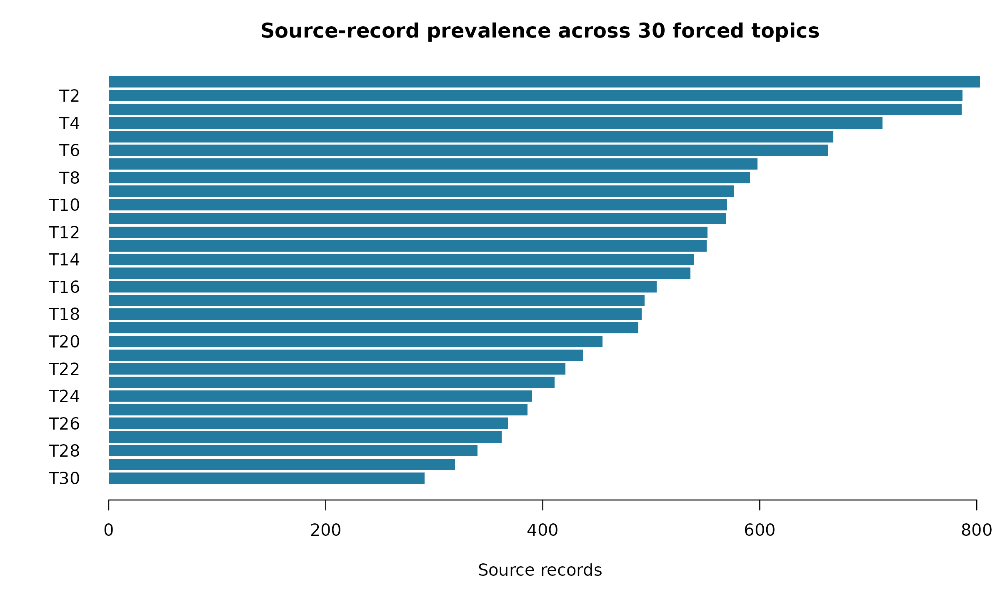
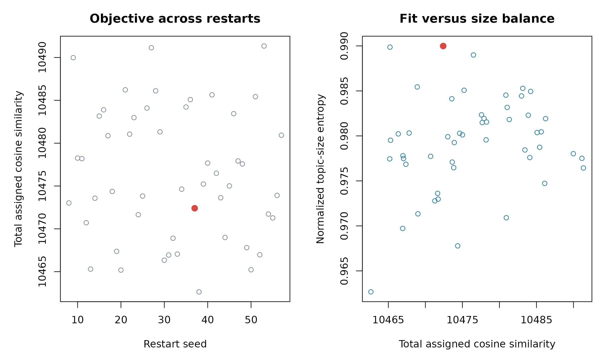
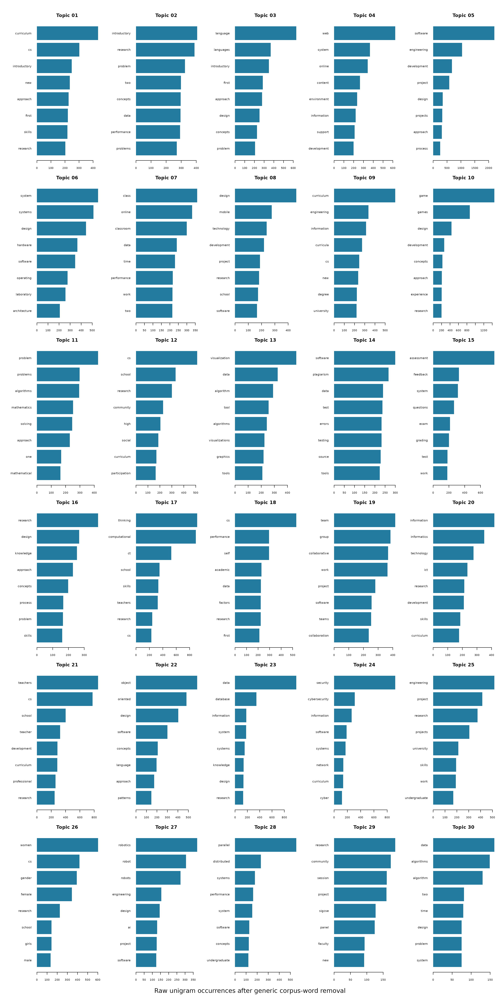

MCSE Abstract Topics
Review of a forced 30-topic semantic clustering of canonical abstracts
2026-08-08
Source:vignettes/articles/mcse_abstract_30_topics.Rmd
mcse_abstract_30_topics.RmdCorpus audit
kpi_values <- c(
format_count(audit_value[["source_rows"]]),
format_count(audit_value[["modeled_source_rows"]]),
format_count(audit_value[["distinct_clean_abstracts"]]),
format_count(audit_value[["missing_abstracts"]]),
format_count(audit_value[["placeholder_abstracts"]])
)
kpi_labels <- c(
"Source records", "Modeled records", "Distinct cleaned abstracts",
"Missing abstracts", "Placeholder abstracts"
)
kpi_items <- paste0(
'<div class="kpi"><div class="kpi-value">',
kpi_values,
'</div><div class="kpi-label">',
kpi_labels,
'</div></div>'
)
cat('<div class="kpi-grid">', paste(kpi_items, collapse = ""), '</div>')The analysis excludes missing abstracts and the literal placeholder
[NO ABSTRACT AVAILABLE]. It fits each distinct cleaned
abstract once, then maps the assignment back to every source record.
Long abstracts are represented by sentence-aware chunks combined into
one normalized abstract embedding.
audit_display <- result$data_audit
audit_display$value <- format_count(audit_display$value)
knitr::kable(
audit_display,
col.names = c("Audit metric", "Value"),
row.names = FALSE
)| Audit metric | Value |
|---|---|
| source_rows | 16,453 |
| missing_abstracts | 152 |
| placeholder_abstracts | 641 |
| modeled_source_rows | 15,660 |
| distinct_clean_abstracts | 15,308 |
| duplicate_occurrences | 352 |
| embedded_chunks | 17,564 |
| abstracts_with_multiple_chunks | 2,091 |
| model_max_tokens | 256 |
Forced topic-count caveat. Thirty topics were fixed by the analysis specification. They were not inferred as a uniquely optimal number from the corpus. Topic IDs are arbitrary and run-specific. Each automatic label is the exact lead sentence of the centroid-nearest corpus abstract—not a validated taxonomy or a generated summary. No c-TF-IDF or keyword score was used for assignments or labels.
Topic size and label overview
topic_order <- order(topics$n_source_records)
old_par <- graphics::par(mar = c(5, 5, 3, 1))
graphics::barplot(
topics$n_source_records[topic_order],
names.arg = paste0("T", topics$topic[topic_order]),
horiz = TRUE,
las = 1,
col = "#247ba0",
border = NA,
xlab = "Source records",
main = "Source-record prevalence across 30 forced topics"
)
graphics::par(old_par)
topic_display <- topics[
, c(
"topic", "canonical_lead_sentence", "canonical_paper_title",
"n_source_records", "source_record_share", "n_distinct_abstracts",
"median_cosine_distance", "p90_cosine_distance", "year_min", "year_max"
)
]
names(topic_display) <- c(
"Topic", "Exact corpus label", "Canonical paper", "Source records",
"Share", "Distinct abstracts", "Median distance", "P90 distance",
"First year", "Last year"
)
topic_display$`Exact corpus label` <- compact_text(
topic_display$`Exact corpus label`,
180L
)
topic_display$`Canonical paper` <- compact_text(
topic_display$`Canonical paper`,
100L
)
topic_display$Share <- format_percent(topic_display$Share)
topic_display$`Median distance` <- sprintf("%.3f", topic_display$`Median distance`)
topic_display$`P90 distance` <- sprintf("%.3f", topic_display$`P90 distance`)
knitr::kable(topic_display, row.names = FALSE)| Topic | Exact corpus label | Canonical paper | Source records | Share | Distinct abstracts | Median distance | P90 distance | First year | Last year |
|---|---|---|---|---|---|---|---|---|---|
| 1 | INTRODUCTORY COMPUTING COURSES EMERGED DURING THE SIXTIES, UNDER A VARIETY OF DESIGNATIONS SUCH AS “PROGRAMMING” OR “AUTOMATIC COMPUTING”, OFFERED TO UNIVERSITY STUDENTS IN A BROA… | WHY TEACH INTRODUCTORY COMPUTER SCIENCE? RECONCILING DIVERSE GOALS AND EXPECTATIONS | 803 | 5.1% | 763 | 0.255 | 0.355 | 1968 | 2020 |
| 2 | GOAL-DIRECTED PROBLEM-SOLVING LABS CAN LEAD A STUDENT TO BELIEVE THAT THE MOST IMPORTANT ACHIEVEMENT IN A FIRST PROGRAMMING COURSE IS TO GET PROGRAMS WORKING. | EXPERIENCE REPORT: THINKATHON - COUNTERING AN “I GOT IT WORKING” MENTALITY WITH PENCIL-AND-PAPER EX… | 787 | 5.0% | 777 | 0.271 | 0.361 | 1976 | 2020 |
| 3 | THE FIRST COURSE IN COMPUTER SCIENCE HAS BEEN THE CENTER OF DISCUSSION FOR MANY YEARS, AS MANY STUDENTS AND EDUCATORS HAVE BECOME DISSATISFIED WITH THE CONVENTIONAL TEACHING METHO… | A LECTURE/LABORATORY APPROACH TO THE FIRST COURSE IN PROGRAMMING | 786 | 5.0% | 759 | 0.267 | 0.354 | 1954 | 2020 |
| 4 | TO SUPPORT SCHOOLS IN TEACHING COMPUTER SCIENCE, WE HAVE STARTED THE INFORMATIK@SCHOOL PROJECT. | EXPERIENCES IN ONLINE TEACHING AND LEARNING | 713 | 4.6% | 693 | 0.322 | 0.438 | 1984 | 2020 |
| 5 | TRADITIONAL METHODS OF TEACHING SOFTWARE ENGINEERING AT THE UNDERGRADUATE AND GRADUATE LEVELS LACK FULL EFFECTIVENESS DUE TO THE METHOD OF ORGANIZATION OF THE COURSES AND COMPRESS… | TEACHING SOFTWARE DEVELOPMENT IN A STUDIO ENVIRONMENT | 668 | 4.3% | 650 | 0.287 | 0.397 | 1972 | 2020 |
| 6 | STUDIES IN THE FIELD OF COMPUTER SCIENCE COVER ASPECTS OF SCIENCE THAT ATTACH IMPORTANCE TO ANALYSIS AND ASPECTS OF ENGINEERING THAT ATTACH IMPORTANCE TO SYNTHESIS. | KITE MICROPROCESSOR AND CAE FOR COMPUTER SCIENCE | 663 | 4.2% | 650 | 0.338 | 0.480 | 1971 | 2020 |
| 7 | IN THIS ERA OF SMART DEVICES, NEW TECHNOLOGIES, GADGETS, APPS, AND NUMEROUS SYSTEMS AND SERVICES AVAILABLE OVER ONLINE, TEACHING AN INTRODUCTORY PROGRAMMING COURSE BY TRADITIONAL … | ACTIVE AND COLLABORATIVE LEARNING BASED DYNAMIC INSTRUCTIONAL APPROACH IN TEACHING INTRODUCTORY COM… | 598 | 3.8% | 588 | 0.311 | 0.430 | 1974 | 2020 |
| 8 | IN THIS PAPER, WE DESCRIBE A NEW UNDERGRADUATE MODULE FOR NOVICE STUDENTS CONDUCTED ENTIRELY THROUGH DISTANCE LEARNING: MY DIGITAL LIFE (TU100). | STARTING WITH UBICOMP: USING THE SENSEBOARD TO INTRODUCE COMPUTING | 591 | 3.8% | 581 | 0.339 | 0.470 | 1976 | 2020 |
| 9 | THIS POSTER PRESENTATION HIGHLIGHTS THE CURRICULAR RESOURCES AVAILABLE FROM THE TWO-YEAR COLLEGE EDUCATION COMMITTEE (TYCEC), A STANDING COMMITTEE OF THE ACM EDUCATION BOARD. | CURRICULAR RESOURCES FROM THE ACM TWO-YEAR COLLEGE EDUCATION COMMITTEE | 576 | 3.7% | 558 | 0.296 | 0.409 | 1964 | 2020 |
| 10 | GAMES CAN SERVE AS A VALUABLE TOOL FOR ENRICHING COMPUTER SCIENCE EDUCATION, SINCE THEY CAN FACILITATE A NUMBER OF CONDITIONS THAT CAN PROMOTE LEARNING AND INSTIGATE AFFECTIVE CHA… | IF MEMORY SERVES: TOWARDS DESIGNING AND EVALUATING A GAME FOR TEACHING POINTERS TO UNDERGRADUATE ST… | 570 | 3.6% | 567 | 0.273 | 0.467 | 1976 | 2020 |
| 11 | THIS PAPER HAS ATTEMPTED TO DESCRIBE AN APPROACH TO A FIRST COURSE IN THE USE OF COMPUTERS FOR NON-MAJORS IN EITHER COMPUTER SCIENCE OR MATHEMATICS. | AN APPROACH TO THE INTRODUCTORY COMPUTER SCIENCE COURSE FOR NON-MAJORS | 569 | 3.6% | 553 | 0.332 | 0.462 | 1970 | 2020 |
| 12 | MANY STATES THROUGHOUT THE COUNTRY ARE GREATLY IN NEED OF IMPROVEMENT OF THEIR K-12 STEM EDUCATIONAL SYSTEMS AND ALABAMA GENERALLY FALLS WITHIN THE 10 LOWEST PERFORMING STATES WIT… | ENHANCING K-12 EDUCATION WITH ENGINEERING OUTREACH | 552 | 3.5% | 547 | 0.274 | 0.388 | 1972 | 2020 |
| 13 | IT IS SHOWN HOW INTERACTIVE COMPUTER GRAPHICS IS USED IN INTRODUCTORY COMPUTER SCIENCE COURSES AND LABORATORIES AT NORTHEASTERN UNIVERSITY. | INTERACTIVE ANIMATIONS IN COMPUTER SCIENCE | 551 | 3.5% | 536 | 0.310 | 0.460 | 1974 | 2020 |
| 14 | USING AUTOMATED GRADING TOOLS TO PROVIDE FEEDBACK TO STUDENTS IS COMMON IN COMPUTER SCIENCE EDUCATION. | AUTOMATED FEEDBACK FRAMEWORK FOR INTRODUCTORY PROGRAMMING COURSES | 539 | 3.4% | 527 | 0.301 | 0.416 | 1973 | 2020 |
| 15 | AUTOMATED ASSESSMENT TOOLS ARE WIDELY USED AS A MEANS FOR PROVIDING FORMATIVE FEEDBACK TO UNDERGRADUATE STUDENTS IN COMPUTER SCIENCE COURSES WHILE HELPING THOSE COURSES SIMULTANEO… | NUDGING STUDENT LEARNING STRATEGIES USING FORMATIVE FEEDBACK IN AUTOMATICALLY GRADED ASSESSMENTS | 536 | 3.4% | 525 | 0.294 | 0.437 | 1974 | 2020 |
| 16 | THE SUCCESS OF UNIVERSITY-LEVEL EDUCATION DEPENDS ON THE QUALITY OF UNDERLYING SCHOOL EDUCATION AND ANY DEFICIENCY THEREIN MAY BE DETRIMENTAL TO A STUDENT’S CAREER. | ALICE IN OMAN: A STUDY ON OBJECT-FIRST APPROACHES IN COMPUTER SCIENCE EDUCATION | 505 | 3.2% | 496 | 0.335 | 0.449 | 1976 | 2020 |
| 17 | COMPUTATIONAL THINKING (CT) USES CONCEPTS THAT ARE ESSENTIAL TO COMPUTING AND INFORMATION SCIENCE TO SOLVE PROBLEMS, DESIGN AND EVALUATE COMPLEX SYSTEMS, AND UNDERSTAND HUMAN REAS… | CHANGING A GENERATION’S WAY OF THINKING: TEACHING COMPUTATIONAL THINKING THROUGH PROGRAMMING | 494 | 3.2% | 492 | 0.241 | 0.352 | 1976 | 2020 |
| 18 | THE NUMBER OF COMPUTER SCIENCE (CS) COURSES HAS BEEN DRAMATICALLY EXPANDING IN U.S. | THE ASSOCIATION OF HIGH SCHOOL COMPUTER SCIENCE CONTENT AND PEDAGOGY WITH STUDENTS’ SUCCESS IN COLL… | 491 | 3.1% | 486 | 0.309 | 0.445 | 1972 | 2020 |
| 19 | ACTIVE LEARNING IN COMPUTING (ALIC) IS THE FIRST CENTRE FOR EXCELLENCE IN TEACHING AND LEARNING (CETL) PROJECT FOR COMPUTING SCIENCE IN ENGLAND. | EVALUATING THE EXTENT TO WHICH SOCIABILITY AND SOCIAL PRESENCE AFFECTS LEARNING PERFORMANCE | 488 | 3.1% | 475 | 0.292 | 0.394 | 1978 | 2020 |
| 20 | WE DISCUSS THE ROLE OF COMPUTERS AND INFORMATICS IN SCHOOL EDUCATION IN POLAND; ‘INFORMATICS’ GENERALLY STANDS FOR ‘COMPUTER SCIENCE’. | INFORMATICS VERSUS INFORMATION TECHNOLOGY - HOW MUCH INFORMATICS IS NEEDED TO USE INFORMATION TECHN… | 455 | 2.9% | 454 | 0.342 | 0.494 | 1972 | 2020 |
| 21 | LITTLE IS KNOWN ABOUT HOW K-12 COMPUTER SCIENCE (CS) TEACHERS USE TECHNOLOGY AND PROBLEM-BASED LEARNING (PBL) TO TEACH CS CONTENT IN THE CONTEXT OF CS PRINCIPLES CURRICULA. | CS TEACHER EXPERIENCES WITH EDUCATIONAL TECHNOLOGY, PROBLEM-BASED LEARNING, AND A CS PRINCIPLES CUR… | 437 | 2.8% | 434 | 0.262 | 0.361 | 1972 | 2020 |
| 22 | OBJECT-ORIENTED PROGRAMMING IS WIDELY TAUGHT IN INTRODUCTORY COMPUTER SCIENCE COURSES, HOWEVER NO EXISTING OBJECT-ORIENTED PROGRAMMING LANGUAGE IS “THE OBVIOUS CHOICE” FOR A TEACH… | PANEL: DESIGNING THE NEXT EDUCATIONAL PROGRAMMING LANGUAGE | 421 | 2.7% | 399 | 0.278 | 0.439 | 1974 | 2020 |
| 23 | RELATIONAL DATABASES AND OTHER COLLECTIONS OF DATA ARE INCREASINGLY PREVALENT ACROSS A WIDE RANGE OF PROFESSIONS AND DISCIPLINES. | A DATA-CENTRIC INTRODUCTION TO COMPUTER SCIENCE FOR NON-MAJORS | 411 | 2.6% | 404 | 0.351 | 0.515 | 1975 | 2020 |
| 24 | SECURITY IS A CRITICAL ASPECT IN THE DESIGN, DEVELOPMENT, AND TESTING OF SOFTWARE SYSTEMS. | IMPLEMENTATION OF SECURITY MODULES WITH MODEL-ELICITING ACTIVITIES IN COMPUTER SCIENCE COURSES | 390 | 2.5% | 381 | 0.291 | 0.488 | 1976 | 2020 |
| 25 | AN INCREASING NUMBER OF INSTITUTIONS REQUIRE SOFTWARE EN-GINEERING AS PART OF THEIR COMPUTING CURRICULUM. | BEST PRACTICES IN SOFTWARE ENGINEERING PROJECT CLASS MANAGEMENT | 386 | 2.5% | 379 | 0.360 | 0.482 | 1972 | 2020 |
| 26 | GENDER DIFFERENCE APPROACHES TO THE PARTICIPATION OF WOMEN IN COMPUTING HAVE NOT PROVIDED ADEQUATE EXPLANATIONS FOR WOMEN’S DECLINING INTEREST IN COMPUTER SCIENCE (CS) AND RELATED… | DIVERSITY OR DIFFERENCE? NEW RESEARCH SUPPORTS THE CASE FOR A CULTURAL PERSPECTIVE ON WOMEN IN COMP… | 368 | 2.3% | 360 | 0.235 | 0.362 | 1977 | 2020 |
| 27 | MOBILE ROBOTICS IS INHERENTLY A MULTIDISCIPLINARY FIELD DUE TO THE INTERACTION OF HARDWARE, SOFTWARE, AND ELECTRONICS TO CREATE A MACHINE THAT CAN SENSE ITS ENVIRONMENT AND THEN A… | DESIGN OF A MODULAR EDUCATIONAL ROBOTICS PLATFORM FOR MULTIDISCIPLINARY EDUCATION | 362 | 2.3% | 357 | 0.277 | 0.433 | 1983 | 2020 |
| 28 | DESPITE THE FACTS THAT MULTICORE CPUS ARE PRESENT IN VIRTUALLY EVERY PERSONAL COMPUTER OR CELL PHONE AND DISTRIBUTED SYSTEMS IN THE FORM OF CLOUD SERVICES ARE STEADILY PENETRATING… | AN ENTERTAINING APPROACH TO PARALLEL PROGRAMMING EDUCATION | 340 | 2.2% | 335 | 0.318 | 0.506 | 1983 | 2020 |
| 29 | AS WE CELEBRATE THE 50TH SIGCSE SYMPOSIUM, THIS PANEL EXPLORES HOW COMPUTING EDUCATION RESEARCHERS CHART A COURSE INDIVIDUALLY AND AS A COMMUNITY TO BUILD OUR RESEARCH PRACTICES A… | NEGOTIATING VARIED RESEARCH GOALS IN COMPUTING EDUCATION RESEARCH | 319 | 2.0% | 304 | 0.348 | 0.505 | 1970 | 2020 |
| 30 | DATA STRUCTURES (CS2) COURSES AND COURSE BOOKS DO NOT USUALLY PUT MUCH EMPHASIS IN THE PROCESS OF HOW A DATA STRUCTURE IS ENGINEERED OR INVENTED. | A SOFTWARE CRAFTSMAN’S APPROACH TO DATA STRUCTURES | 291 | 1.9% | 278 | 0.466 | 0.699 | 1971 | 2020 |
Cosine distance is not a probability or confidence score. Smaller values mean that an abstract is closer to its assigned topic centroid. Assignment margin is the selected-centroid similarity minus the second-best similarity; smaller margins identify less distinct assignments.
Representative papers and canonical abstracts
The four representatives for each topic were selected from the central quarter of that topic. Rank 1 is the centroid-nearest canonical abstract. Ranks 2–4 add embedding-space diversity through maximal marginal relevance. The labels and representatives therefore remain semantic, full-abstract evidence.
representative_topic_html <- vapply(
seq_len(nrow(topics)),
function(topic_row) {
topic_id <- topics$topic[[topic_row]]
topic_representatives <- representatives[
representatives$topic == topic_id,
,
drop = FALSE
]
topic_representatives <- topic_representatives[
order(topic_representatives$rank),
,
drop = FALSE
]
paper_html <- vapply(
seq_len(nrow(topic_representatives)),
function(representative_row) {
paper <- topic_representatives[representative_row, , drop = FALSE]
doi_text <- if (
is.na(paper$doi[[1L]]) || !nzchar(trimws(paper$doi[[1L]]))
) {
"DOI unavailable"
} else {
paste0("DOI: ", html_escape(paper$doi[[1L]]))
}
sprintf(
paste0(
'<details%s><summary>Rank %d%s · %s (%s)</summary>',
'<div class="paper-meta">%s · %s · %s · %s · distance %.3f · margin %.4f</div>',
'<p class="abstract">%s</p></details>'
),
if (paper$rank[[1L]] == 1L) " open" else "",
paper$rank[[1L]],
if (paper$rank[[1L]] == 1L) " — canonical" else "",
html_escape(paper$title[[1L]]),
html_escape(as.character(paper$year[[1L]])),
html_escape(paper$authors[[1L]]),
html_escape(ifelse(is.na(paper$source[[1L]]), "Source unavailable", paper$source[[1L]])),
doi_text,
html_escape(paper$source_record_id[[1L]]),
paper$cosine_distance_to_centroid[[1L]],
paper$assignment_margin[[1L]],
html_escape(paper$cleaned_abstract[[1L]])
)
},
character(1)
)
sprintf(
paste0(
'<div class="topic-block"><h3>Topic %d</h3>',
'<div class="topic-meta">%s source records · %s distinct abstracts · %s</div>',
'<div class="canonical-label"><strong>Exact corpus label:</strong> %s</div>',
'%s</div>'
),
topic_id,
format_count(topics$n_source_records[[topic_row]]),
format_count(topics$n_distinct_abstracts[[topic_row]]),
format_percent(topics$source_record_share[[topic_row]]),
html_escape(topics$canonical_lead_sentence[[topic_row]]),
paste(paper_html, collapse = "\n")
)
},
character(1)
)
cat(paste(representative_topic_html, collapse = "\n"))Topic 1
Rank 1 — canonical · WHY TEACH INTRODUCTORY COMPUTER SCIENCE? RECONCILING DIVERSE GOALS AND EXPECTATIONS (2005)
INTRODUCTORY COMPUTING COURSES EMERGED DURING THE SIXTIES, UNDER A VARIETY OF DESIGNATIONS SUCH AS "PROGRAMMING" OR "AUTOMATIC COMPUTING", OFFERED TO UNIVERSITY STUDENTS IN A BROAD RANGE OF DISCIPLINES. WHEREAS THE CONCEPT OF A "FIRST COURSE IN COMPUTER SCIENCE" SURVIVED FOUR DECADES, AND EVEN MOVED TO THE HIGH SCHOOL LEVEL, ITS GOALS AND CONTENTS HAVE BEEN CHANGING EXCESSIVELY, AND HAVE NOT AS YET REACHED A STABLE STATE. WE REVIEW THE HISTORICAL DEVELOPMENT OF TYPICAL INTRODUCTORY CS COURSES AND ANALYZE THE FORCES THAT SHAPED THEM. INSPIRED BY MORE MATURE SCIENCES, AND THE WAY THEIR INTRODUCTORY COURSES EVOLVED OVER CENTURIES TO SIMULTANEOUSLY MEET DISTINCT EXPECTATIONS, WE ARGUE THAT AN INTRODUCTORY CS COURSE SHOULD ADDRESS THREE GOALS: THE DEVELOPMENT OF SKILLS IN PROGRAMMING SOME SIMPLE SYSTEM, APPRECIATION OF INTELLECTUAL ACHIEVEMENTS, AND THE ROLE OF INFORMATION TECHNOLOGY IN SOCIETY. ALTHOUGH THIS REQUIREMENT MAY BE CONSIDERED OVERLY AMBITIOUS, WE AIM TO SHOW THAT IT CAN BE ACHIEVED IF ISSUES ARE PRESENTED IN TERMS OF WELL-CHOSEN EXAMPLES RATHER THAN IN A GENERAL, ABSTRACT MANNER. © SPRINGER-VERLAG BERLIN HEIDELBERG 2005.
Rank 2 · A PROFILE OF UNDERGRADUATE COMPUTER SCIENCE CURRICULA (1995)
THIS ARTICLE PRESENTS THE RESULTS OF A SURVEY ON COMPUTER SCIENCE CURRICULA SENT TO 185 COMPUTER SCIENCE DEPARTMENTS NATIONALLY IN 1994. THE SURVEY CONSISTS OF 26 GROUPS OF QUESTIONS THAT PROBE UNDERGRADUATE COMPUTER SCIENCE CURRICULA. RESULTS FROM 81 UNIVERSITIES ARE REPORTED AND SHOW THE MAJOR OUTLINES OF WHAT IS TAUGHT IN THIS FAST-CHANGING FIELD. IT IS HOPED THAT THE RESULTS WILL HELP CURRICULUM DESIGNERS ASSESS WHAT IS STATE OF THE ART IN THE VARIOUS AREAS OF COMPUTER SCIENCE CURRICULA. ALSO, IT MIGHT ENCOURAGE THOSE IN INDUSTRY TO GIVE MORE FEEDBACK ABOUT WHAT SKILLS ARE OF INTEREST TO THEM.
Rank 3 · TEACHING ENTERING STUDENTS TO THINK LIKE COMPUTER SCIENTISTS (2005)
THIS PAPER DESCRIBES A NEW COURSE DEVELOPED AT THE UNIVERSITY OF MAINE TO HELP STUDENTS BETTER UNDERSTAND THE DISCIPLINE OF COMPUTER SCIENCE AND TO AID US IN RECRUITING AND RETAINING MAJORS. THE COURSE PROVIDES AN OVERVIEW OF COMPUTER SCIENCE, BUT ALSO, THROUGH FOCUSING ON PARTICULAR TOPICS AT AN ADVANCED LEVEL, BEGINS TO TEACH STUDENTS HOW COMPUTER SCIENTISTS THINK ABOUT PROBLEMS. THE COURSE HAS BEEN TAUGHT IN FALL 2002, 2003 AND 2004. THIS PAPER DESCRIBES THE COURSE AND DISCUSSES OUR RESULTS FROM THE FIRST TWO YEARS.
Rank 4 · AN INSTRUCTIONALLY ACCEPTABLE COST EFFECTIVE APPROACH TO A GENERAL INTRODUCTORY COURSE (1976)
THIS PAPER DESCRIBES ONE APPROACH TO ANSWERING THE NEED FOR AN INTRODUCTORY COMPUTER SCIENCE COURSE WHICH WILL APPEAL TO A UNIVERSITY-WIDE AUDIENCE. KANSAS STATE UNIVERSITY AS MANY OTHER INSTITUTIONS WAS FACES WITH SUCH A CHLLENGE WHEN FINANCIAL CONSTRAINTS BECAME MORE RIGID. A LARGE INFLUX OF STUDENTS ENTERED THE COMPUTER SCIENCE PROGRAM, AND MANY OTHER UNITS WITHIN THE UNIVERSITY RECOGNIZED THE NEED FOR SOME PREPARATION FOR THEIR STUDENTS IN COMPUTER SCIENCE. OVER A PERIOD OF THREE YEARS THE COURSE DISCUSSED WAS DEVELOPED WITH LARGE LECTURES AND SMALL LABORATORIES. IT IS A COST-EFFECTIVE SOLUTION THAT CATERS TO THE NEEDS OF VARIOUS DISCIPLINES.
Topic 2
Rank 1 — canonical · EXPERIENCE REPORT: THINKATHON - COUNTERING AN "I GOT IT WORKING" MENTALITY WITH PENCIL-AND-PAPER EXERCISES (2019)
GOAL-DIRECTED PROBLEM-SOLVING LABS CAN LEAD A STUDENT TO BELIEVE THAT THE MOST IMPORTANT ACHIEVEMENT IN A FIRST PROGRAMMING COURSE IS TO GET PROGRAMS WORKING. THIS IS COUNTER TO RESEARCH INDICATING THAT CODE COMPREHENSION IS AN IMPORTANT DEVELOPMENTAL STEP FOR NOVICE PROGRAMMERS. WE OBSERVED THIS IN OUR OWN CS-0 INTRODUCTORY PROGRAMMING COURSE, AND FURTHERMORE, THAT STUDENTS WEREN’T MAKING THE CONNECTION BETWEEN CODE COMPREHENSION IN LABS AND A FINAL EXAMINATION THAT REQUIRED SOLUTIONS TO PENCIL-AND-PAPER COMPREHENSION AND WRITING EXERCISES, WHERE SOUND UNDERSTANDING OF PROGRAMMING CONCEPTS IS ESSENTIAL. REALISING THESE DEFICIENCIES LATE IN OUR COURSE, WE PUT ON THREE 3-HOUR OPTIONAL REVISION EVENINGS JUST DAYS BEFORE THE EXAM. BASED ON A MASTERY LEARNING PHILOSOPHY, STUDENTS WERE EXPECTED TO WORK THROUGH A BANK OF AROUND 200 PENCIL-AND-PAPER EXERCISES. BY COMPARISON WITH A MACHINE-BASED HACKATHON, WE CALLED THIS A THINKATHON. STUDENTS COMPLETED A PRE AND POST QUESTIONNAIRE ABOUT THEIR EXPERIENCE OF THE THINKATHON. WHILE WE FIND THAT THINKATHON ATTENDANCE POSITIVELY INFLUENCES FINAL GRADES, WE BELIEVE OUR REFLECTION ON THE OVERALL EXPERIENCE IS OF GREATER VALUE. WE REPORT THAT: RESPECTED METHODS FOR DEVELOPING CODE COMPREHENSION MAY NOT BE ENOUGH ON THEIR OWN; NOVICES MUST EXERCISE THEIR DEVELOPING SKILLS AWAY FROM MACHINES; AND THERE ARE SOCIAL LEARNING OUTCOMES IN PROGRAMMING COURSES, CURRENTLY IMPLICIT, THAT WE SHOULD MAKE EXPLICIT.
Rank 2 · EVALUATION OF PROGRAMMING COMPETENCY USING STUDENT ERROR PATTERNS (2015)
COMPUTER PROGRAMMING IS A CHALLENGING SKILL THAT STUDENTS IN COMPUTER SCIENCE AND RELATED DISCIPLINES ARE EXPECTED TO LEARN. COMPUTER SCIENCE EDUCATORS AND STUDENTS ARE CONCERNED ABOUT THE FAILURES IN PROGRAMMING COMPETENCY. PROGRAMMING ERRORS REFLECT VARIOUS DETAILS OF STUDENT CONCEPTUAL UNDERSTANDING AND PROGRAMMING SKILLS DEVELOPED. THIS PAPER ATTEMPTS TO PREDICT THE FAILURES IN PROGRAMMING COMPREHENSION AND DEBUGGING SKILLS BASED ON PROGRAMMING ERRORS GENERATED BY THE LEARNER. WE CONDUCT A MIXED METHOD APPROACH WITH PRE-POST TEST EXPERIMENTAL DESIGN TO EVALUATE THE JAVA PROGRAMMING COMPETENCY OF THE LEARNER. WE ALSO COMPUTE THE ERROR METRICS AND SUPPLEMENT THE COURSE MATERIAL TO IMPROVE THE COMPETENCY THROUGH SELF-LEARNING SPOKEN TUTORIAL WORKSHOPS. THE CHARACTERIZATION OF STUDENT PROGRAMMING PATTERNS HELPS TO IDENTIFY AT RISK STUDENTS AND DETERMINE SPECIFIC INTERVENTIONS. WE ANALYZE THE COMPILATION ERRORS, COMPUTATIONAL TIME AND COMPUTED ERROR QUOTIENTS TO PREDICT THE PROGRAMMING BEHAVIOUR. RESULTS OF THE STUDY SHOW THAT STUDENTS HAVE IMPROVED THEIR PROGRAMMING SKILLS AND BENEFITED FROM THE APPROACH. IMPLICATIONS OF THIS STUDY IS ALSO HELPFUL TO COMPUTING EDUCATION PRACTITIONERS, WORKSHOP ORGANIZERS, CONTENT DEVELOPERS AND REVIEWERS TO IMPROVISE THE COURSE CONTENT.
Rank 3 · LEARNING LOOPS: A REPLICATION STUDY ILLUMINATES IMPACT OF HS COURSES (2016)
A RECENT STUDY ABOUT THE EFFECTIVENESS OF SUBGOAL LABELING IN AN INTRODUCTORY COMPUTER SCIENCE PROGRAMMING COURSE BOTH SUPPORTED PREVIOUS RESEARCH AND PRODUCED SOME PUZZLING RESULTS. IN THIS STUDY, WE REPLICATE THE EXPERIMENT WITH A DIFFERENT STUDENT POPULATION TO DETERMINE IF THE RESULTS ARE REPEATABLE. WE ALSO GAVE THE EXPERIMENTAL TASK TO STUDENTS IN A FOLLOW-ON COURSE TO EXPLORE IF THEY HAD INDEED MASTERED THE PROGRAMMING CONCEPT. WE FOUND THAT THE PREVIOUS PUZZLING RESULTS WERE REPEATED. IN ADDITION, FOR THE NOVICE PROGRAMMERS, WE FOUND A STATISTICALLY SIGNIFICANT DIFFERENCE IN PERFORMANCE BASED ON WHETHER THE STUDENT HAD PREVIOUS PROGRAMMING COURSES IN HIGH SCHOOL. HOWEVER, THIS PERFORMANCE DIFFERENCE DISAPPEARS IN A FOLLOW-ON COURSE AFTER ALL STUDENTS HAVE TAKEN AN INTRODUCTORY COMPUTER SCIENCE PROGRAMMING COURSE. THE RESULTS OF THIS STUDY HAVE IMPLICATIONS FOR HOW QUICKLY STUDENTS ARE EVALUATED FOR MASTERY OF KNOWLEDGE AND HOW WE GROUP STUDENTS IN INTRODUCTORY PROGRAMMING COURSES.
Rank 4 · USING COMMUTATIVE ASSESSMENTS TO COMPARE CONCEPTUAL UNDERSTANDING IN BLOCKS-BASED AND TEXT-BASED PROGRAMS (2015)
BLOCKS-BASED PROGRAMMING ENVIRONMENTS ARE BECOMING INCREASINGLY COMMON IN INTRODUCTORY PROGRAMMING COURSES, BUT TO DATE, LITTLE COMPARATIVE WORK HAS BEEN DONE TO UNDERSTAND IF AND HOW THIS APPROACH AFFECTS STUDENTS' EMERGING UNDERSTANDING OF FUNDAMENTAL PROGRAMMING CONCEPTS. IN AN EFFORT TO UNDERSTAND HOW TOOLS LIKE SCRATCH AND BLOCKLY DIFFER FROM MORE CONVENTIONAL TEXT-BASED INTRODUCTORY PROGRAMMING LANGUAGES WITH RESPECT TO CONCEPTUAL UNDERSTANDING, WE DEVELOPED A SET OF "COMMUTATIVE" ASSESSMENTS. EACH MULTIPLE-CHOICE QUESTION ON THE ASSESSMENT INCLUDES A SHORT PROGRAM THAT CAN BE DISPLAYED IN EITHER A BLOCKS-BASED OR TEXT-BASED FORM. THE SET OF POTENTIAL ANSWERS FOR EACH QUESTION INCLUDES THE CORRECT ANSWER ALONG WITH CHOICES INFORMED BY PRIOR RESEARCH ON NOVICE PROGRAMMING MISCONCEPTIONS. IN THIS PAPER WE INTRODUCE THE COMMUTATIVE ASSESSMENT, DISCUSS THE THEORETICAL AND PRACTICAL MOTIVATIONS FOR THE ASSESSMENT, AND PRESENT FINDINGS FROM A STUDY THAT USED THE ASSESSMENT. THE STUDY HAD 90 HIGH SCHOOL STUDENTS TAKE THE ASSESSMENT AT THREE POINTS OVER THE COURSE OF THE FIRST TEN WEEKS OF AN INTRODUCTION TO PROGRAMMING COURSE, ALTERNATING THE MODALITY (BLOCKS VS. TEXT) FOR EACH QUESTION OVER THE COURSE OF THE THREE ADMINISTRATIONS OF THE ASSESSMENT. OUR ANALYSIS REVEALS DIFFERENCES ON PERFORMANCE BETWEEN BLOCKS-BASED AND TEXT-BASED QUESTIONS AS WELL AS DIFFERENCES IN THE FREQUENCY OF MISCONCEPTIONS BASED ON THE MODALITY. FUTURE WORK, POTENTIAL IMPLICATIONS, AND LIMITATIONS OF THESE FINDINGS ARE ALSO DISCUSSED.
Topic 3
Rank 1 — canonical · A LECTURE/LABORATORY APPROACH TO THE FIRST COURSE IN PROGRAMMING (1978)
THE FIRST COURSE IN COMPUTER SCIENCE HAS BEEN THE CENTER OF DISCUSSION FOR MANY YEARS, AS MANY STUDENTS AND EDUCATORS HAVE BECOME DISSATISFIED WITH THE CONVENTIONAL TEACHING METHODS. BASED ON THE TRAINING REQUIRED BY EARLY COMPUTER SPECIALISTS, WE HAVE TRADITIONALLY CONCERNED OURSELVES WITH TEACHING A PROGRAMMING LANGUAGE WITHOUT SPECIFICALLY ADDRESSING OURSELVES TO SUCH CONCEPTS AS PROBLEM SOLVING, ALGORITHM DEVELOPMENT, STORAGE USAGE, ETC. THIS APPROACH YIELDED SATISFACTORY RESULTS WHILE PROGRAMMING STUDENTS WERE DRAWN ONLY FROM THOSE FIELDS WHICH DEALT WITH PROBLEM SOLVING WITHIN THEIR OWN DISCIPLINES-E.G., ENGINEERING, MATHEMATICS. HOWEVER, PROSPECTIVE PROGRAMMING STUDENTS ARE NOW BEING DRAWN FROM A WIDER RANGE OF DISCIPLINES. THE INSTRUCTOR IN THE FIRST PROGRAMMING COURSE IS NO LONGER ABLE TO IGNORE THE CONCEPTS JUST MENTIONED, WHILE ASSUMING THAT STUDENTS HAVE LEARNED THESE IDEAS IN OTHER COURSES. © PAPERS OF THE SIGCSE/CSA TECHNICAL SYMPOSIUM ON COMPUTER SCIENCE EDUCATION, SIGCSE 1978.
Rank 2 · LEARNING PROGRAMMING USING LEARNING OBJECTS (2015)
THIS PAPER SUMMARIZES THE EXPERIENCE GATHERED IN TECHNICAL UNIVERSITY OF CIVIL ENGINEERING FROM EUROPEAN AND TRANS-NATIONAL E-LEARNING PROJECTS IN THE PAST COUPLE OF YEARS. THE MAIN FOCUS IS ON THE DEVELOPMENT OF LEARNING OBJECTS (LO) IN LEARNING PROGRAMMING FIELD. THIS PAPER PRESENT THE IMPLEMENTATION OF THE E-LEARNING TOOLS TO SUPPORT THE IMPROVEMENT OF PROGRAMMING SKILLS DURING ACADEMIC EDUCATION OR/AND IN THE ADDITIONAL EDUCATION. THE LOS ARE INTERACTIVE VISUALIZATIONS OF PROGRAM CODE EXAMPLES OR PROGRAMMING TASKS. THE IDEA OF THE PROGRAM VISUALIZATION LOS IS DEBUGGER LIKE STEP-BY-STEP PROGRAM EXECUTION IN BOTH FORWARD AND BACKWARD DIRECTIONS. THE PROGRAM CODE IS HIGHLIGHTED IN EACH IMPORTANT STEP OF THE PROGRAM EXECUTION AND THE RUN OF THE EXECUTION IN CODE IS ALSO VISUALIZED BY ARROWS WHEN NECESSARY. IN EACH STEP OF THE PROGRAM EXECUTION CONSOLE IS VISIBLE AS WELL AS THE MEMORY AREA. THERE ARE ALSO AREAS FOR THE CONDITIONS AND FOR THE SHORT EXPLANATIONS OF THE CURRENT STEP. THE MEMORY PART IS THE ONLY ONE WHERE THE LAYOUT CAN BE CHANGED ACCORDING TO THE SUBJECT AS LEARNING GOAL. THESE CHANGES APPEAR FOR EXAMPLE IN CASE OF ARRAYS WHEN THE STRUCTURE OF THE ARRAY IS VISUALIZED THE LOS HAVE BEEN DEVELOPED TO HELP STUDENTS TO UNDERSTAND PROGRAMMING STRUCTURES MORE EASILY, HAVING THE CAPACITY AND APPROPRIATE PROGRAMMING SKILLS NEEDED FOR THEIR OPTIMAL INTEGRATION ACCORDING TO THE REQUIREMENTS OF THE ROMANIAN AND EUROPEAN CURRICULA. A LO CAN COVER ANY SPECIFIC PROGRAMMING PROBLEM IN ANY PROGRAMMING LANGUAGE. LO CAN ALSO COVER THE PROBLEM-SOLVING LOGIC AT THE ALGORITHMIC LEVEL. IN THE END IS PRESENTED A CASE OF STUDY ORGANIZED ON THE SAME COURSE IN TWO YEARS: IN THE FIRST YEAR STUDENTS DO NOT HAVE THE PROGRAM VISUALIZATION LOS AS LEARNING MATERIAL AVAILABLE AND IN THE SECOND YEAR THEY HAVE THE PROGRAM VISUALIZATION LOS AVAILABLE. THE STUDENTS STUDY EXACTLY THE SAME COURSE. THE EFFECTS OF THE PROGRAM VISUALIZATION LOS ON THE RESULTS ARE THEN ANALYZED BY THE FINAL COURSE POINTS, GRADES AND ACTIVITY OF THE STUDENTS AND ALSO WITH A SURVEY ABOUT ALL LEARNING MATERIALS AVAILABLE HELD AT THE END OF THE COURSE. INTERACTIVE LOS IS AN IDEA THAT MANY TEACHERS WELCOME IN THEIR SEARCH FOR NEW METHODS AND SUPPORT FOR NOVICE PROGRAMMING STUDENTS. IT IS QUITE CLEAR THAT STUDENTS BELIEVE THAT LOS CAN BE USEFUL FOR THEM AS NOVICE PROGRAMMING STUDENTS. BUT IT IS ALSO SURE THAT MORE INTRODUCTIONS AND BETTER INTEGRATION OF LOS IS NEEDED TO ENCOURAGE STUDENTS TO USE THEM MORE FREQUENTLY AS A NORMAL PART OF THEIR PROGRAMMING STUDY.
Rank 3 · A PROGRAMMING LANGUAGES COURSE FOR FRESHMEN (2005)
PROGRAMMING LANGUAGES ARE A PART OF THE CORE OF COMPUTER SCIENCE. COURSES ON PROGRAMMING LANGUAGES ARE TYPICALLY OFFERED TO JUNIOR OR SENIOR STUDENTS, AND TEXTBOOKS ARE BASED ON THIS ASSUMPTION. HOWEVER, OUR COMPUTER SCIENCE CURRICULUM OFFERS THE PROGRAMMING LANGUAGES COURSE IN THE FIRST YEAR. THIS UNUSUAL SITUATION LED US TO DESIGN IT FROM AN UNTYPICAL APPROACH. IN THIS PAPER, WE FIRST ANALYZE AND CLASSIFY PROPOSALS FOR THE PROGRAMMING LANGUAGES COURSE INTO DIFFERENT PURE AND HYBRID APPROACHES. THEN, WE DESCRIBE A COURSE FOR FRESHMEN BASED ON FOUR PURE APPROACHES, AND JUSTIFY THE MAIN CHOICES MADE. FINALLY, WE IDENTIFY THE SOFTWARE USED FOR LABORATORIES AND OUTLINE OUR EXPERIENCE AFTER TEACHING IT FOR SEVEN YEARS.
Rank 4 · TEACHING AND LEARNING COMPUTER PROGRAMMING: A SURVEY OF STUDENT PROBLEMS, TEACHING METHODS, AND AUTOMATED INSTRUCTIONAL TOOLS (1980)
TO IMPROVE INTRODUCTORY COMPUTER SCIENCE COURSES AND TO UPDATE THE TEACHING OF COMPUTER PROGRAMMING, NEW TEACHING METHODS EMPHASIZING STRUCTURED PROGRAMMING AND TOP-DOWN DESIGN HAVE BEEN PRESENTED AND A VARIETY OF AUTOMATED INSTRUCTIONAL TOOLS HAVE BEEN DEVELOPED. THE PURPOSE OF THIS PAPER IS: (1) TO SURVEY A NUMBER OF METHODS AND TOOLS USED IN THE TEACHING OF PROGRAMMING; (2) TO PRESENT, WITH THE AID OF THIS SURVEY, A NUMBER OF AREAS WHERE BEGINNING PROGRAMMERS EXPERIENCE DIFFICULTIES; (3) TO PRESENT WAYS OF IMPROVING SOME OF THE TOOLS; AND (4) TO PROPOSE OTHER POSSIBLE AIDS. THIS PAPER IS ORGANIZED AS FOLLOWS. SECTION 1 INTRODUCES THE TOPIC AND PURPOSE OF THE PAPER. SECTION 2 REVIEWS SEVERAL TEACHING METHODS DISCUSSED IN THE LITERATURE. SECTION 3 SURVEYS VARIOUS STUDENT-ORIENTED INTERACTIVE AND NONINTERACTIVE TOOLS. SECTION 4 DISCUSSES NONSTUDENT-ORIENTED AIDS AND PRESENTS ALTERNATIVES BY DISCUSSING HOW TO ADAPT SIMILAR AIDS TO A STUDENT ENVIRONMENT. SECTION 5 PROVIDES A SUMMARY OF THE PAPER AND A CONCLUSION. PERTINENT PROBLEM AREAS AND STUDENTS' VIEWPOINTS ARE PRESENTED IN EACH SECTION.
Topic 4
Rank 1 — canonical · EXPERIENCES IN ONLINE TEACHING AND LEARNING (2008)
TO SUPPORT SCHOOLS IN TEACHING COMPUTER SCIENCE, WE HAVE STARTED THE INFORMATIK@SCHOOL PROJECT. IN THIS PROJECT, WHICH IS MEANWHILE FUNDED BY "OBERFRANKENSTIFTUNG", WE COMMUNICATE COMPUTER SCIENCE CONTENT TO BEGINNERS AND MATURED STUDENTS. AS THE NUMBER OF PARTICIPATING STUDENTS IS VERY LARGE IN COMPARISON TO THE NUMBER OF ADVISORS AND BIG DISTANCES HAVE TO BE BRIDGED, WE SEPARATED STUDENTS INTO TWO GROUPS. STUDENTS FROM SCHOOLS LOCATED NOT FAR FROM OUR UNIVERSITY ARE TAUGHT IN COMMON FACE-TO-FACE LESSONS, WHILE FAR-OFF STUDENTS GET TAUGHT THE SAME CONTENT IN ONLINE LESSONS. IN THIS PAPER WE WANT TO PRESENT THE PROJECT, ITS PRECONDITIONS AND THE DIDACTICAL AND CONTENT BASED CONCEPTS. WE WILL INTRODUCE A WEB BASED TECHNICAL ENVIRONMENT WHICH FULFILLS THESE ISSUES AND FACILITATES REALIZATION OF AFORE MENTIONED ONLINE COURSES. FINALLY, WE PRESENT LESSONS LEARNED FROM THIS PROJECT AND DRAW CONCLUSIONS ESPECIALLY CONCERNING THE TECHNICAL PLATFORM WHICH CONSISTS OF HARDWARE AND SOFTWARE USED.
Rank 2 · TEACHING AND LEARNING IN LIVE ONLINE CLASSROOMS (2007)
ONLINE PRESENCE OF INFORMATION AND SERVICES IS PERVASIVE. TEACHING AND LEARNING ARE NO EXCEPTION. COURSEWARE MANAGEMENT SYSTEMS PLAY AN IMPORTANT ROLE IN ENHANCING INSTRUCTIONAL DELIVERY FOR EITHER TRADITIONAL DAY, FULL-TIME STUDENTS OR NON-TRADITIONAL EVENING, PARTY-TIME ADULT LEARNERS ENROLLED IN ONLINE PROGRAMS. WHILE ONLINE COURSE MANAGEMENT TOOLS ARE WITH NO DOUBT PRACTICAL, THEY LIMIT, HOWEVER, LIVE OR SYNCHRONOUS COMMUNICATION TO "CHAT" ROOMS, WHOSE DISCOURSE HAS LITTLE IN COMMON WITH FACE-TO-FACE CLASS COMMUNICATION. A MORE RECENT TREND IN ONLINE TEACHING AND LEARNING IS THE ADOPTION AND INTEGRATION OF WEB CONFERENCING TOOLS TO ENABLE LIVE ONLINE CLASSROOMS AND RECREATE THE ETHOS OF TRADITIONAL FACE-TO-FACE SESSIONS. IN THIS PAPER WE PRESENT THE EXPERIENCE WE HAVE HAD WITH THE ADOPTION OF THE LEARNLINC® WEB CONFERENCING TOOL, AN ILINC COMMUNICATIONS, INC. PRODUCT. WE HAVE COUPLED LEARNLINC WITH BLACKBOARD®, FOR THE ONLINE AND HYBRID COMPUTER SCIENCE COURSES WE OFFERED IN THE PAST ACADEMIC YEAR IN THE EVENING UNDERGRADUATE AND GRADUATE COMPUTER SCIENCE PROGRAMS AT RIVIER COLLEGE. TWELVE COURSES, ENROLLING OVER 150 STUDENTS, HAVE USED THE SYNCHRONOUS ONLINE TEACHING CAPABILITIES OF LEARNLINC. STUDENTS WHO TOOK COURSES IN THE ONLINE OR HYBRID FORMAT COULD EXPERIENCE A COMPARABLE LEVEL OF INTERACTION, PARTICIPATION, AND COLLABORATION AS IN TRADITIONAL CLASSES. WE SOLICITED STUDENT FEEDBACK BY ADMINISTERING A STUDENT SURVEY TO OVER 100 STUDENTS. THE 55% RESPONSE RATE PRODUCED THE DATA FOR THIS PAPER'S STUDY. WE REPORT ON THE STUDY'S FINDINGS AND SHOW STUDENTS' RANKINGS OF EVALUATION CRITERIA APPLIED TO HYBRID AND ONLINE INSTRUCTIONAL FORMATS, WITH OR WITHOUT A WEB CONFERENCING TOOL. OUR ANALYSIS SHOWS THAT STUDENTS RANKED FAVORABLY LEARNLINC LIVE SESSIONS ADDED TO BLACKBOARD-ONLY ONLINE CLASSES. IN ADDITION, HOW THEY LEARNED IN LIVE ONLINE CLASSROOMS WAS FOUND TO BE THE CLOSEST TO THE HYBRID CLASS EXPERIENCE WITH REGARD TO TEACHING PRACTICES THEY PERCEIVED AS MOST IMPORTANT TO THEM, SUCH AS SEEKING INSTRUCTOR'S ASSISTANCE, MANAGING TIME ON TASK, AND EXERCISING PROBLEM SOLVING SKILLS.
Rank 3 · STUDENT STATUS MONITORING TOOL (SSM): PROXY FOR THE REAL WORLD EXPERT IN ONLINE COURSE DELIVERY (2003)
DISTANCE EDUCATION HAS ENTERED A NEW ERA, WHERE IT IS NOW POSSIBLE FOR COURSEWARE TO BE DELIVERED ONLINE IN A VERY EFFECTIVE, EFFICIENT AND APPEALING MANNER. AT THE INSTITUTE FOR ADVANCED EDUCATION IN GEOSPATIAL SCIENCE (IAESG), A PROJECT FUNDED BY NASA, IT IS OUR OBJECTIVE TO DEVELOP A REPOSITORY OF DYNAMIC ONLINE COURSEWORK IN THE FIELD OF GEOSPATIAL INFORMATION TECHNOLOGY. THESE COURSES ARE INTENDED TO ENHANCE THE TRADITIONAL UNIVERSITY LEARNING THROUGH VISUALLY RICH CONTENT, AND ALSO THROUGH CLOSELY EMULATING THE CONCEPT OF AN EXPERT IN A VIRTUAL ENVIRONMENT. IT THUS BECOMES IMPERATIVE TO ADDRESS A NUMBER OF PEDAGOGICAL ISSUES IN THE DESIGN OF SUCH A DYNAMIC WEB-BASED COURSE DELIVERY SYSTEM. TRADITIONAL EDUCATION GENERALLY INVOLVES TWO MAIN ENTITIES: AN EXPERT, AND SOME FORM OF REFERENCE MATERIAL SUCH AS A TEXTBOOK. THE EXPERT IMPARTS KNOWLEDGE INTERACTIVELY IN THE REAL WORLD, AND IS IN SOME SENSE THE MORE 'ACTIVE' OR 'INTELLIGENT' AGENT, WHEREAS THE TEXTBOOK IS JUST REFERENCE SINCE IT HAS LIMITED SCOPE, AND HENCE IS THE 'PASSIVE' OR 'STATIC' AGENT. THUS THE PEDAGOGICAL ISSUE THAT NEEDS THE MOST IMMEDIATE ATTENTION, WHILE DEALING WITH LEARNER-CENTERED ONLINE COURSE DELIVERY IS THE ISSUE OF HOW TO EMULATE THE REAL-WORLD EXPERT IN A VIRTUAL LEARNING ENVIRONMENT. WE REALIZE THAT THE ROLE, THE EXPERT PLAYS IN KNOWLEDGE TRANSFER IS MULTI-FACETED. ONE OF THE ROLES OF THE EXPERT IS TO USE TRADITIONAL TESTING METHODOLOGIES LIKE QUIZZES AND EXERCISES TO EVALUATE THE PERFORMANCE OF A LEARNER. IN AN ONLINE ENVIRONMENT, THE BEST WAY TO ACHIEVE THIS CONTINUOUS EVALUATION IS TO GET CONSTANT FEEDBACK ON THE PERFORMANCE AND LEARNING STYLE OF THE STUDENT, VIA 'STUDENT STATUS MONITORING' (SSM) TOOL. THE RESEARCH WE PRESENT FOCUSES ON THIS PIVOTAL ASPECT OF EFFECTIVE ONLINE LEARNING.
Rank 4 · EVALUATION OF THE EFFECTIVENESS OF A WEB-BASED LEARNING DESIGN FOR ADULT COMPUTER SCIENCE COURSES (2011)
THIS PAPER REPORTS ON WORK UNDERTAKEN WITHIN A PILOT STUDY CONCERNED WITH THE DESIGN, DEVELOPMENT, AND EVALUATION OF ONLINE COMPUTER SCIENCE TRAINING COURSES. DRAWING ON RECENT DEVELOPMENTS IN E-LEARNING TECHNOLOGY, THESE COURSES WERE STRUCTURED AROUND THE PRINCIPLES OF A LEARNER-ORIENTED APPROACH FOR USE WITH ADULT LEARNERS. THE PAPER DESCRIBES A METHODOLOGICAL FRAMEWORK FOR THE EVALUATION OF THREE MAIN EDUCATIONAL ISSUES INVOLVED IN THE LEARNING PROCESS OF WEB-BASED COMPUTER SCIENCE TRAINING COURSES, AND ANALYZES THE RESULTS OF THIS STUDY WITH THE AIM OF PROVIDING AN IMPROVED LEARNING DESIGN, AND ENVIRONMENT, FOR THESE COURSES. THE FINDINGS HIGHLIGHT A NUMBER OF POTENTIAL BARRIERS TO LEARNING AND INDICATE THE FAILED INDICATORS THAT NEED TO BE IMPROVED IN ORDER TO ENHANCE EFFECTIVE PERFORMANCE. THE AUTHORS GIVE THEIR VIEWS BOTH ON WAYS TO IMPROVE THE PROPOSED LEARNING ENVIRONMENT AND ON THE NEED FOR AN OPTIMAL BALANCE BETWEEN ASYNCHRONOUS AND SYNCHRONOUS ACTIVITIES, ENHANCED COLLABORATION, AND INTERACTIONS AMONG ADULT LEARNERS AND E-TUTORS.
Topic 5
Rank 1 — canonical · TEACHING SOFTWARE DEVELOPMENT IN A STUDIO ENVIRONMENT (1991)
TRADITIONAL METHODS OF TEACHING SOFTWARE ENGINEERING AT THE UNDERGRADUATE AND GRADUATE LEVELS LACK FULL EFFECTIVENESS DUE TO THE METHOD OF ORGANIZATION OF THE COURSES AND COMPRESSED TIME SCHEDULES. THIS PAPER PRESENTS A STUDIO APPROACH TO TEACHING LARGE-SCALE, QUALITY SOFTWARE DEVELOPMENT THAT USES THE TECHNIQUE OF REFLECTIVE PRACTICE IN A HIGHLY INTERACTIVE LEARNING ENVIRONMENT OVER A SIXTEEN-MONTH PERIOD. THE RESULTS OF A PROTOTYPE OFFERING OF THIS COURSE ARE DESCRIBED AND ANALYZED. THERE IS AN ACCELERATING PROLIFERATION OF COURSES AND DEGREE PROGRAMS IN SOFTWARE ENGINEERING. MANY OF THESE PROGRAMS DEFINE THE DIFFERENCE BETWEEN WHAT THEY ARE TRYING TO TEACH AND WHAT TRADITIONAL COMPUTER SCIENCE DEGREE PROGRAMS TRY TO TEACH IN TERMS OF THE DIFFERENCES BETWEEN THE METHODS AND TECHNIQUES OF PROGRAMMING-IN-THE-SMALL VERSUS THOSE OF PROGRAMMING-IN-THE-LARGE. UNFORTUNATELY, ACADEMIC ENVIRONMENTS DO NOT LEND THEMSELVES TO SUPPORT THE DEVELOPMENT OF TRULY LARGE SOFTWARE PRODUCTS. THE STRICT QUARTER OR SEMESTER SYSTEM LIMITS THE DURATION OF A PROJECT. THE CREDIT HOUR CONCEPT LIMITS THE TIME STUDENTS HAVE TO INTERACT WITH EACH OTHER IN ANY GIVEN DAY OR WEEK. ALTHOUGH ATTEMPTS HAVE BEEN MADE TO LESSEN THE IMPACT OF THESE TIME RESTRICTIONS, THEY ARE MORE HOPEFUL THAN HELPFUL. IN ADDITION TO TIME LIMITATIONS, THERE ARE OTHER WEAKNESSES IN CURRENT COURSES AND PROGRAMS THAT REDUCE THE QUALITY OF THE EDUCATION OF FUTURE SOFTWARE ENGINEERS. FOR INSTANCE, THE COMMON "BUILT IT AND GRADUATE" APPROACH SEVERELY REDUCES THE ABILITY OF THE STUDENTS TO EVALUATE THEIR WORK AS OPPOSED TO MERELY PERFORMING IT. THE SOFTWARE DEVELOPMENT STUDIO IN THE CARNEGIE MELLON MASTER OF SOFTWARE ENGINEERING PROGRAM ADDRESSES THESE PROBLEMS BY EMBEDDING THE STUDENTS' PRODUCTION WORK THROUGHOUT THE ENTIRE 16-MONTH CURRICULUM AND BY USING HIGHLY INTERACTIVE TEACHING TECHNIQUES. THIS PAPER FIRST DESCRIBES THE NATURE OF TYPICAL CURRENT SOFTWARE DEVELOPMENT COURSES, THEN PRESENTS THE PHILOSOPHY THAT UNDERLIES THE STUDIO, AND FINISHES BY RECOUNTING A PROTOTYPE OFFERING THAT RESULTED IN SIGNIFICANT LESSONS.
Rank 2 · THE TEACHING OF SOFTWARE ENGINEERING (1983)
IT HAS BECOME ABUNDANTLY CLEAR TO ALL THAT DURING THE LAST TWO DECADES OF THE TWENTIETH CENTURY AND LONG INTO THE TWENTY FIRST, SOFTWARE WILL BE BOTH THE HEART AND THE BINDING FORCE OF ALL OUR LARGE TECHNOLOGICAL DEVELOPMENTS. TWO DECADES AGO LARGE SOFTWARE SYSTEMS BEGAN TO BE BORN. WITHIN THE LAST DECADE, LEADERS IN INDUSTRY, GOVERNMENT, AND THE UNIVERSITIES HAVE REALIZED THAT SOFTWARE CAN REPRESENT UP TO 90% OF THE COST OF LARGE COMPUTER PROJECTS. DURING THIS TIME PERIOD, THE TERM SOFTWARE ENGINEERING HAS EMERGED, WHICH CAN BE DEFINED AS: SOFTWARE ENGINEERING: THE COLLECTION OF ANALYSIS, DESIGN, TEST, DOCUMENTATION, AND MANAGEMENT TECHNIQUES NEEDED TO PRODUCE TIMELY SOFTWARE WITHIN BUDGETED COST. ONE OF THE MAJOR CHALLENGES FACING COMPUTER SCIENCE DEPARTMENTS IS HOW TO TEACH SOFTWARE ENGINEERING TO THE LARGE NUMBER OF B.S. AND M.S. STUDENTS WHO ARE NOW STUDYING COMPUTER SCIENCE.
Rank 3 · IMPLEMENTATION OF A SOFTWARE ENGINEERING COURSE FOR COMPUTER SCIENCE STUDENTS (2000)
EXPERIENCE FROM INDUSTRY SHOWS THAT GRADUATES IN COMPUTER SCIENCE GENERALLY LACK MANY OF THE SKILLS REQUIRED IN SOFTWARE DEVELOPMENT PROJECTS. THIS PRESENTS A CHALLENGE TO ACADEMIC INSTITUTIONS. WE DESCRIBE OUR EXPERIENCES IN IMPLEMENTING A COURSE IN SOFTWARE ENGINEERING AT A SWEDISH UNIVERSITY. A SET OF CHALLENGES IS PRESENTED AND IT IS DESCRIBED HOW THESE WERE MET USING A COMBINATION OF LECTURES AND PROJECT WORK. THE RESULTS OF THE PROJECTS, THE LESSONS WE HAVE LEARNED, AND THE FEEDBACK FROM THE STUDENTS ARE DISCUSSED.
Rank 4 · INTEGRATING LITERATE PROGRAMMING AND CLEANROOM SOFTWARE ENGINEERING TO TEACH SOFTWARE ENGINEERING SKILLS (1997)
ONE GOAL OF SOFTWARE ENGINEERING INSTRUCTORS IS TO EDUCATE STUDENTS ABOUT PRINCIPLES UNDERLYING THE VARIOUS PHASES OF THE SOFTWARE LIFE CYCLE. INSTRUCTORS WORK TOWARDS PREPARING AND EQUIPPING STUDENTS WITH KNOWLEDGE AND EXPERIENCE THAT WILL ACCOMMODATE THE STUDENT'S TRANSITION FROM ACADEMIA TO INDUSTRY. THUS, ALLOWING THE STUDENTS TO BE AN ASSET TO THE WORK FORCE. TO ACCOMPLISH THIS, WE AS INSTRUCTORS NEED TO TEACH STUDENTS SOFTWARE ENGINEERING CONCEPTS AT AN EARLY STAGE IN THEIR COMPUTER SCIENCE EDUCATION. IN THIS PAPER, WE EXAMINE HOW TWO SUCCESSFUL METHODOLOGIES, EACH PROPOSED BY A RENOWNED COMPUTER SCIENTIST, CAN BE INTEGRATED TO FURTHER EXTEND THEIR ROLES INTO A TOOL USEFUL FOR STUDENTS IN LEARNING GOOD SOFTWARE ENGINEERING SKILLS. THIS INTEGRATION EXPANDS THE ROLE OF LITERATE PROGRAMMING TO SEVERAL LEVELS HIGHER IN THE SOFTWARE LIFE CYCLE AND AUTOMATES THE BOX STRUCTURE METHODOLOGY TO DOCUMENT THE ENTIRE SPECIFICATION, DESIGN AND IMPLEMENTATION PHASES OF A SOFTWARE SYSTEM INTO A SINGLE ARTIFACT.
Topic 6
Rank 1 — canonical · KITE MICROPROCESSOR AND CAE FOR COMPUTER SCIENCE (2002)
STUDIES IN THE FIELD OF COMPUTER SCIENCE COVER ASPECTS OF SCIENCE THAT ATTACH IMPORTANCE TO ANALYSIS AND ASPECTS OF ENGINEERING THAT ATTACH IMPORTANCE TO SYNTHESIS. THEREFORE, THE ABILITY TO MANAGE SYNTHESIS, REPRESENTED BY SYSTEM DEVELOPMENT AND/OR ITS DESIGN, IS REQUIRED IN ADDITION TO ANALYSIS IN THE FIELD. ON THE OTHER HAND, ESSENTIAL COURSE SUBJECTS IN COMPUTER SCIENCE EDUCATION SUCH AS LOGIC CIRCUITS, COMPUTER ARCHITECTURE, OPERATING SYSTEM, AND COMPILERS HAVE TO BE CLOSELY RELATED WITH ONE ANOTHER; NEVERTHELESS, THEY TEND TO BE ISOLATED FROM ONE ANOTHER BECAUSE OF THEIR GREAT SOPHISTICATION AND COMPLICATION. THUS, CONSISTENT EDUCATION IN COMPUTER SCIENCE BECOMES DIFFICULT. MOREOVER, EXPERIMENTS, NOT VIRTUAL EXPERIENCES, WHICH INVOLVE THE PLEASURE AND EMOTION OF CREATION ARE NECESSARY IN HARDWARE EDUCATION. ACCORDINGLY, SINCE THE BEGINNING OF THE 1990S, WE HAVE DEVELOPED AN EDUCATIONAL MICROPROCESSOR CALLED KITE USING RECONFIGURABLE LSI, TOGETHER WITH TEACHING MATERIALS THAT ALLOW STUDENTS TO LEARN ACTIVELY, CONSIDERING THE ESSENCE OF SYNTHESIS AS RELATED TO COMPREHENSIVE UNDERSTANDING OF LECTURES AND PRACTICAL USE. THESE TEACHING MATERIALS HAVE BEEN MADE AVAILABLE TO THE PUBLIC, AND HAVE BEEN INTRODUCED INTO MORE THAN 30 EDUCATIONAL FACILITIES SUCH AS UNIVERSITIES AND COMPANIES. THEY ARE WELL DESIGNED FOR VARIOUS STAGES OF COMPUTER EDUCATION, VARYING FROM INTRODUCTORY EDUCATION TO DESIGN EDUCATION, AND SYSTEM SOFTWARE EDUCATION, PROVIDING AN EFFECTIVE EDUCATION, WITH EXPERIMENTS IN ADDITION TO LECTURES, AND A CONSISTENT GROUNDING IN COMPUTER SCIENCE.
Rank 2 · A FULL SYSTEM X86 SIMULATOR FOR TEACHING COMPUTER ORGANIZATION (2011)
THIS PAPER DESCRIBES A NEW GRAPHICAL COMPUTER SIMULATOR DEVELOPED FOR COMPUTER ORGANIZATION STUDENTS. UNLIKE OTHER TEACHING SIMULATORS, OUR SIMULATOR FAITHFULLY MODELS A COMPLETE PERSONAL COMPUTER, INCLUDING AN I386 PROCESSOR, PHYSICAL MEMORY, I/O PORTS, FLOPPY AND HARD DISKS, INTERRUPTS, TIMERS, AND A SERIAL PORT. IT IS CAPABLE OF RUNNING PC SOFTWARE SUCH AS FREEDOS, WINDOWS, AND MINIX, AND CAN RUN AS A JAVA APPLET. GRAPHICAL USER INTERFACES ALLOW STUDENTS TO VIEW AND MODIFY THE PROCESSOR, MEMORY, DISKS, AND HARDWARE DEVICES AT RUNTIME. THE SIMULATOR INCLUDES A PROCESSOR DEVELOPMENT UTILITY THAT ALLOWS STUDENTS TO DESIGN THEIR OWN DATAPATH AND CONTROL UNITS, AND RUN THEIR CUSTOM PROCESSOR ALONGSIDE THE X86 PROCESSOR. THE PAPER DESCRIBES LABS WHERE STUDENTS USE THE SIMULATOR TO WRITE X86 ASSEMBLY PROGRAMS, DEVICE DRIVERS, HARDWARE CONTROLLERS; AND DESIGN BOTH SIMPLE AND PIPELINED PROCESSORS.
Rank 3 · MODEL RAILROADING AND COMPUTER FUNDAMENTALS (2007)
LESS THAN ONE HALF OF ONE PERCENT OF ALL PROCESSORS MANUFACTURED TODAY END UP IN COMPUTERS. THE REST ARE EMBEDDED IN OTHER DEVICES SUCH AS AUTOMOBILES, AIRPLANES, TRAINS, SATELLITES, AND NEARLY EVERY MODERN ELECTRONIC DEVICE. DEVELOPING SOFTWARE FOR EMBEDDED SYSTEMS REQUIRES A GREATER KNOWLEDGE OF HARDWARE THAN DEVELOPING FOR A TYPICAL DESKTOP APPLICATION. DESPITE THE GREAT DEMAND FOR PEOPLE TO DEVELOP REAL-TIME EMBEDDED SYSTEM SOFTWARE, FEW UNIVERSITIES DEVOTE CLASS TIME TO GIVING STUDENTS THE NECESSARY SKILLS. IN THIS PAPER I DESCRIBE A COURSE AND STIMULATING ENVIRONMENT FOR INTRODUCING STUDENTS TO THIS IMPORTANT DOMAIN. I MAKE ARGUMENTS FOR USING REAL DEVICES RATHER THAN SIMULATIONS AND FOR USING A COMPUTER-CONTROLLED MODEL RAILROAD. I DESCRIBE THE COMPUTING AND RAILROAD HARDWARE, LABORATORY ASSIGNMENTS, AND COURSE PROJECT USED IN MY COURSE. FINALLY, I PRESENT A SUMMARY OF THE EFFECTIVENESS OF PROGRAMMING LANGUAGE CHOICE BASED ON AN ANALYSIS OF 13 YEARS OF DATA.
Rank 4 · DESIGN OF A MICROCOMPUTER LABORATORY FOR TEACHING COMPUTER SCIENCE (1981)
ON THE PREMISE THAT MANY OF THE FUNDAMENTAL CONCEPTS OF COMPUTER SCIENCE CAN BE BETTER TAUGHT IN A HANDS-ON, DEDICATED COMPUTING ENVIRONMENT (I.E., A MICROCOMPUTER), AS OPPOSED TO A LARGE MULTI-PURPOSE SYSTEM IN WHICH THE STUDENT IS INSULATED FROM THE MACHINE BY MULTIPLE LAYERS OF OPERATING SYSTEM SOFTWARE, WE HAVE DEVELOPED A MICROCOMPUTER-BASED LECTURE/LAB COURSE TO TEACH CPU ORGANIZATION, DIGITAL COMPUTER ARCHITECTURE, AND ASSEMBLY LANGUAGE PROGRAMMING AS A THIRD UNDERGRADUATE COURSE IN COMPUTER SCIENCE. BY BEGINNING WITH SIMPLE MACHINE ORGANIZATIONS AND SIMPLE ASSEMBLY LANGUAGES, AND LATER ON MAKING A TRANSITION TOWARD MORE COMPLEX ARCHITECTURES AND LANGUAGES, THE TRANSFER OF KNOWLEDGE AND EXPERIENCE IS POSITIVE AT EVERY STEP. THE SAME LABORATORY ALSO SUPPORTS A GRADUATE COURSE IN MICROCOMPUTER SYSTEMS DESIGN WHICH TEACHES HARDWARE TECHNOLOGY, COMPONENT SPECIFICATION, OPERATING SYSTEM DESIGN, HARDWARE/SOFTWARE TRADEOFFS, AND PRACTICAL APPLICATIONS SUCH AS PROCESS CONTROL. THIS PAPER OUTLINES THE MOTIVATION AND JUSTIFICATION FOR THE PROJECT, AND THEN DISCUSSES THE ACTUAL DESIGN OF THESE COURSES AND THEIR SUPPORTING LABORATORY. THIS PROJECT IS SUPPORTED IN PART BY TWO GRANTS FROM THE NATIONAL SCIENCE FOUNDATION: SER-7915929 FOR THE ACQUISITION OF THE MICROCOMPUTER EQUIPMENT AND SER-8000802 FOR THE DEVELOPMENT OF THE UNDERGRADUATE COURSE MATERIAL.
Topic 7
Rank 1 — canonical · ACTIVE AND COLLABORATIVE LEARNING BASED DYNAMIC INSTRUCTIONAL APPROACH IN TEACHING INTRODUCTORY COMPUTER SCIENCE COURSE WITH PYTHON PROGRAMMING (2020)
IN THIS ERA OF SMART DEVICES, NEW TECHNOLOGIES, GADGETS, APPS, AND NUMEROUS SYSTEMS AND SERVICES AVAILABLE OVER ONLINE, TEACHING AN INTRODUCTORY PROGRAMMING COURSE BY TRADITIONAL LECTURE METHOD FACES CHALLENGES TO DRAW STUDENT'S ATTENTION; ESPECIALLY IN THEIR FRESHMAN YEAR. IN THIS WORK, WE DISCUSS OUR EXPERIENCE IN TEACHING AN INTRODUCTORY CS COURSE BY INFUSING BOTH INTERACTIVE AND COLLABORATIVE LEARNING IN PEDAGOGY SO THAT STUDENTS CAN LEARN USING INTERACTIVE PLATFORMS, TOOLS, TECHNOLOGIES, SYSTEMS, AND SERVICES AS AVAILABLE TO THEM AND COLLABORATION WITHIN AND AMONG GROUPS. FOR INTERACTIVE LEARNING, STUDENTS USED AN INTERACTIVE PROGRAMMING ENVIRONMENT (E.G. REPL. IT CLASSROOM) AS WELL AS ONLINE EBOOKS. WE DESIGNED SEVERAL IN-CLASS EXERCISES, ASSIGNMENTS, SMALL LAB-BASED PROJECTS WITH EXAMPLE CODES AND EXPECTED OUTPUTS, AND UNIT TESTS BY USING BUILT-IN UNIT TESTS LIBRARY. WE ALSO, IN THE MIDDLE OF SEMESTER, INTRODUCED COLLABORATIVE LEARNING THROUGH TEAMWORK ON WELL-DEFINED PROJECTS DURING THE LEARNING TIME AND SUBMITTED AT THE END. THE COLLABORATIONS INCLUDE USE OF BASIC TASK MANAGEMENT TOOLS AND MULTI-PLAYER TOOL OF REPL.IT THAT THE STUDENTS CAN CRITIC, SUPPLEMENT, IMPROVE PEER WORKS AND LEARN. TO EVALUATE THE IMPACT OF THIS INFUSION, A PRE-AND POST-SURVEY WERE CONDUCTED ON STUDENT COHORT IN TWO DIFFERENT SEMESTERS. THE INITIAL EVALUATION OF THE SURVEY RESULTS AND PERFORMANCES (FINAL PROJECT AND FINAL GRADES) SHOW EVIDENCE TO CONCLUDE THAT THE PROPOSED PEDAGOGICAL APPROACH INCREASED STUDENT MOTIVATION AND ENGAGEMENT AND FACILITATED LEARNING TO ENTRY-LEVEL COMPUTER SCIENCE STUDENTS.
Rank 2 · DATA STRUCTURES IN FLIPPED CLASSROOM: STUDENTS' EFFORT AND PREFERENCE (2015)
DATA STRUCTURES IS A FUNDAMENTAL COURSE IN ANY COLLEGIATE COMPUTER SCIENCE PROGRAM. THE COURSE IS TYPICALLY CONDUCTED WITH IN-CLASS LECTURES WITH HOMEWORK AND PROGRAMMING PROJECTS IN A TEACHER-CENTERED APPROACH. IN THIS STUDY, WE EXPERIMENTED WITH THE FLIPPED CLASSROOM MODEL OF LEARNING. STUDENTS WERE ASKED TO WATCH PRE-TAPED LECTURE VIDEOS BEFORE CLASS. IN ADDITION, WORKSHEETS CONTAINING QUESTIONS THAT WERE SPECIFICALLY DESIGNED TO REINFORCE KEY CONCEPTS AND ALGORITHMS COVERED IN THE LECTURES WERE PREPARED FOR IN-CLASS DISCUSSION AND PRACTICE. STUDENT SURVEY WAS TAKEN AT THE 12TH WEEK OF THE COURSE RIGHT AFTER THE SECOND OF THREE EXAMS. THE SURVEY SHOWED THAT STUDENTS COULD QUICKLY ADJUST TO THE NEW MODEL OF LEARNING THAT REQUIRED MORE SELF-DISCIPLINE FROM THE STUDENTS. STUDENTS ALSO DID PUT IN THE EFFORT TO WATCH THE LECTURE VIDEOS BEFORE COMING TO CLASS. HOWEVER, STUDENTS INDICATED THAT FLIPPED CLASSROOM ALSO REQUIRED MORE TIME AND EFFORT ON THEIR PART, THEREFORE, MORE THAN HALF OF THE STUDENTS DO NOT PREFER TO SEE OTHER COURSES ALSO CHANGED TO THE FLIPPED CLASSROOM MODEL. STUDENTS' PERFORMANCE IN THE COURSE (AT THE END OF THE SEMESTER) WILL BE ADDED TO THE PRESENTATION.
Rank 3 · INCORPORATING ACTIVE LEARNING STRATEGIES AND INSTRUCTOR PRESENCE INTO AN ONLINE DISCRETE MATHEMATICS CLASS (2020)
ONLINE EDUCATION OFFERS AN ATTRACTIVE ALTERNATIVE TO FACE-TO-FACE CLASSES BY PROVIDING FLEXIBILITY TO STUDENTS AND EFFICIENCIES FOR EDUCATIONAL INSTITUTIONS. LEVERAGING ONLINE TECHNOLOGY HAS THE POTENTIAL TO HELP COMPUTER SCIENCE DEPARTMENTS OFFER A QUALITY EDUCATIONAL EXPERIENCE IN THE FACE OF BURGEONING ENROLLMENTS. HOWEVER, EFFECTIVE ONLINE COURSE DESIGN IS CRITICAL TO STUDENT SATISFACTION AND LEARNING OUTCOMES. IN THIS PAPER, WE DESCRIBE THE EXPERIENCE OF CONVERTING A LARGE FACE-TO-FACE COURSE IN DISCRETE MATHEMATICS TO AN ONLINE FORMAT. PARTICULAR CARE WAS TAKEN TO INCORPORATE ACTIVE LEARNING STRATEGIES, SUCH AS CLICKER QUESTIONS AND INTERACTIVE DISCUSSIONS, IN ORDER TO ENHANCE STUDENT ENGAGEMENT. WE DESCRIBE WAYS IN WHICH WE CULTIVATED AN ACTIVE INSTRUCTOR PRESENCE IN THE COURSE THROUGH CAREFULLY DESIGNED PRE-RECORDED VIDEOS, ONLINE VIDEO CONFERENCING, AND PARTICIPATION IN PIAZZA, AN ONLINE SOCIAL LEARNING PLATFORM. IN-CLASS TESTS WERE SPECIFICALLY DESIGNED TO PROVIDE A MEANINGFUL COMPARISON OF LEARNING OUTCOMES BETWEEN A FACE-TO-FACE AND ONLINE OFFERING OF THE COURSE TAUGHT BY THE SAME INSTRUCTOR. THE RESULTS INDICATE THAT THERE IS NO LOSS IN STUDENT PERFORMANCE IN THE ONLINE COURSE, EVEN AFTER ACCOUNTING FOR DEMOGRAPHIC AND ACADEMIC DIFFERENCES BETWEEN THE STUDENTS ENROLLED IN THE TWO COURSES. THERE IS ALSO NO SIGNIFICANT DIFFERENCE IN PERFORMANCE FOR AT-RISK STUDENTS. END-OF-QUARTER STUDENT EVALUATIONS SHOW A HIGH LEVEL OF STUDENT SATISFACTION WITH THE ONLINE FORMAT, ESPECIALLY IN REGARDS TO THE OPPORTUNITIES TO HAVE QUESTIONS ANSWERED AND THE POSITIVE PRESENCE OF THE INSTRUCTOR IN THE COURSE.
Rank 4 · USING A STUDENT RESPONSE SYSTEM IN CS1 AND CS2 (2011)
PROFESSORS ARE CONTINUALLY EXPLORING WAYS TO INCREASE THE ENGAGEMENT OF THEIR STUDENTS, BUT ARE SOMETIMES CONCERNED THAT DOING "FUN" THINGS IN CLASS COULD ADVERSELY AFFECT STUDENT LEARNING. OVER THE COURSE OF SEVERAL SEMESTERS, WE HAD THE SAME PROFESSOR TEACH SEVERAL CS1 AND CS2 COURSES FOR COMPUTER SCIENCE AND GAME DEVELOPMENT MAJORS. AS PART OF HIS CLASSROOM APPROACH, THE PROFESSOR USED A STUDENT RESPONSE SYSTEM TO ENGAGE THE STUDENTS IN THE FLOW OF THE LECTURE. IN THIS PAPER, WE EXAMINE THE RELATIONSHIPS BETWEEN STUDENT PARTICIPATION USING THE STUDENT RESPONSE SYSTEM AND STUDENT PERFORMANCE IN THE COURSE ASSESSMENTS. WE ALSO EXPLORE THE RELATIONSHIP BETWEEN EACH STUDENT'S PERCEIVED MASTERY OF COURSE TOPICS AND THEIR DEMONSTRATED MASTERY OF THOSE TOPICS ON THE FINAL EXAM. FINALLY, WE EXPLORE SEVERAL DIFFERENCES BETWEEN THE MULTIPLE COURSES INCLUDED IN THE STUDY.
Topic 8
Rank 1 — canonical · STARTING WITH UBICOMP: USING THE SENSEBOARD TO INTRODUCE COMPUTING (2012)
IN THIS PAPER, WE DESCRIBE A NEW UNDERGRADUATE MODULE FOR NOVICE STUDENTS CONDUCTED ENTIRELY THROUGH DISTANCE LEARNING: MY DIGITAL LIFE (TU100). THE MODULE HAS BEEN DESIGNED TO LOWER THE BARRIERS TO CREATING PROGRAMS THAT INTERACT WITH THE WORLD; TU100'S MATERIALS HAVE BEEN DESIGNED TO EXCITE, ENCOURAGE, REASSURE AND SUPPORT LEARNERS WHO EXPLORE THE NOVEL TOPIC OF UBIQUITOUS COMPUTING THROUGH PLAYFUL EXPERIMENTATION. IT INTRODUCES THE FUNDAMENTALS OF COMPUTING BY GIVING STUDENTS THE CAPABILITY FOR PROGRAMMING A DEVICE, THE SENSEBOARD, WHICH HAS BUILT-IN INPUT/OUTPUT AND SENSORS. PROGRAMMING IS DONE IN SENSE, AN EXTENSION OF SCRATCH, WHICH SCAFFOLDS PROGRAMMING AND REDUCES THE SYNTAX BURDEN. TU100 HAS TAKEN INSPIRATION FROM CHILDHOOD LEARNING AND COMMERCIAL PRODUCT DESIGN TO PRODUCE COMPELLING, YET ACADEMICALLY RIGOROUS STUDY MATERIALS.
Rank 2 · TEACHING HUMAN FACTORS TO GRADUATE AND UNDERGRADUATE COMPUTER SCIENCE STUDENTS (2012)
HUMAN FACTORS (HF) IS NOT A SUBJECT TRADITIONALLY TAUGHT IN THE COMPUTER SCIENCE (CS) CURRICULUM. THE TRADITIONAL CS CURRICULUM FOCUSES ON THE COMPUTER (THE MACHINE) AND THE PROGRAMS FOR THE MACHINE. BECAUSE THE FACULTY WAS NOT INTRODUCED TO HF IN THEIR EDUCATION, STUDYING USERS HAS NO ROLE IN THEIR DISCIPLINE. UNDERGRADUATE CS STUDENTS ARE MORE RECEPTIVE TO NEW IDEAS AND CONSEQUENTLY DO NOT DEFINE THEIR DISCIPLINE AS RIGIDLY. NEVERTHELESS, THEY TYPICALLY CHOSE TO STUDY CS BECAUSE OF THEIR INTEREST IN THE TECHNOLOGY AND THE MACHINES. ANOTHER CHALLENGE TO INTRODUCING HF TO THE CS CURRICULUM IS THAT THERE IS NO SPACE IN THE PROGRAM FOR ANOTHER COURSE. HUMAN-COMPUTER INTERACTION (HCI) IS AN EXISTING COURSE IN MOST CS CURRICULA THAT CAN BE LEVERAGED TO EXPOSE CS UNDERGRADUATES TO HF CONCEPTS. THE TRADITIONAL HCI COURSE FOCUSED PRIMARILY ON THE TECHNOLOGY AND IMPLEMENTATION OF GRAPHICAL USER INTERFACES. ONLY RECENTLY HAS DESIGN, SPECIFICALLY USER CENTERED DESIGN, BEEN TAUGHT IN CS HCI COURSES. THIS PAPER DESCRIBES COMBINING UNDERGRADUATE AND GRADUATE HCI COURSES THAT EXPOSE CS STUDENTS TO HF. STUDENTS IN THE UNDERGRADUATE HCI COURSE DESIGN AND IMPLEMENTS GROUP PROJECTS, CONSISTING OF SMART PHONE APPLICATIONS (APPS), AND THE GRADUATE STUDENTS EVALUATE AND TEST THE APPS. THE CHALLENGES OF INTRODUCING HF TO CS STUDENTS AND PRINCIPLES FOR OVERCOMING THEM ARE EXPLAINED, ALONG WITH THE INTERACTIONS BETWEEN THE UNDERGRADUATE AND GRADUATE STUDENTS.
Rank 3 · AN EXPLORATORY STUDY OF AUGMENTED EMBODIMENT FOR COMPUTATIONAL THINKING (2019)
THE CONTIGUITY OF PHYSICAL AND DIGITAL CONTENT OF EMBODIED LEARNING HAS BEEN SHOWN TO INCREASE STUDENT'S ENGAGEMENT IN EDUCATIONAL CONTEXTS. APPLICATIONS WITH VARIOUS KINDS OF PHYSICAL INTERACTIONS HAVE BEEN DEPLOYED TO ENHANCE THE LEARNING EXPERIENCES IN MANY ENGINEERING DOMAINS. HOWEVER, EVEN THOUGH COMPUTER SCIENCE EDUCATION (CSE) IS ONE OF ZESTFUL TOPICS IN THE RECENT YEARS, THERE ARE FEW STUDIES FOCUSING ON THE EMBODIMENT OF CSE MATERIALS, BY WHICH THE ABSTRACT AND INTANGIBLE CONCEPTS COULD BE TRANSFORMED INTO AN INTUITIVE AFFORDANCE THAT UTILIZES SENSORIMOTOR EXPERIENCES DURING THE LEARNING PROCESS. WE PROPOSE AN AUGMENTED EMBODIMENT MOBILE APP DESIGNED FOR COMPUTATIONAL THINKING (CT), SPECIFICALLY THE DEBUGGING PRACTICES AND ABSTRACTION CONCEPT, THAT MAKES USE OF GESTURES AND AUGMENTED REALITY FOR LEARNERS TO INTERACT WITH THE CONTENT. WE EXAMINE THE LOGIC BY THE DESIGN FRAMEWORK FOR EMBODIED LEARNING AND DISCUSS POTENTIAL EXTENSIONS OF MULTIMODAL ANALYTICS IN SUCH AN APPLICATION. OUR PRELIMINARY USER STUDY IN A MIDDLE SCHOOL SHOWS STUDENTS' ENGAGEMENT IN THE APPLICATION, HOWEVER, IT ALSO REFLECTED SEVERAL DESIGN ISSUES THAT NEED TO BE SOLVED IN THE NEXT ITERATION. THE FUTURE PLAN OF DATA ANALYSIS AND EXPERIMENTS IS ALSO DISCUSSED.
Rank 4 · USING PEN-BASED COMPUTERS ACROSS THE COMPUTER SCIENCE CURRICULUM (2004)
THIS PAPER DESCRIBES OUR USE OF PEN-BASED ELECTRONIC CLASSROOMS TO ENHANCE SEVERAL COMPUTER SCIENCE COURSES. AFTER PRESENTING OUR MOTIVATION FOR UNDERTAKING THIS WORK, AND ITS RELEVANCE TO THE GROWING INTEREST IN USING TABLET PC'S IN THE CLASSROOM, WE PRESENT AN OVERVIEW OF OUR USE OF THIS TECHNOLOGY TO ENGAGE STUDENTS DURING CLASS. FINALLY, WE PRESENT THE STUDENTS' REACTION TO THE APPROACH AS MEASURED THROUGH ATTITUDE SURVEYS AND A FOCUS GROUP.
Topic 9
Rank 1 — canonical · CURRICULAR RESOURCES FROM THE ACM TWO-YEAR COLLEGE EDUCATION COMMITTEE (2007)
THIS POSTER PRESENTATION HIGHLIGHTS THE CURRICULAR RESOURCES AVAILABLE FROM THE TWO-YEAR COLLEGE EDUCATION COMMITTEE (TYCEC), A STANDING COMMITTEE OF THE ACM EDUCATION BOARD. THIS COMMITTEE IS CHARGED WITH DEVELOPING COMPUTING CURRICULA FOR ASSOCIATE-DEGREE GRANTING INSTITUTIONS. TO THIS END, THE TYCEC HAS PUBLISHED CURRICULUM GUIDELINES IN EACH OF THE COMPUTING SUB-DISCIPLINES: COMPUTER SCIENCE, INFORMATION TECHNOLOGY, COMPUTER ENGINEERING, INFORMATION SYSTEMS, AND SOFTWARE ENGINEERING.
Rank 2 · ESTABLISHING THE BASIS FOR A CIS (COMPUTER INFORMATION SYSTEMS) UNDERGRADUATE PROGRAM: ON SEEKING THE BODY OF KNOWLEDGE (2014)
THE EVOLUTION OF COMPUTING EDUCATION SPANS A SPECTRUM FROM COMPUTER SCIENCE (CS) GROUNDED IN THE THEORY OF COMPUTING, TO INFORMATION SYSTEMS (IS), GROUNDED IN THE ORGANIZATIONAL APPLICATION OF DATA PROCESSING. THIS PAPER REPORTS A PROJECT FOCUSING ON A PARTICULAR SLICE OF THAT SPECTRUM COMMONLY LABELED AS COMPUTER INFORMATION SYSTEMS (CIS) AND REFLECTED IN UNDERGRADUATE ACADEMIC PROGRAMS DESIGNED TO PREPARE GRADUATES FOR PROFESSIONS AS SOFTWARE DEVELOPERS BUILDING SYSTEMS IN GOVERNMENT, COMMERCIAL AND NOT-FOR-PROFIT ENTERPRISES. THESE PROGRAMS WITH VARYING TITLES NUMBER IN THE HUNDREDS. THIS PROJECT IS AN EFFORT TO DETERMINE IF A COMMON KNOWLEDGE FOOTPRINT CHARACTERIZES CIS. IF SO, AN EVENTUAL GOAL WOULD BE TO DESCRIBE THE PROPORTIONS OF THOSE ESSENTIAL KNOWLEDGE COMPONENTS AND PROPOSE GUIDELINES SPECIFICALLY FOR EFFECTIVE UNDERGRADUATE CIS CURRICULA. PROFESSIONAL COMPUTING SOCIETIES (ACM, IEEE, AITP (FORMERLY DPMA, ETC.) OVER THE PAST FIFTY YEARS HAVE SPONSORED CURRICULUM GUIDELINES FOR VARIOUS SLICES OF EDUCATION THAT IN AGGREGATE OFFER A COMPENDIUM OF KNOWLEDGE AREAS IN COMPUTING. THIS PAPER DESCRIBES A PROJECT TO DETERMINE THE SUBSET OF THAT COMPENDIUM PERTINENT TO CIS. THE PROJECT BEGAN BY SURVEYING EXPERIENCED ACADEMIC CURRICULUM DESIGNERS SELF-IDENTIFIED WITH THE CIS PERSPECTIVE. THE PILOT SURVEY RESULTS REPORTED HEREIN INDICATE THAT MANY ESSENTIAL KNOWLEDGE AREAS OF CIS ARE SHARED WITH PUBLISHED IS CURRICULAR GUIDELINES BUT, DESIGN AND IMPLEMENTATION OF DATABASE SYSTEMS, SOFTWARE DEVELOPMENT AND PROJECT MANAGEMENT ARE DISTINCTIVE IN CIS. THE NEXT PROJECT PHASE LAUNCHES A REVISED SURVEY SUITABLE FOR A GENERAL AUDIENCE OF COMPUTING ACADEMICS. THE INTENTION IS TO TRIANGULATE THE PERSPECTIVES OF A WIDELY VARIED POPULATION OF COMPUTING ACADEMICS TO FURTHER CRYSTALIZE THE DISTINCTIVENESS OF CIS AS A WELL-FORMED CLOSELY RELATED DISCIPLINE OF IS WITH A CORE OF NECESSARY KNOWLEDGE AND SKILLS – THEN TO DEVELOP CURRICULAR GUIDELINES FOR UNDERGRADUATE CIS EDUCATION.
Rank 3 · BROADER VIEW FOR COMPUTING EDUCATION (1999)
A BROADER VIEW FOR COMPUTING EDUCATION IS DESCRIBED. THE SPECTRUM DESCRIBED INCLUDES INDIVIDUAL COURSES FOR NARROW SKILL SETS, CONTINUING EDUCATION CERTIFICATES FOR WELL-DEFINED DOMAINS, CREDIT-BASED PROFESSIONAL CERTIFICATES FOR RETRAINING, AND THE USUAL UNIVERSITY DEGREES FOR TRADITIONAL CREDENTIALS. THIS APPROACH WILL BE A USEFUL MAP FOR BROADENING COMPUTER SCIENCE EDUCATION AND GUIDING INDIVIDUAL CITIZENS TO CHART A RATIONAL APPROACH THROUGH AN EXPANDING MAZE OF COMPUTING EDUCATION OPTIONS.
Rank 4 · COURSE AND PROGRAM DESCRIPTIONS (1970)
AT THE CURRENT TIME, THERE IS INTENSE INTEREST IN COMPUTER SCIENCE EDUCATION WITHIN THE ACADEMIC COMMUNITY. SYMPOSIA HAVE BEEN AND ARE BEING HELD (4), RECOMMENDATIONS FOR DEGREE PROGRAMS HAVE BEEN MADE (1, 3), A SPECIAL INTEREST GROUP WITHIN ACM (SIGCSE) IS GROWING AND DISCUSSION AT NATIONAL MEETINGS IS LIVELY. LITTLE INFORMATION IS AVAILABLE, HOWEVER, ON WHAT SPECIFIC CURRICULUM ARE BEING OFFERED. THIS REPORT PRESENTS THE CURRICULUM LEADING TO A BACHELOR OF SCIENCE DEGREE IN COMPUTER SCIENCE WHICH IS CURRENTLY OFFERED AT THE NEW MEXICO INSTITUTE OF MINING AND TECHNOLOGY. THE CURRICULUM REFLECTS OUR PREJUDICES AND LOCAL CONSTRAINTS. BECAUSE COMPUTER SCIENCE INVOLVES SUCH A WIDE SPECTRUM OF SUBJECT MATTER AND BECAUSE NEW MEXICO TECH IS A SMALL COLLEGE (TOTAL ENROLLMENT IS ABOUT 800 STUDENTS), THE REPORT SPECIFICALLY ADDRESSES THE PROBLEM OF BUILDING A VIABLE CURRICULUM WITHIN CONSTRAINTS IMPOSED BY THE SMALL COLLEGE ENVIRONMENT. THE AUTHOR INVITES ANY QUESTIONS, COMMENTS OR CRITICISM FROM READERS CONCERNED ABOUT COMPUTER SCIENCE EDUCATION.
Topic 10
Rank 1 — canonical · IF MEMORY SERVES: TOWARDS DESIGNING AND EVALUATING A GAME FOR TEACHING POINTERS TO UNDERGRADUATE STUDENTS (2018)
GAMES CAN SERVE AS A VALUABLE TOOL FOR ENRICHING COMPUTER SCIENCE EDUCATION, SINCE THEY CAN FACILITATE A NUMBER OF CONDITIONS THAT CAN PROMOTE LEARNING AND INSTIGATE AFFECTIVE CHANGE. AS PART OF THE 22ND ACM ANNUAL CONFERENCE ON INNOVATION AND TECHNOLOGY IN COMPUTER SCIENCE EDUCATION (ITICSE 2017), THE WORKING GROUP ON GAME DEVELOPMENT FOR COMPUTER SCIENCE EDUCATION CONVENED TO EXTEND THEIR PRIOR WORK, A REVIEW OF THE LITERATURE AND A REVIEW OF OVER 120 EDUCATIONAL GAMES THAT SUPPORT COMPUTING INSTRUCTION. THE WORKING GROUP BUILDS OFF THIS EARLIER WORK TO DESIGN AND DEVELOP A PROTOTYPE OF A GAME GROUNDED IN SPECIFIC LEARNING OBJECTIVES. THEY PROVIDE THE SOURCE CODE FOR THE GAME TO THE COMPUTING EDUCATION COMMUNITY FOR FURTHER REVIEW, ADAPTATION, AND EXPLORATION. TO AID THIS ENDEAVOR, THE WORKING GROUP ALSO CHOSE TO EXPLORE THE RESEARCH METHODS NEEDED TO ESTABLISH VALIDITY, HIGHLIGHTING A NEED FOR MORE RIGOROUS APPROACHES TO EVALUATE THE EFFECTIVENESS OF THE USE OF GAMES IN COMPUTER SCIENCE EDUCATION. THIS REPORT PROVIDES TWO DISTINCT CONTRIBUTIONS TO THE BODY OF KNOWLEDGE IN GAMES FOR COMPUTER SCIENCE EDUCATION.WE PRESENT AN EXPERIENCE REPORT IN THE FORM OF A CASE STUDY DESCRIBING THE DESIGN AND DEVELOPMENT OF IF MEMORY SERVES, A GAME TO SUPPORT TEACHING POINTERS TO UNDERGRADUATE STUDENTS. WE THEN PROPOSE GUIDELINES TO VALIDATE ITS EFFECTIVENESS ROOTED IN THEORETICAL APPROACHES FOR EVALUATING LEARNING IN GAMES AND MEDIA.WE INCLUDE AN INVITATION TO THE COMPUTER SCIENCE EDUCATION COMMUNITY TO EXPLORE THE GAME'S POTENTIAL IN CLASSROOMS AND REPORT ON ITS ABILITY TO ACHIEVE THE STATED LEARNING OUTCOMES.
Rank 2 · A SIMPLE FRAMEWORK FOR INTERACTIVE GAMES IN CS1 (2009)
COMPUTER GAMES ARE WIDELY USED IN PROGRAMMING ASSIGNMENTS TO MOTIVATE STUDENTS. TRADITIONALLY, THESE HAVE BEEN TEXT-BASED GAMES SUCH AS HANGMAN, BUT AS JAVA HAS BECOME WIDESPREAD, THE USE OF GRAPHICS AND GRAPHICAL GAMES HAS INCREASED CORRESPONDINGLY. WE REPORT ON A FRAMEWORK USED AS SCAFFOLDING TO HELP STUDENTS UNDERSTAND HOW TO DESIGN AND IMPLEMENT A VARIETY OF INTERACTIVE GAMES. WE SHARE OUR EXPERIENCES USING THIS FRAMEWORK FOR ASSIGNMENTS OVER A NUMBER OF YEARS.
Rank 3 · HELLO CODE: AN ACTIVE PROGRAMMING VIDEO GAME (2018)
SUCCESSFUL COMPUTER SCIENCE EDUCATORS LEARN AND ADAPT TO THE ABILITIES AND NEEDS OF THEIR STUDENTS. THE MODERN COMPUTER SCIENCE STUDENT IS COMFORTABLE WITH TECHNOLOGY, PREFERS A GRAPHICAL PRESENTATION OF INFORMATION, AND FAVORS LEARNING THROUGH EXPERIENCE AND EXPLORATION. VIDEO GAMES, A TECHNOLOGY THESE STUDENTS ARE FAMILIAR WITH, PRESENT PROBLEMS VISUALLY AND ALLOW STUDENTS TO LEARN THROUGH EXPERIMENTATION. HOWEVER, MANY EXISTING PROGRAMMING VIDEO GAMES ARE DESIGNED FOR ELEMENTARY SCHOOL STUDENTS AND USE TOY LANGUAGES THAT ARE NOT USEFUL FOR AUGMENTING A COLLEGE-LEVEL COURSE. OTHER PROGRAMMING GAMES ARE GAMIFIED PROGRAMMING EXERCISES THAT DO NOT USE VISUALS AND EXPLORATION TO ENGAGE STUDENTS. WE PRESENT HELLO CODE, A VIDEO GAME FOR INTRODUCTORY COMPUTER SCIENCE STUDENTS THAT USES THE TRADITIONAL ELEMENTS OF A PLATFORM VIDEO GAME TO VISUALLY PRESENT PROGRAMMING PROBLEMS THAT ARE SOLVED USING A REAL-WORLD PROGRAMMING LANGUAGE, PYTHON. HELLO CODE IS OPEN SOURCE AND WE ENCOURAGE EDUCATORS TO DOWNLOAD IT TO USE OR MODIFY FOR THEIR CLASSROOM NEEDS. WE REPORT ON OUR EXPERIENCE OF REPLACING TRADITIONAL PROGRAMMING LAB ACTIVITIES WITH PLAYING LEVELS OF HELLO CODE AND DESCRIBE A COMPARISON OF STUDENT LEARNING, USING BEFORE AND AFTER QUIZZES, THAT SHOWS PLAYING HELLO CODE IS COMPARABLE TO TRADITIONAL PROGRAMMING LAB ACTIVITIES.
Rank 4 · GAMIFICATION TO ENGAGE AND MOTIVATE STUDENTS TO ACHIEVE COMPUTER SCIENCE LEARNING GOALS (2017)
DESPITE RAPID GROWTH AND THE PROMISE OF A LUCRATIVE DEGREE, THE ATTRITION RATE FOR STUDENTS STUDYING COMPUTER SCIENCE IS HIGH. COMPUTER SCIENCE LEARNING IS A DIFFICULT, TEDIOUS PROCESS WITH A HEAVY WORKLOAD WHICH DEMANDS A LOT FROM THOSE STUDYING IT. A STUDENT WHO LOSES MOTIVATION OR INTEREST IN THE FIELD IS MORE LIKELY TO FIND A NEW AREA OF STUDY. IN ORDER TO KEEP STUDENTS INTERESTED AND MOTIVATED, DIFFICULT CONCEPTS NEED TO BE TAUGHT IN NEW, MORE ENGAGING AND INTERACTIVE WAYS THAT FEEL FUN. STUDENTS ARE WILLING TO TAKE ON HARD, FRUSTRATING, AND EVEN TIME-CONSUMING CHALLENGES WITHIN VIDEO GAMES FOR INTANGIBLE REWARDS AND FEELINGS OF ACCOMPLISHMENT. THEREFORE, OUR GOAL IS TO GAMIFY COMPUTER SCIENCE LEARNING TO ACHIEVE THE SAME LEVELS OF ENGAGEMENT AND FULFILLMENT AS VIDEO GAMES DO. TO DO SO, WE HAVE BEGUN DEVELOPMENT OF A SERIOUS GAME THAT INTRODUCES CS CONCEPTS IN A FUN AND INTERACTIVE WAY. TO MEASURE THE LEVEL OF INTEREST AND ENGAGEMENT BROUGHT ON BY THIS GAME, WE LET VOLUNTEERS FROM CS AS WELL AS IN OTHER MAJORS PLAY OUR PROTOTYPE. AFTER PLAYING THE GAMES, EACH VOLUNTEER FILLED OUT A SURVEY COMPARING THEIR ENJOYMENT IN LEARNING THROUGH GAMES AS OPPOSED TO TRADITIONAL CLASSROOM LEARNING. WITH THIS FEEDBACK WE CONCLUDED THAT GAMIFICATION IS KEY IN CHANGING THE LEARNING EXPERIENCE FOR CS STUDENTS AND WILL HELP THEM ACHIEVE THEIR LEARNING GOALS.
Topic 11
Rank 1 — canonical · AN APPROACH TO THE INTRODUCTORY COMPUTER SCIENCE COURSE FOR NON-MAJORS (1977)
THIS PAPER HAS ATTEMPTED TO DESCRIBE AN APPROACH TO A FIRST COURSE IN THE USE OF COMPUTERS FOR NON-MAJORS IN EITHER COMPUTER SCIENCE OR MATHEMATICS. THE COURSE OBJECTIVES PRINCIPALLY IS TO PREPARE THE STUDENTS TO USE THE DIGITAL COMPUTER TO SOLVE PROBLEMS IN THEIR MAJOR FIELD OF STUDY. BASIC IS CHOSEN AS THE LANGUAGE FOR THE COURSE MAINLY BECAUSE IT IS EASY TO LEARN AND WIDELY AVAILABLE. IN ORDER TO STRESS PROBLEM SOLVING AND APPLICATIONS, MANY OF THE TOPICS NORMALLY FOUND IN INTRODUCTORY COURSES ARE OMITTED: LOW LEVEL LANGUAGES, NUMBER SYSTEMS AND CONVERSIONS, CHARACTER CODES, HARDWARE CHARACTERISTICS, AND OTHERS. A THREE PHASE APPROACH TO PROBLEM SOLVING INCLUDING A DETAILED FLOWCHART OF THE ALGORITHM IS STRESSED AT THE BEGINNING OF THE COURSE AND THEN USED IN THE APPLICATIONS. VARIOUS APPLICATIONS STUDIED INCLUDE INFORMATION PROCESSING, CHARACTER STRING MANIPULATION, MATHEMATICAL METHODS, SIMULATION, PUZZLE SOLVING, LEARNING PROGRAMS, CAI, AND ECOLOGY. WITH THIS APPROACH THE STUDENTS SEE THAT COMPUTERS CAN DO MORE THAN SIMPLY "CRUNCH NUMBERS", THEY CAN BE APPLIED TO A WIDE CLASS OF PROBLEMS (PERHAPS EVEN TO PROBLEMS IN WHICH THE STUDENTS HAVE SOME PERSONAL INTEREST). BY EMPHASIZING PROBLEM SOLVING RATHER THAN PRESENTING THE APPLICATIONS MERELY AS EXAMPLES TO ILLUSTRATE BASIC SYNTAX, THE STUDENTS MAY LEARN AN APPROACH TO PROBLEM SOLVING USING A DIGITAL COMPUTER WHICH WILL BE APPLICABLE TO THEIR OWN MAJOR FIELD OF STUDY OR TO OTHER PROBLEMS WHICH THEY ENCOUNTER AFTER THE COURSE IS OVER.
Rank 2 · STUDENTS' MENTAL MODELS OF RECURSION AT WITS (2007)
RECURSION IS A CONCEPT WHICH ALL COMPUTER SCIENTISTS SHOULD UNDERSTAND AND BE ABLE TO USE BUT NOVICES FIND IT DIFFICULT TO MASTER. IN THE SCHOOL OF COMPUTER SCIENCE AT THE UNIVERSITY OF THE WITWATERSRAND (WITS) WE HAVE FOR A LONG TIME BEEN CONCERNED ABOUT HOW WE CAN ASSIST OUR STUDENTS WITH RECURSION [4, 1, 3]. ONE THRUST OF OUR RESEARCH IS THE STUDY OF THE MENTAL MODELS OF RECURSION (C.F. KAHNEY [2]) WHICH OUR FIRST YEAR STUDENTS DEVELOP. MOST OF OUR STUDENTS ENCOUNTER RECURSION FOR THE FIRST TIME IN OUR FUNDAMENTAL ALGORITHMIC CONCEPTS (FAC) COURSE. WHEN WE ORIGINALLY INVESTIGATED THE MENTAL MODELS OF OUR STUDENTS WE NOTED THAT ALTHOUGH MANY OF THEM SEEM TO DEVELOP THE VIABLE COPIES MODEL THERE ARE STILL MANY THAT DEVELOP MODELS WHICH ARE NON-VIABLE (I.E. THAT CANNOT BE RELIED ON TO LEAD TO A CORRECT RESULT) [1]. THUS WE ADAPTED THE WAY IN WHICH RECURSION WAS INTRODUCED IN FAC IN 2003, 2004 AND 2005 BY INTRODUCING MORE COMPLEX RECURSIVE ALGORITHMS EARLIER TO HELP IN THE DEVELOPMENT OF THE COPIES MENTAL MODEL. WE THEN COMPARED THE MENTAL MODELS DEVELOPED BY THE 2003, 2004 AND 2005 STUDENTS TO THOSE DEVELOPED BY THE EARLIER GROUP [3]. THE RESULTS INDICATE THAT MORE OF THE STUDENTS WERE DEVELOPING VIABLE MENTAL MODELS OF RECURSION AND THUS THAT THE CHANGES TO OUR TEACHING WERE BENEFITTING OUR STUDENTS. IN 2006 WE CHANGED THE PROGRAMING LANGUAGE IN WHICH OUR STUDENTS IMPLEMENT ALGORITHMS TO PYTHON (FROM SCHEME). IN ESSENCE THE PROGRAMMING LANGUAGE WAS THE ONLY CHANGE MADE AS THE COURSE WAS STILL TAUGHT IN A "FUNCTIONAL" STYLE TO EMPHASIZE THE LINK BETWEEN THE FORMAL SPECIFICATION OF A PROBLEM, THE SOLUTION TO THE PROBLEM AND THE PROGRAM. WE DID, HOWEVER, FEEL IT WAS IMPORTANT TO ASSESS THE IMPACT OF THE CHANGE ON OUR STUDENTS' MENTAL MODELS OF RECURSION. WE THUS DID A SIMILAR STUDY ON THE 2006 STUDENTS TO THAT ON EARLIER COHORTS. THE STUDENTS' TRACES FROM TWO RECURSIVE ALGORITHMS WERE CATEGORISED INTO THE MENTAL MODELS PREVIOUSLY OBSERVED [1, 3] BY IDENTIFYING HOW THE STUDENT DEALS WITH THE ACTIVE FLOW, BASE CASE AND PASSIVE FLOW IN THEIR TRACE AND THEN BY COMBINING THIS INFORMATION INTO AN OVERALL CATEGORISATION OF THE TRACE FOR THAT ALGORITHM . OVERALL THE RESULTS ARE IN LINE WITH OUR PREVIOUS RESULTS WHICH SHOWED THAT THE COPIES MODEL IS THE DOMINANT MODEL FOR A RECURRENCE RELATION TYPE OF RECURSIVE FUNCTION BUT THAT FOR LIST MANIPULATION PROBLEMS SOME STUDENTS SHOWED AN ACTIVE OR LOOPING MODEL. THESE RESULTS INDICATE THAT OUR TEACHING APPROACH, EVEN WITH THE SWITCH TO PYTHON, IS ASSISTING OUR STUDENTS IN DEVELOPING A VIABLE COPIES MENTAL MODEL OF RECURSION. SUCH A MENTAL MODEL IS MORE LIKELY TO LEAD TO CORRECT TRACES OF RECURSIVE ALGORITHMS. AN INTERESTING NEW RESULT WAS THE EMERGENCE OF A PASSIVE MENTAL MODEL. HERE THE STUDENTS RECOGNISED THAT THE RECURSIVE ALGORITHM WOULD SOMEHOW GET TO THE BASE CASE AND THEN USED THE BASE CASE PLUS THE IMPLICIT DEFINITION OF THE FUNCTION IN THE ALGORITHM TO BUILD UP THE REQUIRED SOLUTION. THIS MODEL MAY HAVE ARISEN BECAUSE THE STUDENTS WERE GIVEN A RECURRENCE IN TUTORIAL 1 AND ASKED TO CALCULATE WHAT VALUE WOULD BE RETURNED. SOLVING THE RECURRENCE ESSENTIALLY MEANT WORKING UP FROM THE VALUE WHERE THE RESULT IS DEFINED DIRECTLY UNTIL THE DESIRED ANSWER IS FOUND. SOME STUDENTS MAY HAVE ADOPTED THIS AS THEIR MODEL OF RECURSION.
Rank 3 · TEACHING INTRODUCTORY COMPUTER SCIENCE AS THE SCIENCE OF ALGORITHMS (1990)
I DISCUSS AN INTRODUCTORY COMPUTER SCIENCE COURSE BASED ON THE IDEA THAT COMPUTER SCIENCE IS FUNDAMENTALLY THE STUDY OF ABSTRACT COMPUTATION (I.E., ALGORITHMS) RATHER THAN CONCRETE MECHANISMS THAT CARRY OUT COMPUTATIONS (I.E., PROGRAMS OR COMPUTERS). THE COURSE SURVEYS CORRECTNESS AND RESOURCE ANALYSIS COMPUTABILITY AND COMPLEXITY, AND HARDWARE AND SOFTWARE SYSTEMS FOR TURNING ALGORITHMS INTO PROGRAMS. THE LESSONS THAT HAVE BEEN LEARNED INCLUDE (1) STUDENTS CAN BE INTRODUCED TO THE FUNDAMENTAL THEORY OF COMPUTER SCIENCE WITHOUT BEING MATHEMATICALLY SOPHISTICATED, (2) STUDENTS EXPECT COMPUTER SCIENCE TO BE ABOUT PROGRAMMING; THE CONFLICT BETWEEN THIS EXPECTATION AND THE REALITY OF THE COURSE HAS TO BE CONTROLLED SOMEHOW, AND (3) WHILE AN IMPORTANT GOAL IS TO HELP STUDENTS UNDERSTAND THE RELATION BETWEEN PROGRAMMING AND THEORY, PROGRAMMING SHOULD BE A RELATIVELY MINOR ACTIVITY IN THE COURSE.
Rank 4 · CONNECT THE DOTS TO PROVE IT: A NOVEL WAY TO LEARN PROOF CONSTRUCTION (2018)
THIS PAPER DESCRIBES A NEW METHOD FOR HELPING STUDENTS IMPROVE THEIR ABILITY TO DEVELOP PROOFS, A SKILL NECESSARY FOR COMPREHENDING AND APPRECIATING THE FOUNDATIONAL TOPICS OF COMPUTER SCIENCE. OUR METHOD TRANSFORMS ORDINARY PEN-AND-PAPER HOMEWORK PROBLEMS INTO A PUZZLE-LIKE GAME, WHERE STUDENTS CONNECT DOTS TO JUSTIFY ASSERTIONS, IN A QUEST TO REACH A DESIRED GOAL. WE HAVE IMPLEMENTED A SOFTWARE TUTORING SYSTEM USING THIS METHOD, FOR STUDENTS TO USE AT HOME AS AN OPTIONAL STUDY AID. POTENTIALLY, OUR SYSTEM COULD ONE DAY BECOME A FULL REPLACEMENT FOR TRADITIONAL HAND-WRITTEN HOMEWORK, WHICH HAS THE ADDITIONAL BENEFIT FOR COURSE INSTRUCTORS OF AUTOMATING THE GRADING OF STUDENT WORK. OUR SYSTEM IS ALSO EASY TO ADAPT TO ANY CLASS THAT REQUIRES STUDENTS TO WRITE PROOFS, AND IT IS EASY FOR INSTRUCTORS TO CREATE NEW PROBLEMS TO USE WITH THIS SYSTEM. THIS STANDS IN CONTRAST TO MANY OTHER EDUCATIONAL TOOLS FOR TEACHING PROOFS, WHICH ARE LIMITED TO SPECIFIC TOPIC DOMAINS. WE HAVE DEMONSTRATED THE VERSATILITY OF OUR SYSTEM BY TESTING IT IN TWO COMPUTER SCIENCE CLASSES AT A LARGE PUBLIC UNIVERSITY. ONE WAS A SOPHOMORE-LEVEL DISCRETE MATHEMATICS COURSE WHERE THE STUDENTS WERE LEARNING FIRST-ORDER PREPOSITIONAL LOGIC, AND THE OTHER WAS A JUNIOR-LEVEL ALGORITHMS COURSE WHERE STUDENTS WERE BEING FIRST EXPOSED TO THE CONCEPT OF NP-COMPLETENESS. STUDENTS FROM OUR EXPERIMENTS REPORTED THAT THEY WOULD LIKE OUR SYSTEM TO BE USED IN MORE OF THEIR CLASSES.
Topic 12
Rank 1 — canonical · ENHANCING K-12 EDUCATION WITH ENGINEERING OUTREACH (2013)
MANY STATES THROUGHOUT THE COUNTRY ARE GREATLY IN NEED OF IMPROVEMENT OF THEIR K-12 STEM EDUCATIONAL SYSTEMS AND ALABAMA GENERALLY FALLS WITHIN THE 10 LOWEST PERFORMING STATES WITH RESPECT TO EDUCATION. ACCORDING TO RANKINGS OF SMARTEST STATES, ALABAMA'S RANKING HAS BEEN CONSISTENTLY FALLING AND LAST YEAR DROPPED 2% DOWN TO NUMBER 45 OUT OF 50 STATES, WITH LESS THAN 80% OF THE POPULATION HAVE GRADUATED FROM HIGH SCHOOL ACCOUNTING FOR MORE THAN HALF OF THE STATE'S INCOME GAP, WHICH IS A HIGH PERCENTAGE COMPARED TO THE REST OF THE NATION1. THE CURRENT GRADUATION RATE IN 2006 WAS 66% GRADUATION RATE WHICH IS BELOW THE NATIONAL AVERAGE OF 69%. OUR PROGRAM HAS BEEN SUPPORTING THE LOCAL COMMUNITY FOR THE LAST 6 YEARS, THROUGH ENGINEERING AND COMPUTING OUTREACH PROGRAMS. THESE PROGRAMS HAVE IMPROVED STUDENTS STEM EXPOSURE, LOGICAL REASONING, READING AND PROBLEM-SOLVING SKILLS. WE ACCOMPLISH THIS BY INFUSING SPECIALIZED COMPUTING AND EDUCATIONAL GAMING TECHNOLOGY INTO THE CLASSROOM AND AFTERSCHOOL PROGRAMS TO REINVIGORATE K-12 STUDENTS IN OUR LOCAL AREA AS A MODEL FOR STUDENT COMPUTING ENGAGEMENT. OUR RESEARCH INVESTIGATES METHODS TO ENERGIZE STUDENTS THROUGH INTRINSIC MOTIVATION TO WORK HARDER AND TO ACHIEVE A BRIGHTER FUTURE AND TO SUPPORT THE FUTURE STEM WORKFORCE. WE WANT TO BUILD STEM WORKFORCE BY PROVIDING MORE TECHNOLOGY TRAINING TO STUDENTS AT EARLIER AGES TO POTENTIALLY INCREASE FUTURE ENROLLMENTS. WITH TRADITIONAL FEDERAL GRANTS IT IS HARD TO PROVIDE INTERVENTIONS FOR VERY YOUNG STUDENTS BECAUSE OUTCOMES ARE HARDER TO SUBSTANTIATE. A PROMINENT PROBLEM CAUSED BY MANY FACTORS HAS BEEN FALLING ENROLLMENT RATES IN STEM (E.G. COMPUTING BASED MAJORS). IN 1999 MORE STUDENTS THAN EVER WERE INTERESTED IN COMPUTING DEGREES AFTER THE DOT COM BUST OF 2001, STUDENT INTEREST IN COMPUTER SCIENCE WAS FALLING WORLDWIDE AND BETWEEN AND REACHING AN ALL-TIME LOW IN 2006 WITH INCOMING FRESHMAN INTEREST IN COMPUTER SCIENCE DROPPED BY 70% IN THE U.S. AND BASED ON INFORMATION BY THE HIGHER EDUCATION RESEARCH INSTITUTE AT UCLA AND ALSO PUBLICIZED BY PUBLICIZED BY DAVID PATTERSON IN CACM, SEPT. 2005 2. THE TAULBEE SURVEY FOUND THAT COMPUTER SCIENCE ENROLLMENT AT RESEARCH UNIVERSITIES DROPPED BY 50% 3. IT ALSO INDICATED THAT 84.9% OF BACHELOR'S DEGREES WERE AWARDED TO MEN IN COMPUTER SCIENCE. AS A RESULT, LITERATURE WAS EXPLORED TO PROVIDE TOOLS AND IDEAS TO APPLY TO TAKE A STEP TOWARDS PROVIDING A SOLUTION. THIS TREND IS SLOWLY IMPROVING, BUT THERE ARE STILL MANY ISSUES THAT CREATE MANY PROBLEMS FOR COMPUTING (LACK OF COMPREHENSIVE COMPUTER SCIENCE AP, COURSE CONSISTENCY, IN MANY STATES THERE IS NO CERTIFICATION FOR TEACHERS THAT ARE ADMINISTERING THIS EXAM, VERY LITTLE EXPOSURE TO COMPUTING OTHER THAN KEYBOARDING AND CLASS THAT PROVIDE DRILLS AND PRACTICE WITH PERSONAL PRODUCTIVITY SOFTWARE (E.G. MICROSOFT WORD, EXCEL, POWERPOINT, ETC.). IN ORDER TO KEEP ATTRACTING THE BRIGHTEST MINDS IN A MORE DIVERSE CONTEXT, THE COMPUTER SCIENCE COMMUNITY MUST ENSURE THAT NEW COMPUTING-BASED TECHNOLOGIES AND CURRICULA MEET THE DIVERSE NEEDS OF THE GLOBAL POPULATION AND FIND WAYS TO ATTRACT AND RETAIN A MORE DIVERSE STUDENT GROUPS. MENTORING AND MORE EXPOSURE TO COMPUTING CAN INCREASE RECRUITMENT AND RETENTION. WE HAVE FOUND GREAT INTEREST IN VIDEO GAMES IN THAT ALL OF OUR K-12 STUDENTS PLAY GAMES, AND WE CAN UTILIZE THIS INTEREST AS MOTIVATION FOR STUDENTS TO CREATE THEIR OWN VIDEO GAMES AND ANIMATED STORIES. WE WILL LEVERAGE THE GROWING PHENOMENON OF GAMING INDUSTRY, AND PLAY IN GENERAL TO DRAW MORE STUDENTS INTO COMPUTING FIELDS. IN MANY CASES, THIS IS A GREAT TECHNIQUE FOR RECRUITING. IN SEARCHING FOR INNOVATIVE WAYS TO MAKE COMPUTER SCIENCE MORE APPEALING TO STUDENTS, EDUCATORS MUST THINK FUNDAMENTALLY ABOUT WHAT CULTURALLY AND SOCIALLY RELEVANT INNOVATIONS CAN BE USED TO ENRICH COMPUTER SCIENCE AND RELATED STEM DISCIPLINES. MAKING CHANGES TO THE METHODS OF STUDENT'S FIRST INTRODUCTION CAN GREATLY AFFECT FUTURE INTERESTS AND ENROLLMENTS. WHEN CREATING AND MODIFYING CURRICULA, WE MUST IDENTIFY WAYS TO MOTIVATE STUDENTS OF BOTH GENDERS AND A WIDER VARIETY OF BACKGROUNDS. OUR RECRUITING INCLUDES TRADITIONAL POPULATIONS THAT ARE ALREADY HIGHLY INVOLVED IN COMPUTING, BUT ALSO SEES TO RECRUIT BEYOND TRADITIONAL POPULATIONS. OUR RESEARCH HAS TWO THRUSTS OF TEACHING OBJECT ORIENTED PROGRAMMING TO VERY YOUNG AUDIENCES AND OF INCREASING STUDENT EXCITEMENT ABOUT COMPUTING APPLICATIONS WITH THE LONG-TERM GOAL OF INCREASING INVOLVEMENT IN TECHNOLOGY CLASSES, IN THE USE OF COMPUTER APPLICATIONS AND INTEREST IN TECHNOLOGY CAREERS. THE GOAL OF THIS WORK WAS TO PROVIDE CHALLENGING INTERACTIVE ACTIVITIES FOR YOUNG STUDENTS THAT INTEGRATE THEIR COURSES WITH COMPUTER TECHNOLOGY. THE AUTHORS UTILIZE GAME DEVELOPMENT AND INTERACTIVE STORYTELLING AS A MOTIVATOR FOR INTRODUCTORY PROGRAMMING TRAINING. THE AUTHORS IDENTIFIED THAT MANY OF OUR YOUNG SECOND THROUGH FIFTH GRADE STUDENTS SHOWED MUCH PROMISE AND INGENUITY IN PROGRAMMING WHEN USING VISUAL PROGRAMMING ENVIRONMENTS. OUR HYPOTHESIS WAS THAT OUR YOUNG STUDENTS WOULD FARE AS WELL AS INTRODUCTORY COLLEGE STUDENTS WHEN COMPLETING INTRODUCTORY PROGRAMMING TASKS. THE ENVIRONMENT UTILIZED FOR THIS EXPERIMENT WAS ALICE 3D AND OUR HOPE WAS THAT OUR YOUNGSTERS WOULD PERFORM AT LEVELS COMPLIMENTARY TO THOSE OF OUR COLLEGE STUDENTS TO ILLUSTRATE THAT THERE IS NO AGE LIMIT ON INGENUITY, WHEN THE PROPER TRAINING AND TOOLS ARE PROVIDED. THIS WORK DISCUSSES THE OUTCOME OF A COLLEGE INTRODUCTORY ASSIGNMENT THAT WE WOULD GIVE TO BOTH ELEMENTARY SCHOOL AND COLLEGE STUDENTS ENROLLED IN AN INTRODUCTORY COMPUTER SCIENCE COURSE. © AMERICAN SOCIETY OF ENGENEERING EDUCATION, 2013.
Rank 2 · THE IMAGES OF COMPUTING: ENGAGING UNDERGRADUATES IN THE BROAD ISSUES OF COMPUTER SCIENCE (2011)
IN THIS PAPER WE DESCRIBE A NEW COURSE DESIGNED TO GIVE UNDERGRADUATE STUDENTS, INCLUDING THOSE WHO WILL BE TOMORROW'S COMPUTER SCIENCE PROFESSIONALS, THE OPPORTUNITY TO THINK BEYOND THE CLASSROOM, TO REACH OUT AND EXAMINE SOME OF THE BROADER ISSUES SURROUNDING COMPUTING. THIS "RESEARCH AND ACTION" BASED COURSE - "UNDERSTANDING AND BROADENING THE IMAGES OF COMPUTING" - EXPLORES THE IMAGES, THE REALITIES AND THE (MIS)PERCEPTIONS OF COMPUTING THAT INFLUENCE PUBLIC UNDERSTANDING AND PARTICIPATION IN THE FIELD. STUDENTS HAVE THE OPPORTUNITY TO REFLECT ON SOME ISSUES OFTEN TAKEN FOR GRANTED E.G. WHAT DO WE MEAN BY COMPUTER SCIENCE AND HOW DOES IT DIFFER FROM COMPUTING? HOW DO CULTURAL IMAGES, ATTITUDES AND ACCESS TO RESOURCES IMPACT PARTICIPATION IN COMPUTING? ARE OUR ATTITUDES TO COMPUTING GENERALIZABLE OR CULTURALLY SPECIFIC? BY ENGAGING STUDENTS IN CULTURAL ANALYSIS THE COURSE AIMS TO PREPARE THEM TO BE CRITICAL THINKERS, AND BETTER INFORMED PROFESSIONALS, IN THE FIELDS THEY HAVE CHOSEN TO ENTER.
Rank 3 · A MIDDLE-SCHOOL CAMP EMPHASIZING DATA SCIENCE AND COMPUTING FOR SOCIAL GOOD (2019)
THE UNDERREPRESENTATION IN COMPUTER SCIENCE OF WOMEN, DOMESTIC STUDENTS OF COLOR, AND STUDENTS OF LOWER SOCIOECONOMIC STATUS REMAINS A NATIONAL ISSUE. RECENT STUDIES DEMONSTRATE TWO CRITICAL FACTORS: PERSISTENT STEREOTYPES ABOUT “WHO DOES COMPUTER SCIENCE” CAN PRECLUDE INTEREST IN THE FIELD FOR MEMBERS OF THESE GROUPS; MANY ALSO PERCEIVE COMPUTING AS “IRRELEVANT” AND “ASOCIAL”. WHILE THESE ISSUES MUST BE ADDRESSED AT MULTIPLE AGES AND LEVELS, MANY SUGGEST STARTING EARLY, BEFORE STUDENTS HAVE DEVELOPED STEREOTYPES. AS A STEP IN COMBATING (MIS-)PERCEPTIONS OF ABILITY AND RELEVANCE, WE DESIGNED AND CONDUCTED A SPECTRUM OF WEEK-LONG SUMMER “CODE CAMPS” FOR REGIONAL MIDDLE-SCHOOL STUDENTS. THESE CAMPS EMPHASIZE MEANINGFUL USES OF COMPUTING, BUILDING SELF-EFFICACY, AND BROADENING UNDERSTANDING OF WHO DOES AND CAN DO COMPUTER SCIENCE. IN THIS PAPER, WE FOCUS ON OUR “DATA SCIENCE FOR SOCIAL GOOD” (DS4SG) CAMP, IN WHICH STUDENTS EXPLORED COMPUTATIONAL APPROACHES TO DATA SCIENCE THROUGH A LENS OF COMPUTING FOR SOCIAL GOOD, DISCOVERING HOW COMPUTING HELPS THEM NOT ONLY BETTER UNDERSTAND SOCIETAL ISSUES BUT ALSO CONVINCE OTHERS TO ADDRESS PROBLEMS. WE DISCUSS THE RATIONALE FOR THE CURRICULUM AND ITS CONTENT, INCLUDING OUR USES OF PAIR PROGRAMMING, PERSONAL PROJECTS, AND A GROWTH MODEL THAT BRINGS STUDENTS FROM BLOCK-BASED PROGRAMMING TO PROFESSIONAL JUPYTER DATA NOTEBOOKS. WE CONSIDER THE SHORT-TERM EFFECTS THE CAMPS HAVE ON STUDENTS' SELF-EFFICACY AND PERCEPTIONS OF COMPUTER SCIENCE. WE CONCLUDE WITH RECOMMENDATIONS AND GUIDELINES FOR THOSE INTENDING TO OFFER SIMILAR CAMPS.
Rank 4 · WORLDWIDE, WEB-BASED STUDY OF THE ATTITUDES OF COLLEGE FRESHMEN TOWARD COMPUTING (2000)
WE PROPOSE TO INITIATE A WORLDWIDE SURVEY OF COLLEGES AND UNIVERSITIES TO RE-EVALUATE ATTITUDES OF STUDENTS TOWARD COMPUTING COURSES. IN 1985, A STUDY OF COLLEGE FRESHMEN WAS CONDUCTED TO DETERMINE THEIR ATTITUDES TOWARD INTRODUCTORY COMPUTER SCIENCE COURSES. AT THAT TIME, ACCESS TO AND EXPERIENCE WITH COMPUTERS WAS NOT THE NORM FOR THE TYPICAL STUDENT ABOUT TO ENTER THE UNIVERSITY. THE 1985 STUDY FOUND THAT FEMALES, AS WELL AS STUDENTS WITH NO COMPUTER EXPERIENCE, REPORTED THE MOST NEGATIVE ENCOUNTERS WITH COMPUTING. WE INTEND TO EXPAND THE ORIGINAL STUDY, DELVING INTO WHETHER OR NOT THE PROGRAMMING LANGUAGE LEARNED, COMPILER AND OPERATING SYSTEM USED, PEER AND PARENTAL ATTITUDES, AS WELL AS OTHER FACTORS, INFLUENCE A STUDENT'S ATTITUDE TOWARD COMPUTING. WE ARE PARTICULARLY INTERESTED IN EXAMINING THESE ATTITUDES FROM THE STANDPOINT OF WOMEN AND MINORITIES, THOSE WHO ARE STILL LEAST LIKELY TO HAVE PRIOR, IN-DEPTH COMPUTER EXPERIENCE. ADDITIONALLY, WITH THE EASE OF COMMUNICATION DUE TO EMAIL AND THE INTERNET, WE BELIEVE IT IS OF INTEREST TO COMPUTING EDUCATORS WORLDWIDE TO PARTICIPATE IN SUCH A STUDY. WE WILL PROVIDE A SURVEY INSTRUMENT, A SET OF WORLD WIDE WEB TOOLS, AND A DATABASE. FACULTY AND THEIR CLASSES FROM AROUND THE WORLD WILL BE ENCOURAGED TO PARTICIPATE. EACH INSTITUTION WILL BE ABLE TO IMMEDIATELY COMPARE THE PROFILE OF THEIR STUDENTS WITH THOSE OF OTHER SCHOOLS. WE WILL PROVIDE SEARCH CAPABILITIES ON SEVERAL KEY FIELDS IN ORDER TO FACILITATE PARTICIPANT DATA ANALYSIS. WE FORESEE THE RESULTS OF OUR SURVEY GENERATING A DIALOGUE AMONG EDUCATORS AND POSSIBLY CHANGING THE DIRECTION OF AND/OR WAY IN WHICH COMPUTER SCIENCE IS TAUGHT.
Topic 13
Rank 1 — canonical · INTERACTIVE ANIMATIONS IN COMPUTER SCIENCE (1993)
IT IS SHOWN HOW INTERACTIVE COMPUTER GRAPHICS IS USED IN INTRODUCTORY COMPUTER SCIENCE COURSES AND LABORATORIES AT NORTHEASTERN UNIVERSITY. THE AUTHORS EXAMINE THE ADVANTAGES AND SHORTCOMINGS OF THIS APPROACH AND OUTLINE THEIR PLANS FOR FUTURE RESEARCH AND CURRICULUM DEVELOPMENT. THREE MAJOR THREADS FORM THE BACKBONE OF THE CURRICULUM DISCUSSED HERE. THE FIRST IS THE USE OF INTERACTIVE ANIMATION AND EXPERIMENTATION PROGRAMS TO INTRODUCE AND ILLUSTRATE DYNAMIC PROCESSES, E.G., ALGORITHM BEHAVIOR OR CHANGES IN DATA STRUCTURES OVER A PERIOD OF TIME. THE SECOND THREAD IS THE USE OF GRAPHICS IN STUDENT PROGRAMS, NOT ONLY AS MOTIVATION, BUT ALSO AS A VISUAL FEEDBACK AND DEBUGGING TOOL. THE THIRD, UNIFYING, THREAD IS THE EXTENSIVE USE OF MODEL PROGRAMS, SHELL DRIVERS, TOOLKITS, AND PROCEDURES THAT ENCAPSULATE ABSTRACTIONS. THESE PROGRAMMING TOOLS SUPPORT THE APPRENTICE STYLE LEARNING AND ILLUSTRATE GOOD SOFTWARE DESIGN AND PRACTICE THROUGHOUT THE CURRICULUM.
Rank 2 · WILLOW: A TOOL FOR INTERACTIVE PROGRAMMING VISUALIZATION TO HELP IN THE DATA STRUCTURES AND ALGORITHMS TEACHING-LEARNING PROCESS (2019)
DATA STRUCTURES AND ALGORITHMS (DSA) ARE ONE OF THE MAIN PILLARS OF SOFTWARE DEVELOPMENT; HOWEVER, ABSTRACTIONS AROUND THEM ARE HARD TO TEACH AND TO BE UNDERSTOOD BY STUDENTS. THE MOST COMMON APPROACHES ADOPTED BY INSTRUCTORS TO DEMONSTRATE THE BEHAVIOR OF DSAS ARE THE USE OF RESOURCES LIKE SLIDES AND WHITEBOARD SKETCHES TO CREATE PROGRAM ILLUSTRATIONS. THIS TASK MAY BE SLOW AND TEDIOUS BECAUSE THESE ILLUSTRATIONS NEED TO BE CONTINUOUSLY UPDATED TO REPRESENT NEW ALGORITHM INPUTS AND MODIFICATIONS. IN THIS PAPER, WE PROPOSE WILLOW, A TOOL FOR PROGRAM VISUALIZATION SIMULATION (PVS), WHICH SUPPORTS USER INTERACTIONS TO MANIPULATE THE GENERATED VISUALIZATIONS. WITH THESE MANIPULATIONS IN THE VISUALIZATION, WE EXPECT THE USER TO BE ABLE TO CREATE BETTER EXAMPLES, RESEMBLING ALGORITHM VISUALIZATION SIMULATION TOOLS (AVS), WHICH ARE SPECIALIZED IN PROVIDING VISUALIZATIONS FOR SPECIFIC DSAS. WE EVALUATED OUR TOOL THROUGH A PRELIMINARY QUALITATIVE STUDY WITH TEACHING ASSISTANTS FROM AN INTRODUCTORY COMPUTER SCIENCE COURSE WHO ALL GIVE REVIEW LESSONS TO THE STUDENTS. OUR PRELIMINARY RESULTS SHOW THAT THE TOOL WAS WELL ACCEPTED BY THE PARTICIPANTS, BUT WE STILL NEED MORE STUDIES TO VALIDATE THE USE OF THE TOOL IN CLASSROOMS. WITH THE USE OF OUR TOOL FEATURES IN THE TEACHING-LEARNING PROCESS, WE EXPECT THAT INSTRUCTORS MAY BE ABLE TO INTERACTIVELY AND MORE CLEARLY EXPLAIN DSAS TO THEIR STUDENTS, WITHOUT THE HASSLE OF HOURS CREATING SLIDES OR DRAWING BY HAND MESSY EXAMPLES OF ALGORITHMS.
Rank 3 · A FRAMEWORK FOR GENERATING AV CONTENT ON-THE-FLY (2007)
MANY COMPUTER SCIENCE EDUCATORS AGREE THAT THE VISUALIZATION OR ANIMATION OF DYNAMIC SYSTEMS, ESPECIALLY ALGORITHMS AND DATA STRUCTURES, SHOULD HELP STUDENTS IN LEARNING ABOUT THIS CENTRAL ASPECT OF COMPUTER SCIENCE. HOWEVER, MOST EDUCATORS DO NOT USE ALGORITHM VISUALIZATION AND ANIMATION (AV) SYSTEMS IN THEIR TEACHING. ONE CENTRAL REASON FOR THIS IS THE TIME NEEDED TO FIND OR GENERATE "APPROPRIATE" CONTENT [NAPS, T. L., G. RÖßLING, V. ALMSTRUM, W. DANN, R. FLEISCHER, C. HUNDHAUSEN, A. KORHONEN, L. MALMI, M. MCNALLY, S. RODGER AND J. A. VELÁZQUEZ-ITURBIDE, EXPLORING THE ROLE OF VISUALIZATION AND ENGAGEMENT IN COMPUTER SCIENCE EDUCATION, ACM SIGCSE BULLETIN 35 (2003), PP. 131-152]. THIS PAPER TRIES TO REMEDY THIS BY ILLUSTRATING AN EASY TO USE AND YET FLEXIBLE FRAMEWORK FOR GENERATING CONTENT ON-THE-FLY - BUT TAILORED TO THE END USER'S PREFERENCES.
Rank 4 · PROGRAMMING BY EXPERIMENTATION AND EXAMPLE (1992)
IN THIS PAPER WE DESCRIBE OUR LONG TERM PROJECT AIMED AT IMPROVING THE TEACHING OF THE FIRST YEAR COMPUTER SCIENCE COURSES. THE PROJECT IS BASED ON EXTENSIVE INDIVIDUALLY DESIGNED ANIMATION AND VISUALIZATION PROGRAMS. ALL PROGRAMS ARE WRITTEN IN THINK PASCAL FOR THE MACINTOSH, USING QUICKDRAW TOOLBOX. THERE ARE WRITTEN IN A GOOD MODULAR STYLE WITH DOCUMENTATION THAT ENABLES STUDENTS TO USE THE SOURCE CODE IN THEIR OWN PROGRAMS. A SEPARATE COLLECTION OF TOOLS ENABLES STUDENTS TO EASILY CREATE GRAPHICAL USER INTERFACES. THE PROGRAMS CAN BE USED DURING LECTURES, IN CLOSED LABS, AS EXAMPLES OF PROGRAMMING STYLE, AND AS TOOLS TO BE USED BY STUDENTS. WE DESCRIBE THREE EXAMPLES OF THE USE OF OUR MODULES. THE FIRST IS A MINIPAINT PROGRAMMING PROJECT STUDENTS PROGRAM AFTER ONLY SIX WEEKS OF INSTRUCTION. IT GIVES THEM GREAT FREEDOM TO DESIGN THEIR OWN GRAPHIC USER INTERFACE, TEACHES THEM ABOUT SOFTWARE ENGINEERING AND PROVIDES A CHALLENGE FOR ALL LEVELS OF LEARNERS. THE SECOND EXAMPLE PRESENTS SEVERAL DIFFERENT VISUALIZATIONS USED IN PRESENTING RECURSION. THE PROGRAMMING ASSIGNMENT, DRAWING OF RECURSIVE TREES, REINFORCES STUDENT'S UNDERSTANDING OF THE DIFFERENCE BETWEEN PASSING PARAMETERS TO RECURSIVE PROCEDURE BY VALUE VS. BY REFERENCE. THE THIRD EXAMPLE IS A PROGRAM THAT DEMONSTRATES ALL SORTING ALGORITHMS TYPICALLY INTRODUCED IN THE FIRST YEAR COURSE, AND A NUMBER OF WAYS IT CAN BE USED IN TEACHING. © SPRINGER-VERLAG BERLIN HEIDELBERG 1992.
Topic 14
Rank 1 — canonical · AUTOMATED FEEDBACK FRAMEWORK FOR INTRODUCTORY PROGRAMMING COURSES (2016)
USING AUTOMATED GRADING TOOLS TO PROVIDE FEEDBACK TO STUDENTS IS COMMON IN COMPUTER SCIENCE EDUCATION. THE FIRST STEP OF AUTOMATED GRADING IS TO FIND DEFECTS IN THE STUDENT PROGRAM. HOWEVER, FINDING BUGS IN CODE HAS NEVER BEEN EASY. COMPARING COMPUTATION RESULTS USING A FIXED SET OF TEST CASES IS STILL THE MOST COMMON WAY TO DETERMINE CORRECTNESS AMONG CURRENT AUTOMATED GRADING TOOLS. IT TAKES TIME AND EFFORT TO DESIGN A GOOD SET OF TEST CASES THAT CAN TEST THE STUDENT CODE THOROUGHLY. IN PRACTICE, TESTS USED FOR GRADING ARE OFTEN INSUFFICIENT FOR ACCURATE DIAGNOSIS. IN THIS PAPER, WE PRESENT OUR UTILIZATION OF INDUSTRIAL AUTOMATED TESTING ON STUDENT ASSIGNMENTS IN AN INTRODUCTORY PROGRAMMING COURSE. WE IMPLEMENTED A FRAMEWORK TO COLLECT STUDENT CODES AND APPLY INDUSTRIAL AUTOMATED TESTING TO THEIR CODES. THEN WE INTERPRETED THE RESULTS OBTAINED FROM TESTING IN A WAY THAT STUDENTS CAN UNDERSTAND EASILY. WE DEPLOYED OUR FRAMEWORK ON FIVE DIFFERENT INTRODUCTORY C PROGRAMMING ASSIGNMENTS HERE AT THE UNIVERSITY OF ILLINOIS AT URBANA-CHAMPAIGN. THE RESULTS SHOW THAT THE AUTOMATED FEEDBACK GENERATION FRAMEWORK CAN DISCOVER MORE ERRORS INSIDE STUDENT SUBMISSIONS AND CAN PROVIDE TIMELY AND USEFUL FEEDBACK TO BOTH INSTRUCTORS AND STUDENTS. A TOTAL OF 142 MISSED BUGS WERE FOUND WITHIN 446 SUBMISSIONS. MORE THAN 50% OF STUDENTS RECEIVED THEIR FEEDBACK WITHIN 3 MINUTES OF SUBMISSION. WE BELIEVE THAT BASED ON THE CURRENT AUTOMATED TESTING TOOLS, AN AUTOMATED FEEDBACK FRAMEWORK FOR THE CLASSROOM CAN BENEFIT BOTH STUDENTS AND INSTRUCTORS, THUS IMPROVING COMPUTER SCIENCE EDUCATION.
Rank 2 · INVESTIGATING STATIC ANALYSIS ERRORS IN STUDENT JAVA PROGRAMS (2017)
RESEARCH ON STUDENTS LEARNING TO PROGRAM HAS PRODUCED STUDIES ON BOTH COMPILE-TIME ERRORS (SYNTAX ERRORS) AND RUN-TIME ERRORS (EXCEPTIONS). BOTH OF THESE TYPES OF ERRORS ARE NATURAL TARGETS, SINCE DETECTION IS BUILT INTO THE PROGRAMMING LANGUAGE. IN THIS PAPER, WE PRESENT AN EMPIRICAL INVESTIGATION OF STATIC ANALYSIS ERRORS PRESENT IN SYNTACTICALLY CORRECT CODE. STATIC ANALYSIS ERRORS CAN BE REVEALED BY TOOLS THAT EXAMINE A PROGRAM'S SOURCE CODE, BUT THIS ERROR DETECTION IS TYPICALLY NOT BUILT INTO COMMON PROGRAMMING LANGUAGES AND INSTEAD REQUIRES SEPARATE TOOLS. STATIC ANALYSIS CAN BE USED TO CHECK FORMATTING OR COMMENTING EXPECTATIONS, BUT IT ALSO CAN BE USED TO IDENTIFY PROBLEMATIC CODE OR TO FIND SOME KINDS OF CONCEPTUAL OR LOGIC ERRORS. WE STUDY NEARLY 10 MILLION STATIC ANALYSIS ERRORS FOUND IN OVER 500 THOUSAND PROGRAM SUBMISSIONS MADE BY STUDENTS OVER A FIVESEMESTER PERIOD. THE STUDY INCLUDES DATA FROM FOUR SEPARATE COURSES, INCLUDING A NON-MAJORS INTRODUCTORY COURSE AS WELL AS THE CS1/CS2/CS3 SEQUENCE FOR CS MAJORS. WE EXAMINE THE DIFFERENCES BETWEEN THE ERROR RATES OF CS MAJOR AND NON-MAJOR BEGINNERS, AND ALSO EXAMINE HOW THESE PATTERNS CHANGE OVER TIME AS STUDENTS PROGRESS THROUGH THE CS MAJOR COURSE SEQUENCE. OUR INVESTIGATION SHOWS THAT WHILE FORMATTING AND JAVADOC ISSUES ARE THE MOST COMMON, STATIC CHECKS THAT IDENTIFY CODING FLAWS THAT ARE LIKELY TO BE ERRORS ARE STRONGLY CORRELATED WITH PRODUCING CORRECT PROGRAMS, EVEN WHEN STUDENTS EVENTUALLY FIX THE PROBLEMS. WITH EXPERIENCE, STUDENTS PRODUCE FEWER ERRORS, BUT THE ERRORS THAT ARE MOST FREQUENT ARE CONSISTENT BETWEEN BOTH COMPUTER SCIENCE MAJORS AND NON-MAJORS, AND ACROSS EXPERIENCE LEVELS. THESE RESULTS CAN HIGHLIGHT STUDENT STRUGGLES OR MISUNDERSTANDINGS THAT HAVE ESCAPED PAST ANALYSES FOCUSED ON SYNTAX OR RUN-TIME ERRORS.
Rank 3 · A COMPARISON OF SOFTWARE TOOLS FOR PLAGIARISM DETECTION IN PROGRAMMING ASSIGNMENTS (2016)
COMPUTING EDUCATION USUALLY INVOLVES INTENSIVE PRACTICAL TRAINING THROUGH LABORATORY EXERCISES, PROGRAMMING PROJECTS, AND HOMEWORK ASSIGNMENTS. THOSE ASSIGNMENTS ARE FREQUENT TARGETS FOR PLAGIARISM. IN THIS PAPER, WE DISCUSS SOCIAL AND EDUCATIONAL ASPECTS OF THE SOURCE CODE PLAGIARISM IN ACADEMIC ENVIRONMENT, AND PRESENT AN OVERVIEW OF SOFTWARE TOOLS FOR SOURCE CODE SIMILARITY DETECTION. WE PRESENT OUR EXPERIENCES WITH JPLAG, MOSS, AND SPD TOOLS, AND COMPARE THEM USING SIMULATED PLAGIARISM BASED ON PROGRAMMING ASSIGNMENT SOLUTIONS PRODUCED AFTER 1, 2, 4, AND 8 HOURS OF WORK ON BASELINE VERSION USING MORE THAN 20 TYPES OF LEXICAL AND STRUCTURAL MODIFICATIONS THAT STUDENTS USE TO HIDE PLAGIARISM. WE ALSO COMPARE RESULTS OF THE SELECTED TOOLS USED ON REAL-LIFE STUDENT PROGRAMMING SOLUTIONS FROM THREE DIFFERENT COURSES. THE COURSES WERE ATTENDED BY 100 TO 300 STUDENTS, AND THE PROGRAMMING ASSIGNMENT SOLUTIONS VARIED IN SIZE AND COMPLEXITY FROM 50 TO 1000 LINES OF SOURCE CODE. THE RESULTS SHOW THAT 5-10% OF STUDENTS PLAGIARIZED THEIR SOLUTIONS. IN OUR EXPERIENCE, JPLAG AND MOSS PROVED TO BE EFFECTIVE TOOLS FOR PLAGIARISM DETECTION, AS THEY CLEARLY INDICATED CASES OF SIMILARITY WHICH WERE MANUALLY CONFIRMED BY HUMAN CODE INSPECTION.
Rank 4 · WORK IN PROGRESS - TESTING RIGHT FROM THE START (2007)
WRITING SYNTACTICALLY CORRECT CODE AND UNDERSTANDING ALGORITHM DEVELOPMENT ARE TWO ESSENTIAL SKILLS MASTERED BY MOST INTRODUCTORY COMPUTER SCIENCE STUDENTS. ANOTHER IMPORTANT COMPONENT OF PROFESSIONAL PROGRAMMING IS THOROUGH TESTING TO VERIFY CORRECT DESIGN AND ACCURATE CODING; HOWEVER THIS TOPIC IS FREQUENTLY COVERED WITH LESS EMPHASIS THAN IT DESERVES IN THE CORE PROGRAMMING CURRICULA. IN THIS PAPER WE DESCRIBE INSTRUCTIONAL SOFTWARE THAT WE ARE DEVELOPING TO SUPPORT INTRODUCTORY LEVEL PROGRAMMING STUDENTS IN COLLABORATIVELY AND INCREMENTALLY DEVELOPING TEST CASES FOR THE CLASS LIBRARIES THEY IMPLEMENT, AS WELL AS TO AUTOMATICALLY VALIDATE THEIR IMPLEMENTATIONS. THIS SOFTWARE IS STRUCTURED AS AN INTERNET APPLICATION WITH A SIMPLIFIED USER INTERFACE THAT ALLOWS DISTRIBUTED GENERATION OF A COMMON LIBRARY OF TEST CASES AS WELL AS REMOTE TESTING OF EACH STUDENT'S INDIVIDUAL IMPLEMENTATION. BY INTEGRATING TESTING AND VALIDATION INTO THE EARLIEST STAGES OF PROGRAMMING INSTRUCTION, WE ANTICIPATE THAT STUDENTS WILL DEVELOP A BETTER UNDERSTANDING OF NOT ONLY THE SYNTAX OF THE PROGRAMMING LANGUAGES THEY ARE USING BUT, MORE IMPORTANTLY, A DEEPER UNDERSTANDING OF THE SEMANTICS OF THE CODE THEY AUTHOR AND BETTER SUCCESS IN DEBUGGING INITIAL VERSIONS OF THEIR PROGRAM SOLUTIONS. FURTHERMORE, USING AN INTERNET BASED INFRASTRUCTURE ALLOWS STUDENTS TO BECOME FAMILIAR WITH HAVING DIFFERENT ASPECTS OF THE PROGRAM DEVELOPMENT PROCESS ITSELF PERFORMED BY DIFFERENT (TEAMS) OF INDIVIDUALS, EACH OF WHOM MIGHT BE GEOGRAPHICALLY DISTRIBUTED: AN IMPORTANT PRACTICAL COMPONENT OF GLOBAL SOFTWARE ENGINEERING. A FULLY FUNCTIONAL ON-LINE VERSION OF OUR SOFTWARE IS EXPECTED BY THE END OF SUMMER 2007 AND HUMAN SUBJECTS PROTOCOL APPROVAL IS EXPECTED FOR FALL 2007 EVALUATION OF THE EFFECTIVENESS OF OUR SOFTWARE IN INSTRUCTING INTRODUCTORY LEVEL PROGRAMMING STUDENTS.
Topic 15
Rank 1 — canonical · NUDGING STUDENT LEARNING STRATEGIES USING FORMATIVE FEEDBACK IN AUTOMATICALLY GRADED ASSESSMENTS (2020)
AUTOMATED ASSESSMENT TOOLS ARE WIDELY USED AS A MEANS FOR PROVIDING FORMATIVE FEEDBACK TO UNDERGRADUATE STUDENTS IN COMPUTER SCIENCE COURSES WHILE HELPING THOSE COURSES SIMULTANEOUSLY SCALE TO MEET STUDENT DEMAND. WHILE FORMATIVE FEEDBACK IS A LAUDABLE GOAL, WE HAVE OBSERVED MANY STUDENTS TRYING TO DEBUG THEIR SOLUTIONS INTO EXISTENCE USING ONLY THE FEEDBACK GIVEN, WHILE LOSING CONTEXT OF THE LEARNING GOALS INTENDED BY THE COURSE STAFF. IN THIS PAPER, WE DETAIL TWO CASE STUDIES FROM SECOND AND THIRD-YEAR UNDERGRADUATE SOFTWARE ENGINEERING COURSES INDICATING THAT USING ONLY NUDGES ABOUT WHERE STUDENTS SHOULD FOCUS THEIR EFFORTS CAN IMPROVE HOW THEY ACT ON GENERATED FEEDBACK. BY CAREFULLY REASONING ABOUT ERRORS UNCOVERED BY OUR AUTOMATED ASSESSMENT APPROACHES, WE HAVE BEEN ABLE TO CREATE FEEDBACK FOR STUDENTS THAT HELPS THEM TO REVISIT THE LEARNING OUTCOMES FOR THE ASSIGNMENT OR COURSE. THIS APPROACH HAS BEEN APPLIED TO BOTH MULTIPLE-CHOICE FEEDBACK IN AN ONLINE QUIZ TAKING SYSTEM AND AUTOMATED ASSESSMENT OF STUDENT PROGRAMMING TASKS. WE HAVE FOUND THAT STUDENT PERFORMANCE HAS NOT SUFFERED AND THAT STUDENTS REFLECT POSITIVELY ABOUT HOW THEY INVESTIGATE AUTOMATED ASSESSMENT FAILURES.
Rank 2 · MASTERING COGNITIVE DEVELOPMENT THEORY IN COMPUTER SCIENCE EDUCATION (2013)
TO DESIGN AN EFFECTIVE COMPUTER SCIENCE CURRICULUM, EDUCATORS REQUIRE A SYSTEMATIC METHOD OF CLASSIFYING THE DIFFICULTY LEVEL OF LEARNING ACTIVITIES AND ASSESSMENT TASKS. THIS IS IMPORTANT FOR CURRICULUM DESIGN AND IMPLEMENTATION AND FOR COMMUNICATION BETWEEN EDUCATORS. DIFFERENT EDUCATORS MUST BE ABLE TO USE THE METHOD CONSISTENTLY, SO THAT CLASSIFIED ACTIVITIES AND ASSESSMENTS ARE COMPARABLE ACROSS THE SUBJECTS OF A DEGREE, AND, IDEALLY, COMPARABLE ACROSS INSTITUTIONS. ONE WIDESPREAD APPROACH TO SUPPORTING THIS IS TO WRITE LEARNING OBJECTS IN TERMS OF BLOOM'S TAXONOMY. THIS, OR OTHER SUCH CLASSIFICATIONS, IS LIKELY TO BE MORE EFFECTIVE IF EDUCATORS CAN USE THEM CONSISTENTLY, IN THE WAY EXPERTS WOULD USE THEM. TO THIS END, WE PRESENT THE DESIGN AND EVALUATION OF OUR ONLINE INTERACTIVE WEB-BASED TUTORIAL SYSTEM, WHICH CAN BE CONFIGURED AND USED TO OFFER TRAINING IN DIFFERENT CLASSIFICATION SCHEMES. WE REPORT ON RESULTS FROM THREE EVALUATIONS. FIRST, 17 COMPUTER SCIENCE EDUCATORS COMPLETE A TUTORIAL ON USING BLOOM'S TAXONOMY TO CLASSIFY PROGRAMMING EXAMINATION QUESTIONS. SECOND, 20 COMPUTER SCIENCE EDUCATORS COMPLETE A NEO-PIAGETIAN TUTORIAL. THIRD EVALUATION WAS A COMPARISON OF INTER-RATER RELIABILITY SCORES OF COMPUTER SCIENCE EDUCATORS CLASSIFYING PROGRAMMING QUESTIONS USING BLOOM'S TAXONOMY, BEFORE AND AFTER TAKING OUR TUTORIAL. BASED ON THE RESULTS FROM THESE EVALUATIONS, WE DISCUSS THE EFFECTIVENESS OF OUR TUTORIAL SYSTEM DESIGN FOR TEACHING COMPUTER SCIENCE EDUCATORS HOW TO SYSTEMATICALLY AND CONSISTENTLY CLASSIFY PROGRAMMING EXAMINATION QUESTIONS. WE ALSO DISCUSS THE SUITABILITY OF BLOOM'S TAXONOMY AND NEO-PIAGETIAN THEORY FOR ACHIEVING THIS GOAL. THE BLOOM'S AND NEO-PIAGETIAN TUTORIALS ARE MADE AVAILABLE AS A COMMUNITY RESOURCE. THE CONTRIBUTIONS OF THIS PAPER ARE THE FOLLOWING: THE TUTORIAL SYSTEM FOR LEARNING CLASSIFICATION SCHEMES FOR THE PURPOSE OF CODING THE DIFFICULTY OF COMPUTING LEARNING MATERIALS; ITS EVALUATION; NEW INSIGHTS INTO THE CONSISTENCY THAT COMPUTING EDUCATORS CAN ACHIEVE USING BLOOM; AND FIRST INSIGHTS INTO THE USE OF NEO-PIAGETIAN THEORY BY A GROUP OF CLASSIFIERS.
Rank 3 · AUTOMATIC GRADING OF STUDENT'S PROGRAMMING ASSIGNMENTS: AN INTERACTIVE PROCESS AND SUITE OF PROGRAMS (2003)
A SYSTEM FOR AUTOMATIC GRADING OF PROGRAMMING ASSIGNMENTS IS DESCRIBED HERE. THIS GRADING SYSTEM CONSISTS OF A SUITE OF PERL AND JAVA PROGRAMS, LINKED BY A DATABASE, AND DRIVEN BY AN INTERACTIVE, USER-GRADER CONTROLLED GRADING PROCESS. THE RATIONALE FOR THE PROCESS, THE PROCESS ITSELF - AND THE PROCESS'S INTERACTION WITH THE PROGRAMS, THE DATABASE, AND THE USER HIMSELF ARE DISCUSSED. THIS GRADING SYSTEM HAS THE ABILITY TO DISCOVER AND ACCOMMODATE UN-ANTICIPATED SOLUTIONS BY MEANS OF A GRADING PROCESS THAT IS HIGHLY INTERACTIVE WITH ITS USER - THE GRADER. IT ALSO HAS THE ABILITY TO AUTOMATICALLY ACCOMMODATE A WIDE RANGE OF SIMPLE STUDENT ERRORS, WHICH CAN EASILY BEFUDDLE A MORE NAIVE GRADING SYSTEM. THIS SYSTEM HAS BEEN USED SINCE THE SPRING 2000 SEMESTER AT RUTGERS UNIVERSITY, AS A CORE PART OF THE STUDENTS' PERFORMANCE EVALUATION ACTIVITIES, IN THE INTRODUCTION TO COMPUTER SCIENCE COURSE, WHERE IT ROUTINELY GRADES SOME 300 - 600 WEEKLY ASSIGNMENTS.
Rank 4 · A LEARNING METHOD BASED ON COLLABORATIVE ASSESSMENT PERFORMED BY THE STUDENTS: AN APPLICATION TO COMPUTER SCIENCE (2009)
THIS PAPER DESCRIBES A NOVEL METHOD OF ASSESSMENT, WHICH IS BEING TESTED IN THE SUBJECT "BASIC COMPUTER SCIENCE". THIS SUBJECT IS GIVEN IN THE FIST YEAR OF THE COMPUTER SCIENCE AND ENGINEERING COURSE, AT THE UNIVERSITY OF ALICANTE. THIS METHOD CONSISTS IN INCLUDING THE STUDENTS IN THE ASSESSMENT PROCESS OF THEIR OWN WORK, THROUGH CROSSED REVIEWS WHERE THE STUDENTS IDENTIFY POSSIBLE IMPROVEMENTS IN THEIR CLASSMATE'S WORK THAT CAN BE PERFORMED IN THE SUCCESSIVE DELIVERIES OF THE SAME WORK.
Topic 16
Rank 1 — canonical · ALICE IN OMAN: A STUDY ON OBJECT-FIRST APPROACHES IN COMPUTER SCIENCE EDUCATION (2017)
THE SUCCESS OF UNIVERSITY-LEVEL EDUCATION DEPENDS ON THE QUALITY OF UNDERLYING SCHOOL EDUCATION AND ANY DEFICIENCY THEREIN MAY BE DETRIMENTAL TO A STUDENT’S CAREER. THIS MAY BE MORE GLARING WITH COMPUTER SCIENCE EDUCATION, GIVEN ITS MERCURIAL NATURE. IN THE DEVELOPING COUNTRIES, THE COMPUTER SCIENCE SCHOOL CURRICULA ARE USUALLY STUFFED WITH OBSOLETE, UNNECESSARY AND DRY CONTENTS. THE PROBLEM IS MULTIPLIED BY THE LACK OF QUALIFIED SCHOOL TEACHERS AND SEPARATE MEDIA OF INSTRUCTION AT THE SCHOOL AND THE UNIVERSITY. IN THIS PAPER WE ARE FOCUSING ON THE COMPUTER SCIENCE PEDAGOGY AT SCHOOLS, WITH A POSSIBILITY OF INTRODUCING APPROACHES, LIKE ALICE. THE LATTER MAY ON ONE HAND BE APPEALING TO BOTH THE STUDENTS AND TEACHERS AND ON THE OTHER HAND MAY REQUIRE A LOT LESS TRAINING. WITH THAT IN VIEW, AN EXPERIMENT WAS DESIGNED TO TEACH ALICE, TO SAMPLED K-12 STUDENTS, AND STUDY THE ENSUED EFFECTS. THE OUTCOMES WERE REALIZED IN TWO WAYS. ONE, THE ATTENDEES WERE REQUIRED TO FURNISH A SMALL PROJECT/TASK IN ORDER TO JUDGE THEIR UNDERSTANDING OF ALICE. TWO, THE STUDENTS WERE SURVEYED FOR THEIR VIEWS ON ALICE AND POSSIBLE INCLUSION OF SUCH APPROACHES IN THEIR COURSE. GIVEN THE BRIEF CONTACT TIME, THE RESULTS WERE FOUND TO BE PROMISING AS MOST OF THE RESPONDENTS WERE IN FAVOR OF A CHANGE IN THE APPROACH COMPUTER SCIENCE TEACHING. THE TASKS WERE WELL RECEIVED BY THE RESPONDENTS AND MOST OF THEM CARRIED OUT THE TASKS ASSIGNED TO THEM, ENTHUSIASTICALLY. ENGLISH LANGUAGE COMPREHENSION WAS THE SINGLE LARGEST PROBLEM AND THAT’S WHY THE STUDENTS DEMONSTRATED RELUCTANCE IN ADDING DIALOGUES ON PART OF THE CHARACTERS. AS FAR AS THE RESPONSES TO THE QUESTIONNAIRE WERE CONCERNED, AN OVERWHELMING MAJORITY HAD A FAVORABLE OPINION OF THE APPROACH. THEY FOUND IT EASY TO USE, UNDERSTAND, COMPREHEND AND CONSIDERED IT USEFUL IN INITIATING A NOVICE TO PROGRAMMING. THEY EVEN RATED IT SUPERIOR TO THEIR CURRENT SYLLABUS. SOME QUESTIONS WERE CHOSEN FROM THE FUTURISTIC POINT OF VIEW AND THE RESPONSES WERE MORE THAN EXPECTED AS THE STUDENTS FELT MOTIVATED TOWARDS STUDYING IT AFTER COMING ACROSS ALICE. THE ONLY THING THE RESPONDENTS INSISTED WAS THE INCLUSION ARABIC LANGUAGE SUPPORT IN THE FUTURE VERSIONS OF ALICE.
Rank 2 · UNCOVERING STRUCTURE BEHIND FUNCTION - THE EXPERIMENT AS TEACHING METHOD IN COMPUTER SCIENCE EDUCATION (2012)
THERE ARE LOTS OF REPORTS ABOUT ACTIVITIES THAT AIM AT FOSTERING AND MAINTAINING INTEREST IN COMPUTING. THESE ACTIVITIES RELY ON DIFFERENT IDEAS THAT SHOULD HELP TO INVOLVE NOVICES AND YOUNG LEARNERS. IN THIS ARTICLE EXAMPLES ARE GIVEN AND EXPLAINED FROM A DISCIPLINESPECIFIC PERSPECTIVE BASED ON THE NOTION OF A DUAL NATURE OF DIGITAL ARTIFACTS, WHICH HAS TO BE RECONSTRUCTED AND INTEGRATED DURING THE PROCESS OF COMPUTER SCIENCE EDUCATION. THE CLAIM IS THAT LEARNERS EITHER FOCUS ON THE INTERNAL COMPUTATIONAL PROPERTIES: THE STRUCTURE, OR ON THE MORE EXTERNAL REASONS TO USE THEM: THE FUNCTION - BUT RARELY ARE ABLE TO DEVELOP AN INTEGRATED PERSPECTIVE ON BOTH SIDES. THEREFORE LEARNING EXPERIENCES SHOULD BE DESIGNED TO BRIDGE THESE PERSPECTIVES AND ENABLE TO PERCEIVE THE DUAL NATURE OF DIGITAL ARTIFACTS. THIS IDEA OF BRIDGES BETWEEN STRUCTURE AND FUNCTION IS USED TO DESIGN AND ANALYZE LEARNING ACTIVITIES WITH REGARD TO THEIR POTENTIAL IN FOSTERING AND MAINTAINING INTEREST IN COMPUTER SCIENCE, ESPECIALLY TO THOSE NOT ALREADY INTERESTED. THIS ARTICLE PRESENTS AND DISCUSSES THREE EXAMPLES FOR SUCH EXPERIMENTS. BASED ON THIS, GUIDELINES FOR EXPERIMENTS AS TEACHING METHOD, AND QUESTIONS FOR FURTHER RESEARCH ARE DERIVED.
Rank 3 · MEASURING THE IMPACT OF A LEARNER CENTRIC PEDAGOGICAL TECHNIQUE FOR A CORE COMPETENCY OF A COURSE IN DATA BASE MANAGEMENT SYSTEMS (2010)
COMPUTER SCIENCE EDUCATION FACES TWO MAJOR PROBLEMS - ONE BEING THE CONTINUOUS EVOLVEMENT OF THE DISCIPLINE ITSELF, AND, SECONDLY, THE ISSUE OF APPROPRIATE EMPLOYMENT OF GRADUATING STUDENTS. INSTRUCTORS AND EDUCATORS NEED TO PERIODICALLY REINVENT AND RESTRUCTURE THEIR CURRICULUM TO KEEP THEIR LEARNERS ABREAST. AN EFFECTIVE APPROACH IS TO STRUCTURE THE CURRICULUM BY DEFINING THE REQUISITE COMPETENCIES AS THE INSTRUCTIONAL GOALS AND SUBSEQUENTLY DEFINING THE CONCEPTUAL REQUIREMENTS TO ACHIEVE THESE GOALS. WHEN THE OUTCOMES OF LEARNING ARE CLEARLY SPECIFIED, ACTIVITIES MUST BE DESIGNED AND ASSESSMENTS LOGICALLY DONE TO CONFIRM TO WHAT DEGREE THE REQUIRED LEARNING HAS BEEN ACHIEVED. CERTAIN INSTRUCTIONAL PEDAGOGIES MAY HELP STUDENTS TO ACQUIRE THE MENTAL PROCESSES FOR LEARNING MORE EFFICIENTLY, AND TO ABLY ANALOGIZE AND ANNOTATE THE ACQUIRED SKILL. THOUGHTFUL AND DETAILED PLANNING, UNDERSTANDING OF THE STAKEHOLDERS AND THEIR NEEDS, AND AN APPROPRIATE TESTING AND FEEDBACK MECHANISM CAN MAXIMIZE THE BENEFITS AND MINIMIZE THE NEGATIVES OF A LEARNING ENVIRONMENT. THIS PAPER DESCRIBES A STUDY PERFORMED ON ONE SUCH LEARNER CENTRIC PEDAGOGICAL APPROACH. THE RESULTS OF THIS ANALYSIS ARE EXPECTED TO THROW LIGHT ABOUT THE IMPACT OF A COMPETENCY BASED ACTIVITY IN THE PRESENCE OF A HOMOGENOUS GROUP FORMATION. THE PAPER DESCRIBES THE IMPLEMENTATION AND EXAMINES THE LEARNING EFFECTIVENESS OF A COLLABORATIVE, PEER-REVIEWED, LEARNER-CENTRIC ACTIVITY BASED INSTRUCTIONAL DESIGN APPROACH FOR A CORE COMPETENCY IN A COURSE ON DATA BASE MANAGEMENT SYSTEMS AT THE MASTERS LEVEL PROGRAM IN COMPUTER SCIENCE.
Rank 4 · PARTIAL SOLUTION FOR A PROBLEM OF DEVELOPING A LARGE NUMBER OF ELEARNING RESOURCES (2016)
THROUGH A CAREFUL ORGANIZATION OF A TEACHING CURRICULUM AT THEIR DEPARTMENT, THE AUTHORS MANAGED TO ORGANIZE NICE AND FRUITFUL COOPERATION WITH THEIR STUDENTS IN THE ELEARNING AREA. IN PARTICULAR, WHAT THEY FIND AS THE MOST POSITIVE RESULT IS THE FACT THAT AN EXCELLENT COOPERATION BETWEEN STUDENTS AND LECTURERS WAS DEVELOPED. THIS COOPERATION LEAD TO CREATION OF DIGITAL LEARNING OBJECTS BY THE STUDENTS, AS A RESULT OF THE REQUIREMENTS FOR PASSING AN EXAM DEALING WITH ELEARNING. THE AUTHORS' EXPERIENCE IS LIMITED TO THE STUDENTS OF THE COMPUTER SCIENCE STUDY PROGRAM, SINCE ONLY A SMALL NUMBER OF STUDENTS OF OTHER STUDY PROGRAMS ELECTED THIS COURSE, BUT THE NUMBER OF STUDENTS THEY OBSERVED IS LARGE ENOUGH FOR QUALITATIVE CONCLUSIONS. BASED ON A STATIC TEACHING MATERIAL, STUDENTS DEVELOPED SEVERAL TYPES OF ELEARNING RESOURCES FOR VARIOUS SUBJECTS, NOT RESTRICTED TO COMPUTER SCIENCE COURSES. DEVELOPED MATERIALS (USUALLY) REQUIRED SOME ADDITIONAL WORK TO MAKE THEM FULLY USABLE AS A PART OF UNIVERSITY COURSES. STILL, GENERALLY, ALL OF THE TECHNICAL WORK WAS PERFORMED, A LARGE PART OF TEXTS, IMAGES, ASSESSMENT QUESTIONS, AND OTHER LEARNING OBJECTS WERE CREATED, AND RESOURCES TYPICALLY WERE VERY USABLE AFTER SOME ADDITIONAL POLISHING. YET, WHAT IS PROBABLY OF EVEN A GREATER VALUE IS THE FACT THAT THE AUTHORS MANAGED TO JOIN SEVERAL IMPORTANT THINGS WITHIN THIS ONE COURSE. FIRST OF ALL, AND PROBABLY THE MOST IMPORTANT, STUDENTS WERE INTRODUCED TO PRINCIPLES AND METHODOLOGY OF ELEARNING IN SOME REAL SITUATION, PREPARING SOME PRACTICALLY USABLE MATERIAL, THUS BEING ABLE TO SEE ALL OF THE PROBLEMS THEY MIGHT ENCOUNTER IN THE FUTURE. SECONDARY, AS A RESULT, THE AUTHORS RECEIVED A LOT OF DRAFT VERSIONS OF TEACHING MATERIALS TO IMPROVE IT FURTHER, THUS RELAXING EFFORTS FOR ELEARNING MATERIAL CREATION. FINALLY, THE MOST CREATIVE PART OF THE RESULT IS THE FACT THAT THESE RESOURCES INTRODUCED THE AUTHORS TO DIFFERENT, SOMETIMES RATHER INTERESTING VIEWS ON PROBLEMS AND MATERIALS IN QUESTION, OR ON TEACHING METHODOLOGY. ESSENTIALLY IT OFFERS THEM NEW IDEAS, NOTIONS, AND CONCEPTS TO WORK WITH.
Topic 17
Rank 1 — canonical · CHANGING A GENERATION’S WAY OF THINKING: TEACHING COMPUTATIONAL THINKING THROUGH PROGRAMMING (2017)
COMPUTATIONAL THINKING (CT) USES CONCEPTS THAT ARE ESSENTIAL TO COMPUTING AND INFORMATION SCIENCE TO SOLVE PROBLEMS, DESIGN AND EVALUATE COMPLEX SYSTEMS, AND UNDERSTAND HUMAN REASONING AND BEHAVIOR. THIS WAY OF THINKING HAS IMPORTANT IMPLICATIONS IN COMPUTER SCIENCES AS WELL AS IN ALMOST EVERY OTHER FIELD. THEREFORE, WE CONTEND THAT CT SHOULD BE TAUGHT IN ELEMENTARY SCHOOLS AND INCLUDED IN EVERY UNIVERSITY’S EDUCATIONAL CURRICULUM. SEVERAL STUDIES THAT MEASURE THE IMPACT OF TEACHING PROGRAMMING, ANALYTICAL THINKING, AND CT HAVE BEEN CONDUCTED. IN THIS REVIEW, WE ANALYZE AND DISCUSS FINDINGS FROM THESE STUDIES AND HIGHLIGHT THE IMPORTANCE OF LEARNING PROGRAMMING WITH A FOCUS ON THE DEVELOPMENT OF CT SKILLS AT A YOUNG AGE. WE ALSO DESCRIBE THE TOOLS THAT ARE AVAILABLE TO IMPROVE THE TEACHING OF CT AND PROVIDE A STATE-OF-THE-ART OVERVIEW OF HOW PROGRAMMING IS BEING TAUGHT AT SCHOOLS AND UNIVERSITIES IN COLOMBIA AND AROUND THE WORLD.
Rank 2 · IDENTIFYING ELEMENTARY STUDENTS' PRE-INSTRUCTIONAL ABILITY TO DEVELOP ALGORITHMS AND STEP-BY-STEP INSTRUCTIONS (2014)
THE DESIRE TO EXPOSE MORE STUDENTS TO COMPUTER SCIENCE HAS LED TO THE DEVELOPMENT OF A PLETHORA OF EDUCATIONAL ACTIVITIES[16, 7, 15, 4] AND OUTREACH PROGRAMS TO BROADEN PARTICIPATION IN COMPUTER SCIENCE. DESPITE EXTENSIVE RESOURCES (TIME AND MONEY), THEY HAVE MADE LITTLE IMPACT ON THE DIVERSITY OF STUDENTS PURSUING COMPUTER SCIENCE. TO REALIZE LARGE GAINS, COMPUTATIONAL THINKING MUST BE INTEGRATED INTO K-12 SYSTEMS, STARTING WITH ELEMENTARY SCHOOL. IN ORDER TO DO SO, EXISTING RESOURCES NEED TO BE ADAPTED FOR A SCHOOL SETTING. IN ORDER TO MAKE A CURRICULUM WITH LESSONS THAT BUILD ON EACH OTHER OVER SEVERAL YEARS, AND ACCOUNTABILITY FOR STUDENT LEARNING, WE NEED STANDARDS, AN UNDERSTANDING OF HOW STUDENTS LEARN, AND IDENTIFICATION OF WHAT STUDENTS KNOW BEFORE EXPOSURE TO THE CURRICULUM. IN THIS PAPER, WE PRESENT OUR DETAILED FINDINGS OF WHAT FOURTH GRADERS KNOW BEFORE ENCOUNTERING A COMPUTATIONAL THINKING CURRICULUM. GROUPS OF STUDENTS PARTICIPATED IN ACTIVITIES MODIFIED FROM CS UNPLUGGED[4] IN ORDER TO DISCOVER THEIR KNOWLEDGE (RATHER THAN PROVIDE INSTRUCTION). WE IDENTIFY ASPECTS OF THE ACTIVITIES STUDENTS WERE ABLE TO COMPLETE SUCCESSFULLY, AND WHERE THEY WILL NEED FURTHER INSTRUCTION. WE THEN EXPLAIN HOW WE USED THESE RESULTS TO MODIFY OUR PILOT CURRICULUM.
Rank 3 · THE PRESENT AND FUTURE OF COMPUTATIONAL THINKING (2009)
INTELLECTUAL CONSTRUCTS AND TOOLS THAT ARE WIDELY USED TO SOLVE THE PROBLEMS OF SOCIETY HAVE BEEN WOVEN INTO EDUCATIONAL PROGRAMS. FOR EXAMPLE, THE THREE R'S (READING, RITING & RITHMETIC) ARE CORE TO A STRONG FUNDAMENTAL EDUCATION, AND PRACTITIONERS AND RESEARCHERS ROUTINELY APPLY THESE TOOLS TO THEIR DAILY WORK. COMPUTING HAS BECOME AN ESSENTIAL AND PERVASIVE PROBLEMSOLVING TOOLSET. THIS DEVELOPMENT HAS FOSTERED MUCH DISCUSSION ABOUT THE ROLE OF COMPUTING IN A MODERN EDUCATION, THE BROADENING NATURE OF COMPUTING MAJORS AND CONCENTRATIONS AND THEIR PLACE IN POST-SECONDARY INSTITUTIONS, FOR EXAMPLE, [6,7]. COMPUTER SCIENCE EDUCATORS RECOGNIZE THE IMPORTANCE OF IMPROVING INFORMATION TECHNOLOGY (IT) SKILLS AND FLUENCY, AND A NUMBER OF STUDIES HAVE DEVELOPED GUIDELINES ON HOW TO DO THIS [3,4]. HOWEVER, COMPUTER SCIENCE HAS ANALYTICAL CONCEPTS AND TOOLS THAT OFFER EDUCATIONAL BENEFITS BEYOND SIMPLE IT FLUENCY. COMPUTATIONAL THINKING WAS INTRODUCED [9] AS A CONTINUATION OF EARLIER DISCUSSIONS ON THE NATURE OF COMPUTING (E.G. [5]). SIMILAR DISCUSSIONS AND THE SAME TERMINOLOGY WERE INTRODUCED INDEPENDENTLY IN A SERIES OF WORKSHOPS AND REPORTS [2]. THIS HAS HELPED THE COMPUTING COMMUNITY TO STRENGTHEN DESCRIPTION AND DEFINITION OF THE PROBLEM SOLVING SKILLS THAT COMPUTING BRINGS TO SOCIETY, THROUGH EDUCATION, OUTREACH, AND RESEARCH. OVER THE PAST FEW YEARS, COMPUTATIONAL THINKING CONCEPTS HAVE SERVED AS A BASIS FOR SEVERAL PROJECTS, WORKSHOPS AND EFFORTS AIMED AT MORE PRECISE, AND AT THE SAME TIME, DEEPER AND WIDER INTERPRETATION OF COMPUTING. THIS INCLUDES ATTENTION TO K-12 CURRICULA, GENERAL EDUCATION AT COLLEGES AND UNIVERSITIES, AS WELL AS INTERDISCIPLINARY RESEARCH AND TECHNOLOGY TRANSFER. THIS PANEL WILL OUTLINE A SAMPLING OF THE ACTIVITIES AND PROJECTS THAT HAVE BEGUN TO DEFINE AND ADDRESS COMPUTATIONAL THINKING. THE MODERATOR WILL START WITH AN OUTLINE OF NATIONAL COMPUTATIONAL THINKING ACTIVITIES AND DEVELOPMENTS. THE PANELISTS WILL TALK ABOUT THEIR INDIVIDUAL PROJECTS AND ACTIVITIES, AND OUTLINE THEIR VISIONS FOR FUTURE DEVELOPMENTS IN THE COMPUTING AND BROADER EDUCATIONAL COMMUNITIES AROUND COMPUTATIONAL THINKING. THE SESSION WILL THEN BE OPENED FOR DISCUSSION: THE AUDIENCE WILL BE ENCOURAGED TO ASK QUESTIONS AND CONTRIBUTE IDEAS FOR THE DEVELOPMENT OF COMPUTATIONAL THINKING ACROSS ITS MANY DIMENSIONS.
Rank 4 · COMPUTATIONAL THINKING EQUITY IN ELEMENTARY CLASSROOMS: WHAT THIRD-GRADE STUDENTS KNOW AND CAN DO (2019)
THE COMPUTER SCIENCE TEACHERS ASSOCIATION HAS ASSERTED THAT COMPUTATIONAL THINKING EQUIPS STUDENTS WITH ESSENTIAL CRITICAL THINKING WHICH ALLOWS THEM TO CONCEPTUALIZE, ANALYZE, AND SOLVE MORE COMPLEX PROBLEMS. THESE SKILLS ARE APPLICABLE TO ALL CONTENT AREA AS STUDENTS LEARN TO USE STRATEGIES, IDEAS, AND TECHNOLOGICAL PRACTICES MORE EFFECTIVELY AS DIGITAL NATIVES. THIS RESEARCH EXAMINED OVER 200 ELEMENTARY STUDENTS’ PRE- AND POSTTEST CHANGES IN COMPUTATIONAL THINKING FROM A 10-WEEK CODING PROGRAM USING ADAPTED LESSONS FROM CODE.ORG’S BLOCKLY PROGRAMMING LANGUAGE AND CSUNPLUGGED THAT WERE DELIVERED AS PART OF THE REGULAR SCHOOL DAY. PARTICIPANTS BENEFITED FROM EARLY ACCESS TO COMPUTER SCIENCE (CS) LESSONS WITH INCREASES IN COMPUTATIONAL THINKING AND APPLYING CODING CONCEPTS TO THE REAL WORLD. INTERVIEWS FROM PARTICIPANTS INCLUDED EXAMPLES OF CS CONNECTIONS TO EVERYDAY LIFE AND INTERDISCIPLINARY STUDIES AT SCHOOL. THUS, THE STUDY HIGHLIGHTS THE IMPORTANCE OF LEVERAGING CS ACCESS IN DIVERSE ELEMENTARY CLASSROOMS TO PROMOTE YOUNG STUDENTS’ COMPUTATIONAL THINKING; MOTIVATION IN CS TOPICS; AND THE LEARNING OF ESSENTIAL SOFT-SKILLS SUCH AS COLLABORATION, PERSISTENCE, ABSTRACTION, AND CREATIVITY TO SUCCEED IN TODAY’S DIGITAL WORLD. © THE AUTHOR(S) 2018.
Topic 18
Rank 1 — canonical · THE ASSOCIATION OF HIGH SCHOOL COMPUTER SCIENCE CONTENT AND PEDAGOGY WITH STUDENTS' SUCCESS IN COLLEGE COMPUTER SCIENCE (2020)
THE NUMBER OF COMPUTER SCIENCE (CS) COURSES HAS BEEN DRAMATICALLY EXPANDING IN U.S. HIGH SCHOOLS (HS). IN COMPARISON WITH WELL-ESTABLISHED COURSES IN MATHEMATICS AND SCIENCE, LITTLE IS KNOWN ABOUT HOW THE DECISIONS MADE BY HS CS TEACHERS REGARDING HOW AND WHAT TO TEACH IMPACT STUDENT PERFORMANCE LATER IN INTRODUCTORY COLLEGE CS COURSES. DRAWING ON A LARGE SAMPLE OF 2,871 INTRODUCTORY COLLEGE CS STUDENTS AT 115 U.S. INSTITUTIONS WHO HAD TAKEN A CS COURSE IN HS, WE EXAMINED THE TOPIC COVERAGE AND PREVAILING INSTRUCTIONAL METHODS IN THE HS COURSE AND INVESTIGATED HOW THESE EXPERIENCES INFLUENCED STUDENT PERFORMANCE IN COLLEGE CS. CONTROLLING FOR DIFFERENCES IN STUDENT BACKGROUND, WE FIND TWO PREDICTORS OF HIGHER GRADES IN COLLEGE CS: GREATER FREQUENCY OF CODING-RELATED ACTIVITIES IN HS (PROGRAMMING, DEBUGGING, STUDYING ALGORITHMS) AND LOWER FREQUENCY OF "NON-CODING" COMPUTER USE (E.G., DATA ANALYSIS, COMPUTER SECURITY). INTERACTION MODELS REVEALED A MORE COMPLEX STORY. CODING-RELATED ACTIVITY MORE HEAVILY BENEFITED STUDENTS WHO DID NOT HAVE CODING HELP AVAILABLE AT HOME. IN THE 28% OF COLLEGE CS COURSES IN WHICH INSTRUCTORS EMPLOYED INNOVATIVE PEDAGOGIES, STUDENTS WITH HIGHER ACT OR SAT MATHEMATICS SCORES HAD A GREATER ADVANTAGE THAN IN TRADITIONALLY TAUGHT COURSES. FINALLY, IN THE INNOVATIVE COLLEGE COURSES, STUDENTS WHOSE HS CS EXAMS HAD TYPICALLY INCLUDED TESTING ON VOCABULARY DID WORSE THAN STUDENTS WHOSE EXAMS HAD NOT INCLUDED SUCH TESTS.
Rank 2 · IS SELF-EFFICACY IN PROGRAMMING DECREASING WITH THE LEVEL OF PROGRAMMING SKILLS? (2012)
IN THIS STUDY, VARIABLES FROM THE UNIFIED THEORY OF ACCEPTANCE AND USE OF TECHNOLOGY AND SOCIAL COGNITIVE THEORY WERE CHOSEN AS IMPORTANT FACTORS IN STUDENTS' BEHAVIOR AND ATTITUDE TOWARDS COMPUTER SCIENCE EDUCATION (CSE). THIS HYBRID FRAMEWORK AIMS TO MEASURE THE LEVEL OF THE SELECTED KEY VARIABLES ON CSE AND IDENTIFY POTENTIAL DIFFERENCES AMONG OUR DIFFERENT GROUPS. THE THREE DIFFERENT GROUPS ARE CONSISTED OF STUDENTS FROM: (1) PROGRAMMING COURSES OF GREEK LYCEUMS, (2) COMPUTER SCIENCE COURSES AT GERMAN GYMNASIUMS AND (3) AT THE DEPARTMENT OF INFORMATICS (FRESHMEN) AT THE IONIAN UNIVERSITY, GREECE. WE ASKED THE THREE DIFFERENT GROUPS OF STUDENTS TO COMPLETE A QUESTIONNAIRE THAT WAS DERIVED FROM THIS COMBINATION OF THE PRIOR THEORIES. THE RESULTS REVEALED SEVERAL DIFFERENCES IN THE MEASURED VARIABLES, E.G. THE FRESHMEN WHO SHOULD HAVE THE HIGHEST PROGRAMMING COMPETENCIES COMPARED TO THE OTHER TWO GROUPS EXPRESSED THE LOWEST DEGREE OF SELF-EFFICACY. THE OVERALL OUTCOMES ARE EXPECTED TO CONTRIBUTE TO THE UNDERSTANDING OF STUDENTS' LIKELIHOOD TO PURSUE COMPUTING RELATED CAREERS AND PROMOTE THE ACCEPTANCE OF CSE.
Rank 3 · IT'S LIKE COMPUTERS SPEAK A DIFFERENT LANGUAGE: BEGINNING STUDENTS' CONCEPTIONS OF COMPUTER SCIENCE (2019)
STUDENTS WHO ENTER UNIVERSITY TO STUDY COMPUTER SCIENCE HAVE VARYING MOTIVATIONS, PRIOR EXPOSURE TO, AND KNOWLEDGE ABOUT COMPUTER SCIENCE (CS). ACCORDINGLY, THEY HAVE A GREAT RANGE OF IDEAS ABOUT WHAT THEIR CHOSEN SUBJECT IS, OFTEN, AS PREVIOUS RESEARCH HAS SHOWN, RATHER UNCLEAR IDEAS. AS PART OF A LONGITUDINAL RESEARCH PROJECT, WE CONDUCTED SURVEYS AND INTERVIEWS WITH FRESHMEN AND THUS COLLECTED STUDENTS' IDEAS OF WHAT COMPUTER SCIENCE MEANS TO THEM. AS A RESULT, WE PRESENT A CLASSIFICATION OF FIVE PREVALENT TYPES OF BEGINNING STUDENTS THAT WE IDENTIFIED QUALITATIVELY AND QUANTITATIVE SUPPORT FOR THE TYPES. THE TYPES ALIGN PARTLY WITH PREVIOUS RESEARCH RESULTS. WE DISCUSS THE TYPES AND THEIR POTENTIAL (DIS-)ADVANTAGES IN THEIR CS STUDIES.
Rank 4 · MATH PROFICIENCY: A KEY TO SUCCESS FOR COMPUTER SCIENCE STUDENTS (1983)
A COMPUTER SCIENCE APTITUDE PREDICTOR WAS ADMINISTERED TO STUDENTS ENROLLED IN A FIRST TECHNICAL COURSE IN COMPUTER SCIENCE TO DETERMINE POTENTIAL FOR SUCCESS. THE STUDY REVEALED SIGNIFICANT DIFFERENCES IN THE SCORING BETWEEN STUDENTS WHO WITHDREW FROM THE COURSE AND THOSE STUDENTS WHO DID NOT. THE CAUSES FOR THE DIFFERENCES ALL RELATED TO THE STUDENTS’ MATHEMATICAL BACKGROUND: HIGH SCHOOL PERFORMANCE, PREVIOUS COMPUTER SCIENCE EDUCATION, AND THE NUMBER OF COLLEGE MATHEMATICS COURSES TAKEN.
Topic 19
Rank 1 — canonical · EVALUATING THE EXTENT TO WHICH SOCIABILITY AND SOCIAL PRESENCE AFFECTS LEARNING PERFORMANCE (2008)
ACTIVE LEARNING IN COMPUTING (ALIC) IS THE FIRST CENTRE FOR EXCELLENCE IN TEACHING AND LEARNING (CETL) PROJECT FOR COMPUTING SCIENCE IN ENGLAND. FUNDED BY HEFCE, THE INITIATIVE SEEKS TO PREPARE STUDENTS FOR THE REALITIES OF WORKING IN THEIR CHOSEN FIELD BY ALIGNING THEIR LEARNING EXPERIENCES AND TRANSFERABLE SKILL SETS WITH THOSE SOUGHT BY TODAY'S SOFTWARE ENGINEERING INDUSTRY. ONE WAY ALIC ACHIEVES THIS IS BY INTRODUCING CROSS-SITE, COLLABORATIVE GROUP-PROGRAMMING TASKS INTO THE CURRICULUM. RUNNING OVER AN ACADEMIC YEAR, THIS APPROACH ENCOURAGES ACTIVE INTERACTION AND DIALOGUE BETWEEN STUDENT TEAMS AT NEWCASTLE AND DURHAM UNIVERSITIES, AND DEVELOPS STRONG, REAL-WORLD PROBLEM SOLVING SKILLS IN PARTICIPANTS. THE ALIC PROJECT HAS THUS FAR GENERATED A GREAT DEAL OF POSITIVE FEEDBACK FROM UNDERGRADUATES, AND WE FEEL OUR APPROACH TO INTER-INSTITUTIONAL TEAMWORK OFFERS STUDENTS A REALISTIC AND RELEVANT "REAL WORLD" EXPERIENCE [2]. HOWEVER, WE ARE ALSO BECOMING INCREASINGLY AWARE THAT TIME AND RESOURCE PRESSURES CAN MAKE IT DIFFICULT FOR STUDENTS TO MAINTAIN ADEQUATE LEVELS OF COMMUNICATION FOR ANY LENGTH OF TIME [4], AND ONCE A TEAM DISPERSES IT BECOMES DIFFICULT FOR ITS MEMBERS TO PRESERVE THE CHANNELS NEEDED TO INTERACT AND COLLABORATE EFFECTIVELY. CONSEQUENTLY, AN EMERGING AREA OF RESEARCH AT NEWCASTLE UNIVERSITY CONCERNS HOW LEARNING CAN BE ENHANCED THROUGH THE USE OF COMPUTER-MEDIATED SOCIAL NETWORKING ENVIRONMENTS -ONLINE COMMUNITIES SUCH AS FACEBOOK, FRIENDSTER AND BEBO -THROUGH WHICH REGISTERED USERS CONNECT WITH FRIENDS AND COLLEAGUES TO EXPLORE SIMILAR INTERESTS AND ACTIVITIES. IN A COLLABORATIVE EDUCATIONAL CONTEXT, THESE ONLINE SOCIAL NETWORKING SERVICES OFFER AN ATTRACTIVE MEANS TO FOSTER STUDENT INTERACTION AND COMMUNITY BUILDING BY PROVIDING A MEANS TO EXPLORE THE COMMON GROUND THAT EXISTS BETWEEN PARTICIPANTS [1]. TO THAT END, WE INTEND TO EMBED THE COMMUNICATION AND "SOCIAL AWARENESS" AFFORDANCES - PROFILE CREATION, SYNCHRONOUS AND ASYNCHRONOUS CHAT, STATUS UPDATES, ETC. - OF POPULAR SOCIAL NETWORKING SITES INTO OUR UNDERGRADUATE, CROSS-SITE SOFTWARE ENGINEERING PROJECTS [3]. SOCIAL NETWORK ANALYSIS WILL BE USED TO IDENTIFY, MAP AND ANALYSE THE FLOW OF INFORMATION AND RESOURCES BETWEEN DISTRIBUTED TEAM MEMBERS. THE PEDAGOGIC MOTIVATION BEHIND THIS WORK IS TO FOSTER GREATER GROUP-ORIENTED INTERACTION BY FILLING THE COMMUNICATION VOID THAT OFTEN ARISES BETWEEN FACE-TO-FACE MEETINGS [5]. BY REDUCING THE GEOGRAPHIC AND TEMPORAL BARRIERS TO INTERACTION AND COMMUNITY FORMATION (ESPECIALLY WHERE 'PERIPHERAL', PASSIVE TEAM MEMBERS ARE CONCERNED), TEAM MEMBERS WILL BECOME INCREASINGLY AWARE OF EACH OTHERS' SKILLS, PERSONALITIES, WORK RHYTHMS AND NEEDS - BOTH ONLINE AND OFF - WITHIN A PRE-EXISTING, PERSISTENT, CONVENIENT INFRASTRUCTURE.
Rank 2 · EXPERIENTIAL LEARNING OF SOFTWARE PROJECT MANAGEMENT AND SOFTWARE DEVELOPMENT VIA COURSE COLLABORATION (2019)
THE SKILLS TO EFFECTIVELY MANAGE SOFTWARE DEVELOPMENT TEAMS AND TO PRODUCTIVELY INTERACT WITH A PROJECT MANAGER ARE IMPORTANT IN THE COMPUTING PROFESSIONS. TEACHING THESE SKILLS IN A TRADITIONAL ACADEMIC SETTING, HOWEVER, IS CHALLENGING. TO SUPPORT THE EXPERIENTIAL LEARNING OF THESE SKILLS, WE ESTABLISHED A COLLABORATION BETWEEN TWO COMPUTING COURSES, A SOPHOMORE-LEVEL ONE AND A SENIOR-LEVEL ONE, WHERE THE SENIORS SERVE AS MANAGERS OF TEAMS OF SOPHOMORES ON A SEMESTER-LONG PROJECT. THIS PAPER DESCRIBES THE COLLABORATION AND EVALUATES IT IN TERMS OF STUDENT LEARNING AND EXPERIENCE BASED ON THREE ITERATIONS OF THAT COLLABORATION. THE ASSOCIATED COURSE MATERIALS AND EVALUATION INSTRUMENTS ARE MADE PUBLICLY AVAILABLE.
Rank 3 · PANEL: COOPERATIVE LEARNING - BEYOND PAIR PROGRAMMING AND TEAM PROJECTS (2007)
IN TRADITIONAL COLLEGE TEACHING, MOST CLASS TIME IS SPENT WITH THE INSTRUCTOR LECTURING AND STUDENTS PASSIVELY LISTENING AND TAKING NOTES. HOMEWORK IS DONE INDIVIDUALLY, AND COLLABORATION IS PENALIZED AS CHEATING. INSTRUCTOR-CENTRIC TEACHING METHODS HAVE REPEATEDLY BEEN FOUND INFERIOR TO COOPERATIVE LEARNING, IN WHICH STUDENTS WORK IN TEAMS ON PROBLEMS AND PROJECTS THAT FOSTER INTERDEPENDENCE WHILE MAINTAINING INDIVIDUAL ACCOUNTABILITY. IN RECENT YEARS, THE CS EDUCATION COMMUNITY HAS ENTHUSIASTICALLY EMBRACED TWO COLLABORATIVE-LEARNING PRACTICES: PAIR PROGRAMMING AND TEAM PROJECTS. BUT WHY STOP THERE? CLASSROOM TIME CAN BE DEVOTED TO GROUP EXERCISES, AND HOMEWORK ASSIGNMENTS CAN BE ARRANGED SO THAT EACH STUDENT PLAYS A ROLE IN EDUCATING OTHER MEMBERS OF THE CLASS. COOPERATIVE LEARNING HAS BEEN SHOWN TO INCREASE RETENTION AND BOOST THE PERFORMANCE OF AT-RISK STUDENTS. THIS PANEL WILL PRESENT COOPERATIVE-LEARNING EXERCISES THAT CAN BE USED IN ANY CLASS, WITHOUT SPECIAL HARDWARE OR PROPRIETARY SOFTWARE.
Rank 4 · COMPUTER-SUPPORTED COOPERATIVE ENVIRONMENT FOR REQUIREMENTS ELICITATION (1994)
AS THE NUMBER OF JOBS IN WHICH SHARED RATHER THAN INDIVIDUAL WORK CONTINUES TO GROW, WE ARE BEING FORCED TO RE-EXAMINE THE WAY WE TEACH PEOPLE TO WORK. THIS PAPER SUGGESTS THAT IN TODAY'S WORKPLACE, COMPUTER PROGRAMMERS MUST BE ADEPT AT BOTH TECHNICAL AS WELL AS COOPERATIVE SKILLS. IT ALSO SUGGESTS THAT WE MUST BE PREPARED TO TEACH STUDENTS HOW TO WORK IN COLLABORATIVE ENVIRONMENTS. TOWARDS THIS END, WE HAVE DEVELOPED A COMPUTER-SUPPORTED COOPERATIVE PROBLEM SOLVING ENVIRONMENT DESIGNED TO TEACH COMPUTER SCIENCE STUDENTS TO ELICIT SOFTWARE REQUIREMENTS. WE BELIEVE THAT REQUIREMENTS ELICITATION AND COOPERATIVE SKILLS ARE HIGHLY INTERRELATED AND, AS SUCH, CAN BE TAUGHT MORE EFFECTIVELY THROUGH THE USE OF A COMPUTER-SUPPORTED COOPERATIVE ENVIRONMENT. THE ENVIRONMENT ENCOURAGES COOPERATIVE WORK, AND YET PROVIDES INSTRUCTORS WITH THE ABILITY TO MONITOR BOTH INDIVIDUAL AND GROUP PERFORMANCE. FROM OUR STUDY OF STUDENTS WHO USED THE COOPERATIVE INTERFACE, WE FOUND THAT SUBJECTS WERE ABLE TO LEARN REQUIREMENTS ELICITATION TECHNIQUES AND, AT THE SAME TIME, GAIN VALUABLE EXPERIENCE IN WORKING TOGETHER.
Topic 20
Rank 1 — canonical · INFORMATICS VERSUS INFORMATION TECHNOLOGY - HOW MUCH INFORMATICS IS NEEDED TO USE INFORMATION TECHNOLOGY - A SCHOOL PERSPECTIVE (2005)
WE DISCUSS THE ROLE OF COMPUTERS AND INFORMATICS IN SCHOOL EDUCATION IN POLAND; 'INFORMATICS' GENERALLY STANDS FOR 'COMPUTER SCIENCE'. ALTHOUGH, OUR INVESTIGATIONS ARE BASED ON THE SITUATION IN POLISH SCHOOLS, THE CONCLUSIONS MAY APPLY TO OTHER COUNTRIES. THE MAIN ATTENTION IS PAID HERE TO DIDACTICAL APPROACHES IN TEACHING AND LEARNING INFORMATICS AND ITS APPLICATIONS WITH THE EMPHASIS ON PREPARATION FOR LIVING AND LIFELONG LEARNING IN THE INFORMATION SOCIETY (KNOWLEDGE-BASED SOCIETY). IN RECENT YEARS ONE CAN OBSERVE MANY CHANGES IN SCHOOLS REGARDING THE ROLE OF COMPUTERS AND INFORMATICS EDUCATION, ON THE OTHER HAND WE STILL HAVE TO ADDRESS FUNDAMENTAL QUESTIONS: 1. HOW TO TEACH A CHANGING DISCIPLINE AND HOW TO KEEP TRACK OF DEVELOPMENTS IN THE FIELD OF INFORMATICS AND ITS APPLICATIONS? 2. WHAT TO TEACH, IN PARTICULAR TO WHAT EXTENT ONE SHOULD LEARN A DISCIPLINE (INFORMATICS) TO BE ABLE TO USE ITS APPLICATIONS (INFORMATION TECHNOLOGY)? 3. HOW TO PREPARE TEACHERS OF INFORMATICS, IT AND OTHER SUBJECTS (BUT EQUIPPED WITH IT) FOR THEIR NEW ROLE OF ADVISERS TO STUDENTS? IN ANSWERING THESE AND OTHER QUESTIONS WE DISCUSS SOME OF THE SOLUTIONS WE PROPOSED AND WHICH HAVE BEEN INTRODUCED TO POLISH SCHOOLS AND TO THE SYSTEM OF TEACHER TRAINING. IN PARTICULAR, WE FOCUS OUR ATTENTION ON THE DIDACTICAL APPROACH TO TEACHING IT-RELEVANT SUBJECTS AND THE INTEGRATION OF IT WITH OTHER SUBJECTS AND TO TEACHING INFORMATICS (AS A PROCESS OF DESIGNING A COMPUTER SOLUTION OF A PROBLEM). WITH REGARD TO TEACHER PREPARATION, WE PRESENT THE PREPARATION STANDARDS AND DISCUSS THE ROLE OF SCHOOL IT CO-ORDINATORS. WE PLAN TO DEMONSTRATE ALSO AN E-IT-BOOK, AN IMPLEMENTATION OF A NEW APPROACH TO TEACHING AND LEARNING OF NEW TECHNOLOGY WITH THE HELP OF TECHNOLOGY. © SPRINGER-VERLAG BERLIN HEIDELBERG 2005.
Rank 2 · THE INFLUENCE OF THE FIELD OF STUDY ON THE USE OF MODERN INFORMATION AND COMMUNICATION TECHNOLOGIES AMONG STUDENT AND TEACHERS (2010)
BEING A TEACHER IS BECOMING A GROWINGLY DEMANDING JOB, AS THE SWIFT DEVELOPMENT OF MODERN TECHNOLOGIES IS UNDOUBTEDLY EXPANDING THE REQUIRED COMPETENCE FRAMEWORK. DIFFERENT INFORMATION AND COMMUNICATION TECHNOLOGIES HAVE BECOME PART OF THE NECESSARY COMPETENCIES, AS TEACHERS ARE EDUCATORS OF THE Y GENERATION, WHICH IS CHARACTERISED BY ITS MEMBERS USING THE COMPUTER IN EACH ASPECT OF THEIR LIVES. THE USE OF THE COMPUTER IS SPECIFIC FOR EACH INDIVIDUAL FIELD OF INSTRUCTION AND AS SUCH CANNOT BE DIRECTLY COMPARED. THIS ARTICLE PRESENTS THE RESULTS OF A SURVEY INTO HOW THE FIELD OF STUDY INFLUENCES THE USE OF ICT AND THE COMPUTER IN STUDENT TEACHERS. THE SAMPLE COVERED FOURTH GRADE STUDENTS OF DIFF ERENT FIELDS OF STUDY (TEACHER TRAINING PROGRAMMES): STUDENTS OF NATURAL, TECHNICAL AND COMPUTER SCIENCES, STUDENTS OF SOCIAL SCIENCES AND HUMANITIES AND STUDENTS OF THE DEPARTMENT OF ELEMENTARY EDUCATION. OUR RESEARCH HAS SHOWN THAT STUDENTS OF ALL THREE TRAINING PROGRAMMES OFTEN USE THE COMPUTER IN THEIR EVERYDAY LIFE BUT SLIGHTLY LESS OFTEN FOR STUDY PURPOSES. STUDENTS OF NATURAL, TECHNICAL AND COMPUTER SCIENCE REPORTED ABOUT THE USE OF EDUCATIONAL PORTALS MORE OFTEN THAN STUDENTS OF THE OTHER TWO FIELDS OF STUDY DID, WHILE THERE WERE ALSO DIFFERENCES IN THE USE OF INDIVIDUAL PORTALS AMONG STUDENTS OF INDIVIDUAL FIELDS OF STUDY. OUR RESEARCH HAS FURTHER SHOWN THAT STUDENTS OF NATURAL, TECHNICAL AND COMPUTER SCIENCE PROVIDED THE MOST POSITIVE FEEDBACK ABOUT THE AVAILABILITY OF COMPUTERS AT THE FACULTY, THEIR PERFORMANCE, SOFTWARE, INTERNET ACCESS AT THE FACULTY AND INTERNET ACCESS IN THEIR TOWN OF STUDY.
Rank 3 · INFORMATICS EDUCATION FOR NEW MILLENNIUM LEARNERS (2011)
THE STAGE OF THE 21ST CENTURY EDUCATION TECHNOLOGIES IS SPECIFIED BY THE TECHNOLOGY DEVELOPMENT LEVEL, DEPENDENCE OF ECONOMICS ON INFORMATION TECHNOLOGIES AND COMPUTER NETWORK PROGRESS. TECHNICAL AND EDUCATIONAL TRAINING AIDS HAVE A PRONOUNCED INFLUENCE ON THE TRAINING ACTIVITY. COMPUTER INSTRUCTIONAL AIDS, COMPUTER NETWORKS, VIRTUAL COMPUTER ENVIRONMENTS PERFORM ALL THE MAIN DIDACTICAL FUNCTIONS; IMPART THE NEW WORKSHEET, HELP TO CONSOLIDATE IT, AID IN SOLVING PROBLEMS, ACCUMULATES FEEDBACK, AND LOCATE THE LEARNING DIFFICULTY. CURRENTLY EDUCATORS ARE ACTIVE IN DEFINING WHAT 21 ST CENTURY COMPETENCIES ARE AND HOW THEY CAN BE EFFICIENTLY INTEGRATED INTO EXISTING EDUCATIONAL SYSTEMS. INFORMATICS EDUCATION WAS BEGUN AT SCHOOLS OF MANY COUNTRIES ALMOST 50 YEARS AGO, BUT WITH THE ONSET OF THIS MILLENNIUM IT SLACKENED DUE TO THE NEED FOR USE OF TECHNOLOGIES IN PRACTICE. NOW THE REVIVAL IS IN PROCESS: EDUCATION POLICY MAKERS OF DIFFERENT COUNTRIES NOTE THAT INFORMATICS EDUCATION CAN MARKEDLY IMPROVE THE COMPETENCIES OF THE 21 ST CENTURY LEARNERS. THE PAPER DEALS WITH THESE ISSUES AND TRIES TO SEARCH FOR POSSIBLE ANSWERS.
Rank 4 · STRUCTURE OF FACE-TO-FACE TEACHING SESSIONS FOR AN UNDERGRADUATE TECHNOLOGY-CENTERED COMPUTING COURSE: ESTABLISHING A SET OF BEST PRACTICES (2014)
SINCE MORE THAN A DECADE, ALL KINDS OF BUSINESSES AND ORGANISATIONS ARE INTENSIVELY EXPLORING ENTERPRISE-LEVEL INFORMATION SYSTEMS TO BETTER INTEGRATE THEIR BUSINESS PROCESSES, INFORMATION FLOWS AND PEOPLE. CONSEQUENTLY, THE INDUSTRY DEMANDS FOR TECHNICALLY SKILLED, BUT ALSO 'BUSINESS-SAVVY' IT PROFESSIONALS ARE PERMANENTLY GROWING. TO MEET THIS NEED, MORE AND MORE COMPUTING EDUCATION PROGRAMS TRY TO INCORPORATE ENTERPRISE-LEVEL INFORMATION SYSTEMS INTO THEIR CURRICULA. WHILE THERE IS SOME COMPUTING EDUCATION RESEARCH DONE TO INVESTIGATE THE NEED FOR THIS NEW TYPE OF IT-BUSINESS PROFESSIONAL AND TO ANALYSE GENERAL IMPLICATIONS FOR HIGHER EDUCATION, ONLY VERY FEW RESEARCH WORKS OR PRACTICE PAPERS EXIST WHICH REPORT ON CONCRETE ATTEMPTS TO DESIGN AND DELIVER HIGHER EDUCATION COMPUTING COURSES WHICH INTENSIVELY USE ENTERPRISE-LEVEL SYSTEMS. IN THIS CONFERENCE CONTRIBUTION, THE AUTHORS REPORT ON A SERIES OF EXPERIENCES MADE WITHIN THE BACHELOR OF SCIENCE (INFORMATION SYSTEMS MANAGEMENT) DEGREE PROGRAM OFFERED BY THE SCHOOL OF INFORMATION SYSTEMS (SIS) AT THE SINGAPORE MANAGEMENT UNIVERSITY (SMU). THE PRIMARY FOCUS OF THIS PAPER IS PUT ON ESTABLISHING A WORKING SET OF BEST PRACTICES FOR THE DESIGN OF AN EFFECTIVE STRUCTURE OF THE FACE-TO-FACE TEACHING SESSIONS FOR COURSES WHICH USE ENTERPRISE-LEVEL SYSTEMS AND APPLICATIONS IN THEIR CURRICULA. WHILE THIS CONFERENCE CONTRIBUTION IS PRINCIPALLY BASED ON EDUCATION EXPERIENCES MADE WITHIN THE FRAME OF AN INFORMATION SYSTEMS PROGRAM, THE BEST PRACTICES PRESENTED IN THIS PAPER ARE EQUALLY APPLICABLE TO ANY OTHER COMPUTING EDUCATION FIELD OR EVEN TO THE ENGINEERING EDUCATION IN GENERAL.
Topic 21
Rank 1 — canonical · CS TEACHER EXPERIENCES WITH EDUCATIONAL TECHNOLOGY, PROBLEM-BASED LEARNING, AND A CS PRINCIPLES CURRICULUM (2016)
LITTLE IS KNOWN ABOUT HOW K-12 COMPUTER SCIENCE (CS) TEACHERS USE TECHNOLOGY AND PROBLEM-BASED LEARNING (PBL) TO TEACH CS CONTENT IN THE CONTEXT OF CS PRINCIPLES CURRICULA. SIGNIFICANTLY, LITTLE QUALITATIVE RESEARCH HAS BEEN CONDUCTED IN THESE AREAS IN COMPUTER SCIENCE EDUCATION, SO WE LACK AN IN-DEPTH UNDERSTANDING OF THE COMPLICATED REALITIES OF CS TEACHERS' EXPERIENCES. THIS PAPER DESCRIBES THE PRACTICES AND EXPERIENCES OF SIX TEACHERS' USE OF TECHNOLOGY THAT WAS IMPLEMENTED TO SUPPORT PBL IN THE CONTEXT OF A DUAL ENROLLMENT CS PRINCIPLES COURSE. RESULTS FROM AN EARLY OFFERING OF THIS COURSE SUGGEST THAT (1) WHILE CS TEACHERS USED TECHNOLOGY, THEY DID NOT APPEAR TO USE IT TO SUPPORT STUDENT INQUIRY, (2) LOCAL ADAPTATIONS TO THE CURRICULUM WERE LARGELY TEACHER-CENTRIC, AND (3) THE SIMULTANEOUS ADOPTION OF NEW INSTRUCTIONAL PRACTICES, TECHNOLOGIES, AND CURRICULA WAS OVERWHELMING TO TEACHERS. THIS PAPER THEN DESCRIBES HOW THESE RESULTS WERE USED TO MODIFY THE CURRICULUM AND PROFESSIONAL DEVELOPMENT, LEADING TO INCREASED TEACHER SATISFACTION AND STUDENT SUCCESS IN THE COURSE.
Rank 2 · EXPANDING ACCESS TO K-12 COMPUTER SCIENCE EDUCATION: RESEARCH ON THE LANDSCAPE OF COMPUTER SCIENCE PROFESSIONAL DEVELOPMENT (2013)
THIS SESSION WILL PRESENT THE RESEARCH FINDINGS TO DATE FROM AN 18-MONTH STUDY COMMISSIONED BY THE ACM IN PARTNERSHIP WITH THE NATIONAL SCIENCE FOUNDATION, GOOGLE, COMPUTER SCIENCE TEACHERS ASSOCIATION, MICROSOFT, AND THE NATIONAL CENTER FOR WOMAN AND INFORMATION TECHNOLOGY THAT STARTED IN JULY, 2012, AND INVITE AN OPEN DISCUSSION ABOUT THEM. THE STUDY SEEKS TO UNDERSTAND THE NATIONAL LANDSCAPE OF K-12 COMPUTER SCIENCE (CS) PROFESSIONAL DEVELOPMENT (PD) AND THE CAPACITY TO PROVIDE HIGH QUALITY CS PD ON A LARGE SCALE. THE STUDY IS BEING CONDUCTED BY THE UNIVERSITY OF CHICAGO'S CENTER FOR ELEMENTARY MATHEMATICS AND SCIENCE EDUCATION (CEMSE) WHO WILL PRESENT FINDINGS FROM THE LANDSCAPE STUDY CONDUCTED IN THE SUMMER AND FALL OF 2012, AS WELL AS PRELIMINARY FINDINGS ABOUT THE CS COMMUNITY'S CAPACITY FOR INCREASING THE RANKS OF K-12 CS TEACHERS IN LIGHT NSF'S STATED GOAL OF PREPARING 10,000 SECONDARY EDUCATION TEACHERS TO TEACH HIGH-QUALITY COMPUTER SCIENCE[1]. A GOAL FOR THIS WORK IS TO PRODUCE ACTIONABLE FINDINGS THAT WILL BE OF USE TO THE BROAD CS EDUCATION COMMUNITY. IN THE SPIRIT OF TOGETHERNESS AND ENGENDERING SOME COLLECTIVE ACTION TOWARD A COHERENT NATIONAL STRATEGY FOR EXPANDING COMPUTER SCIENCE EDUCATION, IT'S VITAL THAT THE SIGCSE COMMUNITY BE BOTH AWARE OF THIS STUDY'S FINDINGS AND BE GIVEN AN OPPORTUNITY TO REFLECT ON ITS IMPLICATIONS. THEREFORE, OVER HALF THE TIME OF THIS SESSION WILL BE DEVOTED TO OPEN DISCUSSION DURING WHICH SEVERAL KEY QUESTIONS STEMMING FROM THE FINDINGS WILL BE RAISED AS WELL AS QUESTIONS RAISED BY AUDIENCE MEMBERS. THIS SESSION IS AN IMPORTANT OPPORTUNITY FOR THE SIGCSE COMMUNITY TO OFFER FEEDBACK AND HELP TO GUIDE THE FUTURE DIRECTION OF THIS STUDY TO ENSURE THAT THE FINDINGS AND PLANS FOR THE REMAINDER OF THE STUDY ARE USEFUL AND ACTIONABLE.
Rank 3 · IMPLEMENTATION AND OUTCOMES OF A THREE-PRONGED APPROACH TO PROFESSIONAL DEVELOPMENT FOR CS PRINCIPLES (2016)
ONE OF THE GREATEST CHALLENGES IN BROADENING PARTICIPATION IN COMPUTER SCIENCE IS TEACHER PREPARATION AS FEW MIDDLE AND HIGH SCHOOL TEACHERS HAVE A FORMAL BACKGROUND IN COMPUTING. FURTHER, WITHOUT A CREDENTIALING PROGRAM, THERE ARE LIMITED WAYS TO LEARN CONTENT AND PEDAGOGICAL STRATEGIES FOR EFFECTIVE COMPUTER SCIENCE INSTRUCTION. AS A RESULT, PROFESSIONAL DEVELOPMENT IS KEY TO SUCCESSFUL REFORM IN THE TEACHING OF COMPUTER SCIENCE. IN THIS PAPER WE DESCRIBE OUR THREE-PRONGED APPROACH TO THE DESIGN OF A PROFESSIONAL DEVELOPMENT MODEL FOR MIDDLE AND HIGH SCHOOL TEACHERS INTERESTED IN IMPLEMENTING THE COMPUTER SCIENCE PRINCIPLES (CSP) CURRICULUM IN THEIR CLASSROOMS OR INFUSING CSP MODULES INTO STEM CURRICULA. WE DESCRIBE OUR MODEL FOCUSING ON CONTENT, PEDAGOGICAL STRATEGIES AND FOLLOW-UP CLASSROOM SUPPORT DURING THE ACADEMIC YEAR. WE SUBSEQUENTLY REPORT ON PARTICIPATING TEACHER OUTCOMES, IN TERMS OF SELF-RATED UNDERSTANDINGS, ATTITUDES AND IMPLEMENTATION PRACTICES. WE SHARE LESSONS LEARNED AND OFFER RECOMMENDATIONS FOR PROFESSIONAL DEVELOPMENT DESIGNERS.
Rank 4 · INTERDISCIPLINARY COMPUTER SCIENCE PRE-SERVICE TEACHER PREPARATION (2019)
MANY RESEARCHERS [1] RECOGNIZE THAT GREAT COMPUTER SCIENCE (CS) TEACHING DEMANDS GREAT PEDAGOGY, TECHNOLOGY, AND SUBJECT KNOWLEDGE. IT IS BELIEVED THAT WITHOUT A FOCUS ON TEACHERS, WHICH ARE THE CONNECTION BETWEEN SCHOOLS, UNIVERSITIES, AND WORK, AND THEIR PREPARATION THE GAP IN CS KNOWLEDGE WILL BE DIFFICULT TO CLOSE [2] AND THE SUPPORT TO CURRICULAR INDICATIONS, AS THE NATIONAL CURRICULUM FOR COMPUTING IN ENGLAND, COMPUTER SCIENCE PRINCIPLES, CS 10K, CS FOR ALL, CSTA, SCIENTIX, WILL NOT SUSTAINABLE. WORLD-SPREAD PROJECTS AS COMPUTING AT SCHOOL, MOBILE COMPUTER SCIENCE PRINCIPLES OR INITIAL TEACHER EDUCATION LAB EMPHASIZE THE ROLE OF TEACHERS IN REACHING STUDENTS, SUSTAINING THEIR DAILY PRACTICE. INTERNATIONAL INITIATIVES AS CODE.ORG, CODERDOJO, CODE CLUB ARE GREAT EXAMPLES OF WELL PROPAGATED CURRICULAR, PEDAGOGICAL AND TECHNOLOGICAL INNOVATIONS IN EDUCATION. BESIDE THIS THE RESEARCH EFFORT HAS PRODUCED MANY BLOCK-BASED PROGRAMMING LANGUAGES, TOOLS, AND TECHNOLOGIES “LOW FLOOR AND HIGH CEILING”. WITH THIS DELUGE OF CONTENT, PEDAGOGICAL AND TECHNOLOGICAL INNOVATIONS THERE IS THE NECESSITY TO INVOLVE AND SUSTAIN TEACHERS IN GETTING CONFIDENCE WITH CS. WAYS TO ACCOMPLISH THIS WILL BE DISCUSSED.
Topic 22
Rank 1 — canonical · PANEL: DESIGNING THE NEXT EDUCATIONAL PROGRAMMING LANGUAGE (2010)
OBJECT-ORIENTED PROGRAMMING IS WIDELY TAUGHT IN INTRODUCTORY COMPUTER SCIENCE COURSES, HOWEVER NO EXISTING OBJECT-ORIENTED PROGRAMMING LANGUAGE IS "THE OBVIOUS CHOICE" FOR A TEACHING LANGUAGE. THIS MAKES IT HARDER TO TRANSFER SKILLS, TECHNIQUES, AND TEACHING MATERIALS BETWEEN COURSES AND BETWEEN INSTITUTIONS, AND LEAVES EMPLOYERS UNCERTAIN WHAT THEY SHOULD EXPECT NEW GRADUATES TO KNOW. WE BELIEVE THAT THE OBJECT-ORIENTED PROGRAMMING LANGUAGES COMMUNITY SHOULD TAKE THIS OPPORTUNITY TO WORK TOGETHER TO SELECT, SHAPE, OR DESIGN THE NEXT EDUCATIONAL PROGRAMMING LANGUAGE, AND PROPOSE A SET OF PRINCIPLES THAT THE LANGUAGE SHOULD FOLLOW. THE PURPOSE OF THIS PANEL IS TO START A DIALOG WITH THE EDUCATIONAL COMMUNITY TO REFINE THESE PRINCIPLES AND TO CONSIDER NEXT STEPS.
Rank 2 · OBJECT-ORIENTED DESIGN AND PROGRAMMING: AN INVESTIGATION OF NOVICES' CONCEPTIONS ON OBJECTS AND CLASSES (2015)
THE OBJECT-ORIENTED PROGRAMMING (OOP) TECHNIQUE IS NOWADAYS THE MOST POPULAR PROGRAMMING TECHNIQUE AMONG TERTIARY EDUCATION INSTITUTIONS. HOWEVER, LEARNING OOP IS A COGNITIVELY DEMANDING TASK FOR UNDERGRADUATE STUDENTS. SEVERAL DIFFICULTIES AND MISCONCEPTIONS HAVE BEEN RECORDED IN THE LITERATURE FOR BOTH OOP CONCEPTS AND LANGUAGES, MAINLY JAVA. THIS ARTICLE FOCUSES ON REVIEWING AND ADVANCING RESEARCH ON THE MOST FUNDAMENTAL OOP CONCEPTS, NAMELY, THE CONCEPTS OF "OBJECT" AND "CLASS" AND THEIR ROLE DURING PROGRAM EXECUTION. THE RESULTS OF A LONG-TERM INVESTIGATION ON THE SUBJECT ARE PRESENTED, FOCUSING ON A STUDY EXPLORING UNDERGRADUATE STUDENTS' CONCEPTIONS ON "OBJECTS" AND "CLASSES." THE STUDY ADVANCES RELATED RESEARCH ON CATEGORIES OF CONCEPTIONS ON "OBJECTS" AND "CLASSES" BY PROVIDING QUANTITATIVE RESULTS, IN ADDITION TO QUALITATIVE RESULTS, REGARDING THE FREQUENCY OF THE RECORDED CONCEPTIONS. NEARLY HALF THE STUDENTS SEEM TO COMPREHEND THE MODELING AND STATIC/DYNAMIC ASPECTS OF THE CONCEPTS "OBJECT" AND "CLASS." IMPLICATIONS FOR ACHIEVING A DEEP CONCEPTUAL UNDERSTANDING OF TEXT, ACTION, AND MODELING ASPECTS OF THESE FUNDAMENTAL CONCEPTS ARE ALSO DISCUSSED. INFORMATION REGARDING THE PROGRAMMING ENVIRONMENTS UTILIZED IN THE COURSE AND KEY FEATURES OF THE APPLIED TEACHING APPROACH ARE PRESENTED, IN ORDER TO FACILITATE BOTH A BETTER UNDERSTANDING OF THE CONTEXT AND A BETTER EMPLOYMENT OF THE RESULTS OF THE PRESENTED STUDY. FINALLY, PROPOSALS FOR ENHANCING THE CONTRIBUTION OF THIS AND SIMILAR STUDIES ARE MADE.
Rank 3 · TEACHING OBJECTS EARLY AND DESIGN PATTERNS IN JAVA USING CASE STUDIES (2003)
IN ORDER TO TEACH OBJECT-ORIENTED DESIGN AND PROGRAMMING IN INTRODUCTORY COMPUTER SCIENCE IT IS IMPERATIVE TO TEACH OBJECTS FROM THE VERY BEGINNING OF THE COURSE. THE USE OF INTERACTING OBJECTS IS MOTIVATED BY EXAMPLES WITH AN INHERENT COMPLEXITY. WE SUGGEST THAT A CASE STUDY APPROACH TO TEACHING OBJECT-ORIENTED PROGRAMMING CAN PROVIDE A CONTEXT WITH SIMPLICITY WITHIN COMPLEXITY, SO THAT SIMPLE VERSIONS OF THE CASE STUDY PROGRAM OR SIMPLE PIECES OF A MORE COMPLEX PROGRAM CAN BE USED TO TEACH CONCEPTS AT AN INTRODUCTORY LEVEL. A CASE STUDY PROVIDES A SETTING WHERE A PROGRESSION OF SUCCESSIVELY MORE SOPHISTICATED PROGRAMS CAN BE DEVELOPED TO INTRODUCE STANDARD TOPICS OF THE INTRODUCTORY COURSE WITHIN AN INCREASINGLY FAMILIAR CONTEXT. AT THE SAME TIME, THE DESIGN OF THESE PROGRAMS CAN ILLUSTRATE SOME OF THE FUNDAMENTAL PRINCIPLES OF OBJECT-ORIENTED DESIGN AS EMBODIED IN BASIC DESIGN PATTERNS.
Rank 4 · TEACHING BASIC ELEMENTS OF OOP IN SCHOOL INFORMATICS DURING CONSTRUCTING VIRTUAL MICRO-WORLDS (2017)
OBJECT-ORIENTED PROGRAMMING (OOP) IS ONE OF THE MOST PREVALENT TECHNIQUES OF PROGRAMMING NOW. OO PRINCIPLES ARE ALSO WIDELY USED IN COMPREHENSIVE SOFTWARE INCLUDING USER GRAPHICAL INTERFACE. ALTHOUGH THE BENEFIT OF EARLY TEACHING OO CONCEPTS IS ADVISABLE, IT MEETS VARIETY OF DIFFICULTIES AND AS A RESULT NO GENERAL CONSENSUS ON THIS SUBJECT EXISTS. THE PRESENT PAPER BY VIRTUE OF OOP INSTRUCTION ANALYSIS PROPOSES TO INCLUDE OO FOUNDATIONS AS A TOPIC INTO THE SCHOOL INFORMATICS COURSE. THE SPECIFIC OF THE SUGGESTED METHOD LIES IN A SEPARATION OF OO PRINCIPLES FROM LEARNING ANY CONCRETE PROGRAMMING LANGUAGE LIKE JAVA OR C#: THE ORIGINAL SOFTWARE TOOL WAS DEVELOPED FOR THESE AIMS BY THE AUTHOR. THE TOOL ACQUAINTS PUPILS WITH OO CONCEPTS DURING CONSTRUCTION FROM OBJECTS THEIR OWN VIRTUAL WORLD. © SPRINGER INTERNATIONAL PUBLISHING AG 2017.
Topic 23
Rank 1 — canonical · A DATA-CENTRIC INTRODUCTION TO COMPUTER SCIENCE FOR NON-MAJORS (2013)
RELATIONAL DATABASES AND OTHER COLLECTIONS OF DATA ARE INCREASINGLY PREVALENT ACROSS A WIDE RANGE OF PROFESSIONS AND DISCIPLINES. HOWEVER, MOST COURSES ON DATABASES AND DATA MINING ARE DESIGNED FOR COMPUTER SCIENCE MAJORS, AND STUDENTS WHO WISH TO FAMILIARIZE THEMSELVES WITH THESE TOPICS MUST FIRST TAKE SEVERAL PREREQUISITE COURSES. THIS PAPER PRESENTS THE DESIGN AND IMPLEMENTATION OF A COURSE FOR NON-MAJORS THAT PROVIDES A DATA-CENTRIC INTRODUCTION TO COMPUTER SCIENCE. THE COURSE COVERS THE BASICS OF DATABASES AND DATA MINING, AND IT ALSO OFFERS AN INTRODUCTION TO PROGRAMMING AND DATA VISUALIZATION. BY TEACHING A VARIETY OF COMPUTATIONAL METHODS FOR PROCESSING COLLECTIONS OF DATA, THE COURSE PROVIDES STUDENTS WITH TOOLS THEY CAN USE IN THEIR FIELDS OF STUDY AND FUTURE PROFESSIONS, WHILE ALSO EXPOSING THEM TO KEY CONCEPTS FROM COMPUTER SCIENCE. THE COURSE HAS BEEN WELL RECEIVED BY STUDENTS FROM A VARIETY OF MAJORS, AND SURVEY RESULTS SUGGEST THAT IT HAS HAD A POSITIVE IMPACT ON THEIR PERCEPTIONS OF COMPUTER SCIENCE.
Rank 2 · DATA MODELING AND DATABASE SYSTEMS AS PART OF GENERAL EDUCATION IN CSE (2012)
EVERYDAY WE UNCONSCIOUSLY SEND QUERIES AND ACTIONS TO DATABASES. THE USED APPLICATIONS ARE PART OF SCHOOL AND WORKING LIFE AND IN SPECIFIC AREAS OF LEISURE. IN ORDER TO TEACH A RESPONSIBLE HANDLING WITH SUCH APPLICATIONS IT WILL BE NECESSARY THAT "DATA MODELING AND DATABASE SYSTEMS" WILL BE A PART OF COMPUTER SCIENCE EDUCATION. BY ANALYZING SELECTED TEACHING MATERIAL IT IS INVESTIGATED IF AND HOW IT IS POSSIBLE TO TEACH THIS TOPIC AS A GENERAL EDUCATION. THE STUDY SHOWS THAT IT́S POSSIBLE TO TEACH GENERAL CONTENTS AND PROCESSES WITH SELECTED MATERIAL. FURTHERMORE, A FIRST PROPOSAL FOR A GRADING OF THE TOPIC "DATA MODELING AND DATABASE SYSTEMS" REVEALS.
Rank 3 · INCORPORATE CROSS-COURSE KNOWLEDGE INTEGRATION INTO COMPUTING EDUCATION (2019)
THIS RESEARCH TO PRACTICE FULL PAPER DESCRIBES OUR CROSS-COURSE KNOWLEDGE INTEGRATION APPROACH, WHICH USES A PROJECT-BASED LEARNING ENVIRONMENT. THE STRUCTURE AND INSTRUCTIONAL PEDAGOGIES OF SOME OF OUR DATA MANAGEMENT CONCENTRATION COURSES IN OUR DEPARTMENT HAVE NOT CHANGED IN A LONG TIME. MOST OF OUR DATA MANAGEMENT COURSES COVER THEORETICAL KNOWLEDGE WITHOUT SHOWING THEIR PRACTICAL APPLICATIONS. AS A RESULT, STUDENTS DON'T FIND THOSE COURSES INTERESTING ENOUGH. IN ADDITION, NONE OF OUR DATA MANAGEMENT COURSES REQUIRE CROSS-COURSE INTERACTIONS, WHICH IS THE CURRENT INSTRUCTIONAL PEDAGOGICAL DIRECTION. WITH THE GOAL OF ADDRESSING THESE ISSUES AND IMPROVING STUDENT LEARNING, FACULTY EMPLOYED A CROSS-COURSE KNOWLEDGE INTEGRATION MODEL TO TEACH THE ADVANCED DATABASE DESIGN COURSE CIT 44400. WE REDESIGNED THIS ADVANCED DATABASE COURSE AS PART OF OUR DATA MANAGEMENT CURRICULUM ENHANCEMENT ALSO TO ALIGN WITH THE TRENDS OF THE IT INDUSTRY AND TO ENABLE STUDENTS TO CORRELATE KNOWLEDGE LEARNED IN VARIOUS COURSES. IN THIS REDESIGN PROCESS, WE INTEGRATED A PROJECT THAT ALIGNS WITH INDUSTRIAL PROJECTS IN THIS HIGHER-LEVEL COURSE CURRICULUM, SO THAT STUDENTS CAN INTEGRATE AND APPLY THEORETICAL KNOWLEDGE GAINED IN LOWER-LEVEL COURSES THROUGH PARTICIPATING IN A PROJECT-BASED LEARNING APPROACH, USING CURRENT TECHNOLOGY OF THE FIELD. EVALUATION RESULTS SHOW CROSSCOURSE KNOWLEDGE INTEGRATION-BASED PEDAGOGY GIVES STUDENTS COMPREHENSIVE KNOWLEDGE THAT IMPROVES STUDENTS' PERFORMANCE AND HELPS THEM LINK AND APPLY KNOWLEDGE LEARNED IN VARIOUS COURSES.
Rank 4 · ABOUT CLASSES AND TREES: INTRODUCING SECONDARY SCHOOL STUDENTS TO ASPECTS OF DATA MINING (2019)
TODAY, DATA IS NO LONGER JUST IMPORTANT TO COMPUTER SCIENCE. INSTEAD, BASIC COMPETENCIES IN MANAGING, PROCESSING AND USING DATA ARE NECESSARY IN ALMOST ALL OTHER SCIENCES AND EVEN IN EVERYDAY LIFE. SUCH COMPETENCIES EMPOWER STUDENTS TO HANDLE THEIR OWN AND OTHERS’ DATA ADEQUATELY AND ALLOW THEM TO USE DATA-RELATED TECHNOLOGIES AND TOOLS IN A CRITICALLY-REFLECTED WAY. ALTHOUGH ASPECTS OF THIS TOPIC ARE TYPICALLY ALREADY PART OF COMPUTER SCIENCE CURRICULA FOR SECONDARY SCHOOLS, PARTICULARLY FOSTERING DATA-RELATED COMPETENCIES IS OFTEN NOT THE FOCUS, SO THAT LARGE PARTS OF THIS EXCITING TOPIC HAVE NOT ARRIVED IN THE CLASSROOM YET. IN THIS PAPER, WE INVESTIGATE THE EXEMPLARY TOPIC DATA ANALYSIS AND PREDICTIONS FROM A SECONDARY EDUCATION PERSPECTIVE. AFTER SUMMARIZING THE TECHNICAL AND DIDACTIC FOUNDATIONS, WE DESCRIBE A THEORETICALLY SOUND TEACHING CONCEPT WHICH AIMS TO FOSTER THE ACQUISITION OF BASIC COMPETENCIES IN THIS FIELD AND TO CONTRIBUTE TO A BETTER UNDERSTANDING OF THESE IMPORTANT ASPECTS OF THE DIGITAL WORLD. BESIDES PRESENTING THE TEACHING CONCEPT, THE PAPER DISCUSSES THE METHODICAL STRUCTURE AS WELL AS THE SOFTWARE TOOL USED. IN ADDITION, THE MOSTLY POSITIVE RESULTS AND IMPRESSIONS OF AN EVALUATION WITH NINTH-GRADE STUDENTS ARE PRESENTED.
Topic 24
Rank 1 — canonical · IMPLEMENTATION OF SECURITY MODULES WITH MODEL-ELICITING ACTIVITIES IN COMPUTER SCIENCE COURSES (2020)
SECURITY IS A CRITICAL ASPECT IN THE DESIGN, DEVELOPMENT, AND TESTING OF SOFTWARE SYSTEMS. DUE TO THE INCREASING NEED FOR SECURITY-RELATED SKILLS WITHIN SOFTWARE SYSTEMS AND ENGINEERING, THERE IS A GROWING DEMAND FOR THESE SKILLS TO BE TAUGHT AT THE UNIVERSITY LEVEL. A SERIES OF 41 SECURITY MODULES WAS DEVELOPED TO ASSESS THE IMPACT OF THESE MODULES ON TEACHING CRITICAL CYBER SECURITY TOPICS TO STUDENTS. THIS PAPER PRESENTS THE IMPLEMENTATION AND OUTCOMES OF THE FIRST SET OF SIX SECURITY MODULES IN A FRESHMAN LEVEL COURSE. THIS SET CONSISTS OF FIVE MODULES PRESENTED IN LECTURES AS WELL AS A SIXTH MODULE EMPHASIZING ENCRYPTION AND DECRYPTION USED AS THE SEMESTER PROJECT FOR THE COURSE. EACH MODULE IS A COLLECTION OF CONCEPTS RELATED TO CYBER SECURITY. THE INDIVIDUAL CYBER SECURITY CONCEPTS ARE PRESENTED WITH A GENERAL DESCRIPTION OF A SECURITY ISSUE TO AVOID, SAMPLE CODE WITH THE SECURITY ISSUE WRITTEN IN THE JAVA PROGRAMMING LANGUAGE, AND A SECOND VERSION OF THE CODE WITH AN EFFECTIVE SOLUTION. THE SET OF THESE MODULES WAS IMPLEMENTED IN COMPUTER SCIENCE I DURING THE FALL 2019 SEMESTER. INCORPORATING EACH OF THE CONCEPTS IN THESE MODULES INTO LECTURES DEPENDS ON BOTH THE TOPIC COVERED AND THE APPROACH TO RESOLVING THE RELATED SECURITY ISSUE. STUDENTS WERE INTRODUCED TO COMPUTING CONCEPTS RELATED TO BOTH THE SECURITY ISSUE AND THE APPROPRIATE SOLUTION TO FULLY GRASP THE OVERALL CONCEPT. AFTER PRESENTING THE MATERIALS TO STUDENTS, CONTINUAL REVIEW WITH STUDENTS IS ALSO ESSENTIAL. THIS REVIEWAL PROCESS REQUIRES EXPLORING USE-CASES FOR THE PROGRAMMING MECHANISMS PRESENTED AS SOLUTIONS TO THE SECURITY ISSUES DISCUSSED. IN ADDITION TO THE SECURITY MODULES PRESENTED IN LECTURES, STUDENTS WERE GIVEN A HANDS-ON APPROACH TO UNDERSTANDING THE CONCEPTS THROUGH MODEL-ELICITING ACTIVITIES (MEAS). MEAS ARE OPEN-ENDED, PROBLEM-SOLVING ACTIVITIES IN WHICH GROUPS OF THREE TO FOUR STUDENTS WORK TO SOLVE REALISTIC COMPLEX PROBLEMS IN A CLASSROOM SETTING. THE SEMESTER PROJECT RELATED TO ENCRYPTION AND DECRYPTION WAS IMPLEMENTED INTO THE COURSE AS AN MEA. TO ASSESS THE EFFECTIVENESS OF INCORPORATING SECURITY MODULES WITH THE MEA PROJECT INTO THE CURRICULUM OF COMPUTER SCIENCE I, TWO SECTIONS OF THE COURSE WERE USED AS A CONTROL GROUP AND A TREATMENT GROUP. THE TREATMENT GROUP INCLUDED THE SECURITY MODULES IN LECTURES AND THE MEA PROJECT WHILE THE CONTROL GROUP DID NOT. TO MEASURE THE OVERALL EFFECTIVENESS OF INCORPORATING SECURITY MODULES WITH THE MEA PROJECT, BOTH THE INSTRUCTOR'S EFFECTIVENESS AS WELL AS THE STUDENT'S ATTITUDES AND INTEREST WERE MEASURED. FOR INSTRUCTORS, THE PRIMARY QUESTION TO ADDRESS WAS TO WHAT EXTENT DO INSTRUCTORS CHANGE THEIR ATTITUDES TOWARDS STUDENT LEARNING AND THEIR TEACHING PRACTICES BECAUSE OF THE IMPLEMENTATION OF CYBER SECURITY MODULES THROUGH MEAS. FOR STUDENTS, THE PRIMARY QUESTION TO ADDRESS WAS HOW THE INCLUSION OF SECURITY MODULES WITH THE MEA PROJECT IMPROVED THEIR UNDERSTANDING OF THE COURSE MATERIALS AND THEIR INTERESTS IN COMPUTER SCIENCE. AFTER IMPLEMENTING SECURITY MODULES WITH THE MEA PROJECT, STUDENTS SHOWED A BETTER UNDERSTANDING OF CYBER SECURITY CONCEPTS AND A GREATER INTEREST IN BROADER COMPUTER SCIENCE CONCEPTS. THE INSTRUCTOR'S BELIEFS ABOUT TEACHING, LEARNING, AND ASSESSMENT SHIFTED FROM TEACHER-CENTERED TO STUDENT-CENTERED, DURING HIS EXPERIENCE WITH THE SECURITY MODULES AND MEA. © AMERICAN SOCIETY FOR ENGINEERING EDUCATION 2020.
Rank 2 · TEACHING THE PRINCIPLES OF THE HACKER CURRICULUM TO UNDERGRADUATES (2010)
THE "HACKER CURRICULUM" EXISTS AS A MOSTLY UNDOCUMENTED SET OF PRINCIPLES AND METHODS FOR LEARNING ABOUT INFORMATION SECURITY. HACKING, IN OUR VIEW, IS DEFINED BY THE ABILITY TO QUESTION THE TRUST ASSUMPTIONS IN THE DESIGN AND IMPLEMENTATION OF COMPUTER SYSTEMS RATHER THAN ANY NEGATIVE USE OF SUCH SKILLS. CHIEF AMONG THESE PRINCIPLES AND METHODS ARE TWO USEFUL PEDAGOGICAL TECHNIQUES: (1) DEVELOPING A CROSS-LAYER VIEW OF SYSTEMS (ONE UNCONSTRAINED BY API DEFINITIONS OR TRADITIONAL SUBJECT MATTER BOUNDARIES) AND (2) UNDERSTANDING SYSTEMS BY ANALYZING THEIR FAILURE MODES (THIS APPROACH WORKS WELL WITH LEARNING NETWORKING CONCEPTS AND ASSESSING SOFTWARE VULNERABILITIES). BOTH TECHNIQUES PROVIDE A RICH CONTRAST TO TRADITIONAL TEACHING APPROACHES, PARTICULARLY FOR INFORMATION SECURITY TOPICS. WE RELATE OUR EXPERIENCE APPLYING HACKER CURRICULUM PRINCIPLES TO EDUCATION AND TRAINING PROGRAMS FOR UNDERGRADUATES, INCLUDING THE SECURE INFORMATION SYSTEMS MENTORING AND TRAINING (SISMAT) PROGRAM AND THE CYBER SECURITY INITIATIVE AT DARTMOUTH COLLEGE, WHICH ALLOWS UNDERGRADUATES TO PERFORM SUPERVISED RED TEAM ACTIVITIES ON DARTMOUTH'S PRODUCTION SYSTEMS.
Rank 3 · INTEGRATION OF COMPUTER SECURITY INTO THE SOFTWARE ENGINEERING AND COMPUTER SCIENCE PROGRAMS (1999)
THIS PAPER PRESENTS A ROLE FOR COMPUTER SECURITY EDUCATION IN A COMPUTER SCIENCE CURRICULUM AND ARGUES THAT IT SHOULD BECOME A STANDARD COURSE OFFERING AT BOTH THE UNDERGRADUATE AND GRADUATE LEVELS OF INSTRUCTION. COMPUTER SECURITY INSTRUCTION REQUIRES A FUNDAMENTAL COMPUTER SCIENCE FOUNDATION AND INTEGRATES NICELY INTO THE JUNIOR OR SENIOR YEAR OF STUDY. ADDITIONALLY, A TYPICAL COMPUTER SECURITY OVERVIEW COURSE TENDS TO REINFORCE PREVIOUSLY TAUGHT MATERIAL - PARTICULARLY IN THE AREAS OF NETWORKS, OPERATING SYSTEMS, DATABASE, SOFTWARE ENGINEERING, COMPUTER HARDWARE DESIGN/ARCHITECTURE, DATA COMMUNICATIONS, AND ARTIFICIAL INTELLIGENCE. IT ALSO INTRODUCES A WONDERFUL FORUM FROM WHICH ETHICAL/SOCIETAL ISSUES CAN BE DISCUSSED AND DEBATED.
Rank 4 · THE PASSION, BEAUTY, AND JOY OF TEACHING AND LEARNING CYBERSECURITY (2017)
IN THE ACM/ IEEE MODEL CURRICULUM OF 2013, CYBERSECURITY BECAME A NEW CORE KNOWLEDGE AREA. ACCORDING TO A CISCO REPORT [1] THERE WILL BE ONE MILLION JOBS IN THE CYBERSECURITY FIELD THAT WILL GO UNFILLED. CURRENTLY, CYBERSECURITY EDUCATION IS STRUGGLING TO KEEP UP NOT ONLY WITH PRODUCING MORE EXPERTS IN THE FIELD, BUT ALSO WITH THE FAST PACE OF TECHNOLOGY EVOLUTION, SO IT IS DIFFICULT FOR FACULTY TO TEACH IT. NEVERTHELESS, IT IS EXCITING AND RELEVANT, AND THERE ARE MANY EXPERIENTIAL WAYS TO TEACH IT RATHER THAN READING A STANDARD TEXTBOOK. IN ADDITION TO ADDRESSING THE NEED FOR MORE STUDENTS, WE ALSO WANT A MORE DIVERSE WORKFORCE. THIS PANEL PRESENTS SEVERAL APPROACHES TO REVEALING THE EXCITEMENT AND RELEVANCE OF THE FIELD TO MORE STUDENTS. OUR SUGGESTIONS ADDRESS THREE ASPECTS: 1) PASSION- MAKING THE STUDY REWARDING FOR EVERYBODY THROUGH PUZZLES AND GAMES, 2) BEAUTY - MAKING THE STUDY INVITING AND RELEVANT THROUGH INTERDISCIPLINARY TOPICS, AND 3) JOY - MAKING TEACHING HANDS-ON EXERCISES EASY TO ACCESS & ASSESS (THROUGH VMS IN THE CLOUD). WE WILL BE PRESENTING THREE DIVERSE SOLUTIONS TO TEACHING CYBERSECURITY WITH CURRENT, EMERGING TECHNOLOGIES AND MAKING IT APPEALING TO UNDERGRADUATE STUDENTS. THE FIRST APPROACH IS USING CAPTURE THE FLAG COMPETITIONS (CTFS) AND INDUSTRY ALIGNED CURRICULUM TO BRING THE PASSION IN LEARNING ABOUT CYBERSECURITY. NOW IN ITS FIFTH YEAR, THE NATIONAL CYBER LEAGUE (NCL) [5] HAS A POWERFUL AND PROVEN MODEL - PROVIDE AN ONGOING VIRTUAL TRAINING GROUND FOR FACULTY AND STUDENTS TO DEVELOP AND VALIDATE CYBERSECURITY SKILLS USING CONTENT ALIGNED WITH INDIVIDUAL AND TEAM GAMES - WHICH IS SCALABLE ACROSS MANY INDUSTRY CERTIFICATIONS, CURRICULA, JOB ROLES, AND VERTICALS. THE SECOND APPROACH IS CYBERPATHS, CREATING A NEW PARADIGM FOR TEACHING CYBERSECURITY IN THE LIBERAL ARTS, WITH GENERAL EDUCATION MODULES RELATED TO LAW, POLICY, INTERNATIONAL CONFLICT, MANAGEMENT, AND HUMAN FACTORS. FURTHERMORE, REALISTIC EXPERIMENTATION ON GENI [2] ATTRACTS A DIVERSE STUDENT POPULATION FROM LIBERAL ARTS INSTITUTIONS, ELIMINATING THE NEED FOR CREATING AND MAINTAINING LOCAL INFRASTRUCTURE. THE PROJECT DESIGNS DIFFERENT PATHS FOR STUDENTS TO DOUBLE MAJOR OR MINOR IN CS OR COMPLETE A SIMPLE CONCENTRATION IN CYBERSECURITY, IN ACCORDANCE WITH THE MULTIDISCIPLINARY EDUCATION IN LIBERAL ARTS COLLEGES. THE THIRD APPROACH IS EDURANGE [4], WHICH ADDRESSES EASE OF USE FOR HOW WE TEACH CYBERSECURITY EXPERIENTIALLY. FURTHERMORE, EDURANGE OFFERS AUTOMATED TOOLS THAT KEEP TRACK OF THE THINKING PROCESS WHEN A STUDENT IS SOLVING A CYBERSECURITY PROBLEM. THIS OFFERS BETTER EVALUATION METHODS AND CONSTRUCTIVE FEEDBACK TO THE STUDENTS.
Topic 25
Rank 1 — canonical · BEST PRACTICES IN SOFTWARE ENGINEERING PROJECT CLASS MANAGEMENT (2009)
AN INCREASING NUMBER OF INSTITUTIONS REQUIRE SOFTWARE EN-GINEERING AS PART OF THEIR COMPUTING CURRICULUM. TECHNI- CAL MANAGERS AND HIRING PERSONNEL OF MANY SOFTWARE DEVEL- OPMENT COMPANIES CITE FAMILIARITY WITH SOFTWARE ENGINEER- ING PRINCIPLES AMONG THE TOP SKILLS REQUIRED FOR ENTRY-LEVEL COMPUTING POSITIONS. FURTHERMORE, TECHNICAL MANAGERS AND HIRING PERSONNEL OFTEN CONSIDER EXPERIENCE WITH REAL-WORLD GROUP PROJECTS TO BE A NECESSARY PART OF THE COMPUTING BACKGROUND OF PROSPECTIVE NEW HIRES. THESE CONCLUSIONS ARE BASED ON SYSTEMATIC DISCUSSIONS WITH TECHNICAL AND HUMAN RESOURCES PERSONNEL AT 13 LARGE MIDWESTERN COMPANIES (50+DEVELOPERS) OVER THE PAST SEVEN YEARS (J. BECK, UNPUBLISHED DATA, 2001?2008). UNFORTUNATELY, MANY COMPUTING STUDENTS NEVER BENEFIT FROM THE EXPERIENCE OF A REAL PROJECT DURING THEIR UNDERGRADUATE STUDIES. THE EXPERIENCES OF MANY STUDENTS ARE LIMITED TO TOY TEXT- BOOK PROBLEMS ASSIGNED TO SMALL GROUPS, WHICH MEANS THEY MISS OUT ON A VITALLY IMPORTANT PART OF THEIR COMPUTING EDU- CATION. THREE AREAS OF PARTICULAR CONCERN FOR PROVIDING STU- DENTS WITH CLASS PROJECTS THAT INCORPORATE REAL-WORLD HURDLES WITHIN THE CLASSROOM ARE: THE DIFFICULTY OF MANAGING ACADEMIC TEAM PROJECTS; ?THE RISK OF UNFAIRNESS IN WORKLOAD DISTRIBUTION ACROSS TEAMS AND IN GRADING AND EVALUATION; AND A LACK OF EXPERIENCE FOR MANY INSTRUCTORS IN HOW TO MANAGE TEAM PROJECTS, AS WELL AS THEIR FEAR OF FAILING SHOULD THEY TRY. THIS PANEL WILL EXAMINE SOME CHALLENGES ASSOCIATED WITH MANAGING SEMESTER-LONG OR MULTI-SEMESTER WHOLE-CLASS PRO- JECTS WITH REAL CLIENTS AND WILL PRESENT SUCCESSFUL TOOLS AND TECHNIQUES FOR MANAGING SUCH PROJECTS. WE STRONGLY BELIEVE HAT ALL COMPUTING STUDENTS SHOULD EXPERIENCE SIGNIFICANT AND WELL-MANAGED TEAM PROJECTS AS PART OF THEIR PROGRAMS OF STUDY. TOGETHER, THE MEMBERS OF THIS PANEL HAVE OVER 45 YEARS OF EXPERIENCE MANAGING ACADEMIC REAL-WORLD TEAM PROJECTS FOR REAL CLIENTS. WE BELIEVE THAT TOOLS AND TECH- NIQUES SUCH AS THE ONES WE WILL DISCUSS CAN HELP INSTRUCTORS MITIGATE PROBLEMS AND ENSURE A SUCCESSFUL COURSE OUTCOME.
Rank 2 · SERVING WITH ENGINEERING SKILLS WITHIN 15 MILES OF CAMPUS: THE SCHOLARS OF EXCELLENCE IN ENGINEERING AND COMPUTER SCIENCE PROGRAM (2016)
THE SCHOLARS OF EXCELLENCE IN ENGINEERING AND COMPUTER SCIENCE (SEECS) PROGRAM INITIATED ITS FIRST COHORT OF 20 STUDENTS IN FALL 2009. FUNDED FOR TWO, FIVE-YEAR AWARDS THROUGH A NATIONAL SCIENCE FOUNDATION (NSF) S-STEM GRANT, THE INTERDISCIPLINARY, MULTI-YEAR, MIXED ACADEMIC-LEVEL PROGRAM OFFERS SCHOLARSHIPS TO STUDENTS BASED ON ACADEMIC MERIT AND FINANCIAL NEED. THE GOALS OF THE SCHOLARSHIP PROGRAM ARE (1) TO INCREASE THE NUMBER OF ACADEMICALLY TALENTED, BUT FINANCIALLY DISADVANTAGED STUDENTS IN THE STATED MAJORS, (2) TO ASSIST STUDENTS TO BE SUCCESSFUL IN THEIR UNDERGRADUATE EDUCATION, AND (3) TO FOSTER PROFESSIONAL DEVELOPMENT FOR CAREERS OR GRADUATE EDUCATION. A HALLMARK PRINCIPLE BEHIND THESE GOALS IS TO BUILD A BROAD SCOPE OF ENGINEERING AND PROFESSIONAL SKILLS WHICH INCLUDE INTERPERSONAL COMMUNICATION, CLIENT-FOCUS, AND COMMUNITYSERVICE, KNOWING TECHNICAL SKILLS ARE READILY DEVELOPED IN THE STUDENTS' ACADEMIC COURSES. THE SEECS PROGRAM IS DELIVERED THROUGH THE ACTIVITIES OF A ZERO-CREDIT SEMINAR. THE SEECS SEMINAR ENCOMPASSES THREE COMPONENTS: ENGINEERING DESIGN, PROFESSIONAL DEVELOPMENT, AND PERSONAL DEVELOPMENT. THROUGH THE ENGINEERING DESIGN COMPONENT, THE MECHANISM FOR REALIZING THE HALLMARK PRINCIPLE IS ACHIEVED. AN ENGINEERING NEED OF A NON-PROFIT COMMUNITY PARTNER IS IDENTIFIED, BECOMING THE DESIGN PROJECT FOR THE NEXT TWO YEARS FOR EACH NEW FRESHMAN CLASS. THE STUDENTS BECOME ENGAGED IN A LONGTERM RELATIONSHIP WITH THE NON-PROFIT COMMUNITY PARTNER. THE PROJECT PROVIDES A PLATFORM FOR EXERCISING TECHNICAL ENGINEERING SKILLS AND PRACTICES. THE RELATIONSHIP, THE ORGANIZATION, THE CONTACT PEOPLE, THE SERVED AUDIENCE PROVIDE A HUMAN CULTURE WITH WHICH THE STUDENTS BECOME ENTWINED. CONSEQUENTLY, THE CLIENT-FOCUS ATTITUDE OF BUSINESS IS FOSTERED IN THE ENGINEERING AND COMPUTER SCIENCE STUDENTS. UNLIKE TYPICAL ENGINEERING SEMESTER-LONG PROJECTS-OR EVEN YEAR-LONG CAPSTONE PROJECTS, THE INCREMENTAL PACE OVER TWO YEARS ALLOWS STUDENTS TO MATURE IN THEIR UNDERSTANDING OF THEMSELVES, OF THE PROJECT, AND OF THE COMMUNITY THEY SERVE. THROUGH THE TWO YEARS, THE STUDENTS USE MORE AND VARIOUS TYPES OF INTERPERSONAL COMMUNICATIONS THAN IN A SEMESTER-LONG PROJECT. FURTHER, THE STUDENTS DO NOT VIEW THE CLIENT AND HIS/HER NEEDS AS A CONVENIENCE FOR THEIR EDUCATION. THE STUDENTS BECOME INVESTED IN THE GOALS OF THE NON-PROFIT SINCE THE PROJECT'S UNDERSTANDING AND CONCLUSION BECOME A SHARED FOCUS BETWEEN THEM. IN THE FOLLOWING PAPER, THE TECHNIQUES AND STEPS USED TO IDENTIFY PROJECTS, BUILD RELATIONSHIPS, AND ALIGN THE STUDENTS WITH A COMMUNITY NEED ARE DESCRIBED. TO ILLUSTRATE THESE POINTS, ASPECTS OF THE SEECS PROGRAM AND ITS COMMUNITY PROJECTS ARE PRESENTED. FINALLY, AN INNOVATIVE MODEL FOR A PROJECT-BASED, HONORS-OPTION FOR ACADEMICALLY-TALENTED STUDENTS IN SEECS MAJORS BASED UPON THE PRACTICES USED IN THE SEECS PROGRAM IS PROPOSED.
Rank 3 · THE CONNECTED LEARNER: ENGAGING FACULTY TO CONNECT COMPUTING STUDENTS TO PEERS, PROFESSION AND PURPOSE (2016)
THE CONNECTED LEARNER IS A RE-ORIENTATION OF UNDERGRADUATE COMPUTING EDUCATION THAT FOCUSES ON CONNECTING STUDENTS TO PEERS, THE PROFESSION, AND PURPOSE. THE COLLEGE OF COMPUTING AND INFORMATICS AT UNC CHARLOTTE-COMPRISED OF THREE DEPARTMENTS WITH AN UNDERGRADUATE ENROLLMENT OF APPROXIMATELY 1,500 STUDENTS-IS A LARGE RESEARCH INSTITUTION IN AN URBAN SETTING WITH A DIVERSE STUDENT POPULATION. WITHIN THIS UNIQUE CONTEXT, THE PROJECT AIM IS TO BUILD A SUSTAINABLE PRACTICE OF EDUCATIONAL INNOVATION ACROSS THE UNDERGRADUATE COMPUTING CURRICULUM BY INCREASING FACULTY AWARENESS OF TEACHING INNOVATIONS, RESOURCES FOR PEDAGOGICAL CHANGE, AND SUPPORT FOR TEACHING PRACTICES THAT ENGAGE STUDENTS. THE VISION IS TO CREATE AN ACTIVE LEARNING ENVIRONMENT THAT TRANSFORMS THE STUDENT ENTERING THE COMPUTING UNDERGRADUATE PROGRAM FROM A PERSON WITH AN INTEREST IN COMPUTING TO A PERSON WITH AN AFFINITY IDENTITY [1] AS A COMPUTING PROFESSIONAL THROUGH THESE ONGOING CONNECTIONS. WE EMPLOY A SYSTEMS THEORY OF CHANGE FOR THE CONNECTED LEARNER BASED ON TWO FOUNDATIONAL CONCEPTS: FLIPPED CLASSROOMS AND ENGAGEMENT THEORY. TO ACHIEVE RELATED GOALS OF IMPROVING STUDENT RETENTION AND TIME TO GRADUATION, CONNECTED LEARNER TEACHING STRATEGIES ARE BEING INTEGRATED ACROSS THE UNDERGRADUATE CURRICULUM WITH AN INITIAL FOCUS ON INTRODUCTORY GATEWAY COURSES. CHANGE IS OCCURRING VIA INFRASTRUCTURE SUPPORTS TO SUSTAIN LEARNING PRACTICES ACROSS OUR COLLEGE THROUGH FACULTY DEVELOPMENT INITIATIVES (HIRING, TRAINING, MENTORING, AND INCENTIVES) THAT ARE DESIGNED TO INFORM FACULTY ABOUT ENGAGEMENT PEDAGOGIES, MOTIVATE FACULTY TO ADOPT THESE PRACTICES, AND SHIFT PEDAGOGICAL ATTITUDES. DURING THE FIRST YEAR OF THE FIVE-YEAR PROJECT, QUANTITATIVE AND QUALITATIVE DATA FROM STUDENTS AND FACULTY WAS COLLECTED AND ANALYZED. THIS DATA PROVIDES A BASELINE OF STUDENT ATTITUDES AND PERFORMANCE AS WELL AS A BASELINE OF FACULTY ATTITUDES AND TEACHING PRACTICES. IN THIS PAPER, WE PRESENT THE BACKGROUND, CONTEXT, ORGANIZATIONAL STRUCTURE, AND RESEARCH QUESTIONS FOR THE PROJECT. FINDINGS FROM YEAR 1 ARE DISCUSSED, INCLUDING ACADEMIC OUTCOMES, PROJECT MILESTONES, AND STUDENT ATTITUDES TOWARDS NEW TEACHING PRACTICES. LONG-TERM PROJECT GOALS AND EXPECTATIONS ARE PRESENTED.
Rank 4 · HELPING FIRST-YEAR ENGINEERING STUDENTS SELECT A MAJOR (2017)
THIS EVIDENCE-BASED PRACTICE PAPER EVALUATES A SET OF RESOURCES TO HELP FIRST-YEAR ENGINEERING STUDENTS CHOOSE THEIR MAJOR AMONG FOUR FIELDS. CHOOSING A MAJOR CAN BE A DAUNTING TASK FOR FIRSTYEAR COLLEGE STUDENTS, ESPECIALLY IF THE CHOICES SPAN FIELDS WITH WHICH STUDENTS HAVE LITTLE EXPERIENCE. IN ORDER TO PROVIDE FIRST-YEAR ENGINEERING STUDENTS TIME TO DISCERN, A SET OF RESOURCES AND COURSE ACTIVITIES WERE DESIGNED TO ASSIST STUDENTS IN THIS DECISION-MAKING PROCESS. THE EDUCATIONAL THEORY THAT SERVES AS A FRAMEWORK FOR THIS STUDY IS SOCIAL COGNITIVE CAREER THEORY, DEVELOPED BY LENT, BROWN, AND HACKETT IN 1994. IN PARTICULAR, RESOURCES, ACTIVITIES, AND EXPERIENCES IN THE INTRODUCTION TO ENGINEERING COURSE WERE DESIGNED TO ASSIST STUDENTS WITH SELF-EFFICACY BELIEFS AND PERSONAL GOALS. AT THIS UNIVERSITY ALL ENGINEERING AND COMPUTER SCIENCE STUDENTS TAKE AN INTRODUCTION TO ENGINEERING COURSE THAT COVERS THE ENGINEERING PROCESS, TEAMWORK, COMMUNICATION SKILLS, THE DIFFERENT BRANCHES OF ENGINEERING, ETHICS, AND CO-CURRICULAR AND EXTRACURRICULAR OPPORTUNITIES. SECTION SIZES ARE ∼30 STUDENTS, SO STUDENTS CAN BUILD COMMUNITY WITH PEERS AND THEIR PROFESSOR. THE PROFESSOR OF THE INTRODUCTION TO ENGINEERING COURSE IS THE ACADEMIC ADVISOR FOR HIS/HER SET OF STUDENTS. STUDENTS DECLARE OR CONFIRM THEIR MAJOR BY THE END OF THE FIRST SEMESTER. RESOURCES TO HELP STUDENTS CHOOSE A MAJOR INCLUDE LABORATORIES, ADVISOR MEETINGS, STUDENT PANELS, A SEMESTERLONG TEAM PROJECT, STUDENT CHAPTERS OF PROFESSIONAL SOCIETY MEETINGS, AND ON-LINE RESOURCES. IN THE FALL 2012 OFFERING OF THE COURSE, WE COLLECTED PAPER SURVEYS FROM STUDENTS, ASKING THEM TO RATE THE EFFECTIVENESS OF A SUITE OF RESOURCES IN HELPING THEM CHOOSE THEIR MAJOR. WE ASKED ABOUT EXPOSURE TO ENGINEERING AND/OR COMPUTER SCIENCE PRIOR TO ENTERING COLLEGE AND COURSE MATERIALS AND ACTIVITIES THAT WERE HELPFUL FOR SELECTING A MAJOR. BASED ON THE RESPONSES, WE CREATED A NEW SET OF VIDEOS AND BLOGS FEATURING UPPER-CLASS STUDENTS WHO SHARED THEIR JOURNEYS IN HOW THEY CHOSE THEIR MAJOR AND WHAT THEY VALUE ABOUT THEIR MAJOR. WE ADDED NEW LABS FOR THE 2015 VERSION. IN FALL 2015, WE AGAIN ASKED STUDENTS ABOUT THE IMPACT OF ALL THE COURSE ACTIVITIES AND THEIR CONFIDENCE IN THEIR MAJOR SELECTION. THE PROFESSOR AS ADVISOR, LABORATORIES AND THE COURSE PROJECT HAVE THE MOST IMPACT ON HELPING STUDENTS DECIDE THEIR MAJOR. MORE INFORMATIONAL ACTIVITIES SUCH AS TALKING TO OTHER STUDENTS, ATTENDING CLUB MEETINGS, AND WATCHING VIDEOS OF OTHER STUDENTS HAD LESS IMPACT. BASED ON THESE RESULTS, STUDENTS SEEM TO NEED PERSONAL, HANDS-ON EXPERIENCE TO DETERMINE IF THEIR SELF-EFFICACY BELIEFS AND THE VALUES OF THE OUTCOMES ALIGN WITH THE INTENDED MAJOR. 145 OF 154 (94.2%) OF STUDENTS WERE SOMEWHAT OR VERY CONFIDENT ABOUT THEIR MAJOR AT THE END OF THE SEMESTER. THIS PAPER DESCRIBES A SUITE OF RESOURCES AND ACTIVITIES ALONG WITH STUDENTS' EVALUATION OF THOSE MATERIALS IN TERMS OF DISCERNMENT OF THEIR MAJOR. BY DISSEMINATING THE INFORMATION, OTHER UNIVERSITIES CAN ADOPT AND ADAPT THESE ACTIVITIES TO USE IN THEIR PROGRAMS. © AMERICAN SOCIETY FOR ENGINEERING EDUCATION, 2017.
Topic 26
Rank 1 — canonical · DIVERSITY OR DIFFERENCE? NEW RESEARCH SUPPORTS THE CASE FOR A CULTURAL PERSPECTIVE ON WOMEN IN COMPUTING (2012)
GENDER DIFFERENCE APPROACHES TO THE PARTICIPATION OF WOMEN IN COMPUTING HAVE NOT PROVIDED ADEQUATE EXPLANATIONS FOR WOMEN'S DECLINING INTEREST IN COMPUTER SCIENCE (CS) AND RELATED TECHNICAL FIELDS. INDEED, THE SEARCH FOR GENDER DIFFERENCES CAN WORK AGAINST DIVERSITY WHICH WE DEFINE AS A CROSS-GENDER SPECTRUM OF CHARACTERISTICS, INTERESTS, ABILITIES, EXPERIENCES, BELIEFS AND IDENTITIES. OUR ONGOING CASE STUDIES AT CARNEGIE MELLON UNIVERSITY (CMU) PROVIDE EVIDENCE TO SHOW THAT A FOCUS ON CULTURE OFFERS THE MOST INSIGHTFUL AND EFFECTIVE APPROACH FOR INVESTIGATING WOMEN'S PARTICIPATION IN CS. IN THIS PAPER, WE ILLUSTRATE THIS APPROACH AND SHOW THE SIGNIFICANCE OF CULTURAL FACTORS BY DESCRIBING A NEW CASE STUDY WHICH EXAMINES THE ATTITUDES OF CS MAJORS AT CMU. OUR ANALYSIS FOUND THAT MOST MEN AND WOMEN FELT COMFORTABLE IN THE SCHOOL, BELIEVED THEY COULD BE SUCCESSFUL IN THE CS ENVIRONMENT AT CMU, AND THOUGHT THEY FIT IN SOCIALLY AND ACADEMICALLY. IN BRIEF, WE DID NOT SEE ANY EVIDENCE OF A STRONG GENDER DIVIDE IN STUDENT ATTITUDES TOWARDS FITTING IN OR FEELING LIKE THEY COULD BE SUCCESSFUL; INDEED WE FOUND THAT THE WOMEN-CS FIT REMAINED STRONG FROM PRIOR YEARS. HENCE, OUR RESEARCH DEMONSTRATES THAT WOMEN, ALONGSIDE THEIR MALE PEERS, CAN FIT SUCCESSFULLY INTO A CS ENVIRONMENT AND HELP SHAPE THAT ENVIRONMENT AND COMPUTING CULTURE, FOR THE BENEFIT OF EVERYONE, WITHOUT ACCOMMODATING PRESUMED GENDER DIFFERENCES OR ANY COMPROMISES TO ACADEMIC INTEGRITY.
Rank 2 · FEMALE COMPUTER SCIENTISTS NEEDED: APPROACHES FOR CLOSING THE GENDER GAP (2020)
DESPITE GREAT EFFORT IN RESEARCH AND TEACHING AS WELL AS IN RAISING WOMEN'S QUOTAS IN THE PUBLIC SECTOR AND IN ENTERPRISES, A GENDER GAP IN COMPUTER SCIENCE CAN STILL BE OBSERVED. THE REASONS ARE MANIFOLD, INCLUDING THE LACK OF INTEREST OF GIRLS BECAUSE OF EXISTING STEREOTYPES OF MALE NERDS, MISCONCEPTIONS IN THE FIELD OF COMPUTER SCIENCE, AND CONCRETE DIFFERENCES IN STUDENTS' SELF-CONCEPT AND PERFORMANCE. GIRLS DO NOT CHOOSE SCHOOLS OR STUDIES IN THE FIELD OF COMPUTER SCIENCE BECAUSE WORKING ON COMPUTERS OR CODING IS UNATTRACTIVE TO THEM. RESEARCH SHOWS POORER PERFORMANCE, MISSING INTEREST, AND LOWER SELF-CONCEPT FOR GIRLS IN SECONDARY COMPUTING EDUCATION AS WELL AS A HIGH DROPOUT RATE OF FEMALE STUDENTS IN COMPUTER SCIENCE COURSES AT THE BACHELOR'S LEVEL. SOFTWARE DEVELOPMENT EXAMS CONTRIBUTE TO THOSE HIGH DROPOUT RATES, AND WOMEN OFTEN CHOOSE A DIFFERENT SUBJECT OR EVEN STOP THEIR UNIVERSITY EDUCATION ALTOGETHER. THIS LEADS TO FEWER FEMALE EMPLOYEES IN THE FIELD OF COMPUTER SCIENCE, AND THIS SITUATION CALLS FOR SPECIAL MEASURES AT SEVERAL LEVELS. THE CURRENT PAPER PROVIDES AN OVERVIEW OF THE INITIATIVES OF OUR UNIVERSITY THAT AIM TO ADDRESS SEVERAL ASPECTS OF THE GENDER GAP. THE PROGRAMS OFFERED AIM TO (1) INCREASE INTEREST IN COMPUTER SCIENCE AND RECRUIT (HIGHLY) GIFTED GIRLS FOR OUR TALENT PROGRAMS, (2) RECRUIT AND SUPPORT FEMALE BACHELOR'S AND MASTER'S STUDENTS IN COMPUTER SCIENCE, AND (3) REDESIGN PROGRAMMING COURSES AND TEACHING MATERIALS TO REDUCE THE GENDER GAP IN PERFORMANCE AND SUPPORT, ESPECIALLY FOR FEMALE STUDENTS. THIS STUDY ALSO DESCRIBES A CYBER TUTORING PROGRAM IN WHICH HIGHLY GIFTED GIRLS BETWEEN 13 AND 16 YEARS COLLABORATE WITH AND ARE SUPERVISED BY FEMALE ROLE MODELS IN HIGHER POSITIONS IN STEM. THE EVALUATION RESULTS GAINED IN THE FIRST YEAR OF THIS CASE STUDY ARE PROMISING AND SUGGEST THAT THE EXTENSION AND FURTHER DEVELOPMENT OF THE PROGRAM WOULD BE ADVANTAGEOUS.
Rank 3 · WE BELONG HERE TOO: UNDERSTANDING AND INCREASING DIVERSITY IN COMPUTER SCIENCE EDUCATION (2013)
THE UNDERREPRESENTATION OF WOMEN IN COMPUTING IS AN ENDURING PROBLEM IN THE U.S. THIS WORK SEEKS TO INCREASE WOMEN'S RETENTION IN COMPUTING, TO CHANGE THE CULTURE OF INTRODUCTORY COMPUTER SCIENCE CLASSES TO MAKE THEM COMFORTABLE FOR DIVERSE STUDENTS, AND TO UNDERSTAND WHAT FACTORS ARE AFFILIATED WITH INTEREST AND PERSISTENCE IN COMPUTING.
Rank 4 · EXPLORING WOMEN'S MOTIVATIONS TO STUDY COMPUTER SCIENCE (2019)
THIS PAPER PRESENTS A STUDY EXPLORING WOMEN'S DECISIONS, INFLUENCERS AND EARLY EXPERIENCES OF COMPUTING TO BETTER UNDERSTAND HOW WOMEN'S MOTIVATIONS AND PRIOR EXPERIENCE AFFECT THEIR DECISION TO STUDY COMPUTER SCIENCE (CS). THE EMERGENCE OF A GENDER BALANCE TARGET AND GOVERNMENT IMPERATIVES FOR SCOTTISH UNIVERSITY COURSES HAS CHALLENGED COMPUTER SCIENCE AS A DISCIPLINE ACROSS THE 14 UNIVERSITIES IN WHICH COMPUTING IS CURRENTLY TAUGHT. THE FUNDING BODY TARGET IS THAT THERE SHOULD BE A MORE EQUAL GENDER BALANCE, WITH NO COURSE HAVING FEWER THAN 25% OF ONE GENDER, LEADING TO A PROLIFERATION OF GENDER ACTION PLANS ACROSS THE UNIVERSITY SECTOR. OF COURSE THE PHENOMENON OF UNDER-REPRESENTATION EXTENDS ACROSS DEVELOPED COUNTRIES IN THE WEST, ALBEIT WITH A SMALL NUMBER OF HIGH PROFILE RESOURCE-INTENSIVE INTERVENTIONS MAKING HEADWAY. AT PRESENT THE PERCENTAGE OF WOMEN STUDYING COMPUTING IN THE UK IS 17%. THE LACK OF FEMALE APPLICANTS TO COURSES SUGGESTS THAT SUBJECT DECISIONS HAVE BEEN MADE THROUGH PREVIOUS EXPERIENCES PRIOR TO SELECTING A COURSE AND UNIVERSITY. SURVEYING CURRENT COMPUTER SCIENCE STUDENTS (N=185) WE EXPLORED WOMEN'S AND MEN'S REASONS FOR STUDYING COMPUTER SCIENCE, THEIR INFLUENCERS AND THEIR EARLY EXPERIENCES OF COMPUTING. THE AIM OF THE STUDY WAS TO EXAMINE THE MOTIVATIONS AND INFLUENCES THAT LED THEM TO A POSITIVE CHOICE OF COMPUTER SCIENCE IN ORDER TO FIND EVIDENCE ON WHICH TO BUILD A GENDER ACTION PLAN. WE FOUND THAT WOMEN WERE INTRODUCED TO COMPUTING AT DIFFERENT STAGES (INCLUDING HOME, EARLY SCHOOLING AND SECONDARY SCHOOLING), WHEREAS MEN WERE MORE LIKELY TO HAVE BEEN INTRODUCED TO COMPUTERS AT HOME. WOMEN ALSO CITED SLIGHTLY MORE VARYING REASONS FOR SELECTING CS, WHILE MEN WERE MORE LIKELY TO SELECT IT BASED ON PERSONAL INTEREST. BOTH MEN AND WOMEN WERE INFLUENCED BY FRIENDS AND FAMILY. HOWEVER, MEN WERE SLIGHTLY MORE LIKELY THAN WOMEN TO MAKE THE DECISION TO STUDY COMPUTING BY THEMSELVES, NOT CITING ANY OTHER INFLUENCE. THE PAPER REVIEWS THE LITERATURE ON WOMEN STUDYING CS AND DESCRIBES THE STUDY AND FINDINGS. IT IS HOPED THAT THIS INITIAL WORK CAN HELP UNIVERSITIES BETTER UNDERSTAND THE NATURE OF THE CHALLENGE AND TARGET RESOURCES IN THE RIGHT PLACES TO ENCOURAGE MORE WOMEN TO STUDY CS.
Topic 27
Rank 1 — canonical · DESIGN OF A MODULAR EDUCATIONAL ROBOTICS PLATFORM FOR MULTIDISCIPLINARY EDUCATION (2018)
MOBILE ROBOTICS IS INHERENTLY A MULTIDISCIPLINARY FIELD DUE TO THE INTERACTION OF HARDWARE, SOFTWARE, AND ELECTRONICS TO CREATE A MACHINE THAT CAN SENSE ITS ENVIRONMENT AND THEN AUTONOMOUSLY NAVIGATE IN THE WORLD TO ACHIEVE SOME GOAL OR TASK. DUE TO ITS INTERDISCIPLINARY NATURE, COURSES ON MOBILE ROBOTICS DRAW STUDENTS FROM VARIOUS DISCIPLINES INCLUDING COMPUTER SCIENCE, COMPUTER, ELECTRICAL, MECHANICAL, AND SOFTWARE ENGINEERING. HOWEVER, TEACHING MOBILE ROBOTICS TO STUDENTS FROM MULTIPLE DISCIPLINES PRESENTS SOME UNIQUE CHALLENGES. FOR EXAMPLE, STUDENTS IN SUCH A COURSE MAY HAVE DIVERGENT INTERESTS AND SKILLSETS. COMPUTER SCIENCE STUDENTS MAY NOT TAKE A CONTROLS COURSE; ELECTRICAL ENGINEERING STUDENTS MAY NOT BE FAMILIAR WITH KINEMATICS; MECHANICAL ENGINEERING STUDENTS MAY NOT HAVE ELECTRONIC SENSORS EXPERIENCE. THEREFORE, THE PREREQUISITE KNOWLEDGE AND SKILLSETS OF THE STUDENTS WILL AFFECT THE COURSE TOPICS AS WELL AS HOW THEY ARE PRESENTED. THESE CHALLENGES ALSO INFLUENCE WHAT TYPES OF ASSIGNMENTS ARE GIVEN AND HOW THEY ARE ASSESSED. ALTHOUGH IT IS POSSIBLE TO TEACH ROBOTICS WITH A SIMULATOR, THERE ARE SOME IMPORTANT LEARNING OPPORTUNITIES PRESENTED WITH REAL WORLD HARDWARE. FOR EXAMPLE, HOW TO HANDLE SENSOR ERROR, ODOMETRY ERROR, MODELING ERRORS, DYNAMIC ENVIRONMENTS, MISMATCHED MOTORS, MEMORY LIMITATIONS, KNOWLEDGE REPRESENTATION, MECHANICAL FAILURE, FRAME PROBLEMS, AND BANDWIDTH LIMITATIONS. POPULAR EDUCATIONAL ROBOTS SUCH AS LEGO® MINDSTORMS® OBSCURE SOME OF THESE ISSUES, WHICH MAY NOT BE IDEAL BECAUSE THERE ARE VALUABLE LEARNING OPPORTUNITIES FOR STUDENTS TO LEARN HOW TO RESOLVE OR WORK AROUND THESE CHALLENGES. IT WOULD BE IDEAL TO HAVE A ROBOT PLATFORM WITH SOME FLEXIBILITY SUCH AS IN THE PROGRAMMING LANGUAGE, INTERFACE, AND PROGRAMMING DEVICE IN ORDER TO ADDRESS THE NEEDS OF DIVERSE POPULATIONS. IT WOULD ALSO BE DESIRABLE TO HAVE SOME FLEXIBILITY IN THE ROBOT CONTROLLER SUCH AS IN THE NUMBER OF I/O PORTS, COMMUNICATION PORTS, ADC, AND DAC BECAUSE THIS FLEXIBILITY WILL ENABLE THE EXPERT USER TO CUSTOMIZE THE SYSTEM TO SUIT THEIR UNIQUE NEEDS WHILE ALSO NOT BEING OVERWHELMING FOR THE NOVICE USER. THIS FLEXIBILITY ALSO ALLOWS STUDENTS TO USE WHAT THEY ARE MOST FAMILIAR WITH TO REDUCE THE LEARNING CURVE AND ENABLES THEM TO ACHIEVE SMALL ROBOTICS SUCCESSES SOONER. THIS SOLUTION WILL TAKE THE FOCUS AWAY FROM THE IMPLEMENTATION TOOL AND PUT IT ON THE ROBOTICS EDUCATIONAL OBJECTIVE. THIS PAPER WILL PRESENT A SOLUTION TO THE NEED FOR AN EDUCATIONAL ROBOTICS PLATFORM THAT IS SUITABLE FOR DIVERGENT SKILL SETS. IT WILL DESCRIBE THE DESIGN OF AN ECONOMICAL PLUG AND PLAY ROBOT TO SUIT THE NEEDS OF A MOBILE ROBOTICS COURSE FOR STUDENTS FROM MULTIPLE DISCIPLINES. THIS ROBOT SYSTEM CAN BE PROGRAMMED IN JAVA, PYTHON, LUA OR C. IT CAN ALSO BE PROGRAMMED WITH VARIOUS DEVICES SUCH AS SMARTPHONES, TABLETS, OR THE TRADITIONAL LAPTOP COMPUTER. THIS MOBILE ROBOTICS COURSE CURRENTLY USES OFF THE SHELF OR SLIGHTLY MODIFIED OFF THE SHELF ROBOTS TO TEACH ROBOTICS. THE INITIAL RESULTS WILL INDICATE THAT IT IS POSSIBLE TO USE THIS MODULAR PLATFORM IN ITS VARIOUS MODES TO CREATE SOME OF THE BASIC BEHAVIORS REQUIRED FOR THE LABORATORY ASSIGNMENTS. © AMERICAN SOCIETY FOR ENGINEERING EDUCATION, 2018.
Rank 2 · CSBOTS: DESIGN AND DEPLOYMENT OF A ROBOT DESIGNED FOR THE CS1 CLASSROOM (2009)
WE PRESENT CSBOTS, AN ONGOING PROGRAM TO USE ROBOTS AS EDUCATIONAL TOOLS IN THE INTRODUCTION TO COMPUTER SCIENCE (CS1) COURSE. WE AIM TO USE ROBOTICS TO IMPROVE LEARNING AND RETENTION BY ALTERING COURSE WORK SO THAT IT IS MORE RELEVANT TO STUDENTS. IN OUR DEVELOPMENT PROCESS WE USE AN ITERATIVE CYCLE COMPOSED OF DESIGN, PILOT, AND EVALUATION STEPS. WE HAVE COMPLETED THE FIRST OF THESE CYCLES, THE ALPHA CYCLE, AND DESCRIBE THE ROBOT HARDWARE, SOFTWARE, AND CURRICULUM DEVELOPMENT PROCESSES AS WELL AS KEY EVALUATION RESULTS FROM PILOTS CONDUCTED AT TWO COMMUNITY COLLEGES IN FALL 2007. WE DISCUSS THE IMPLICATIONS OF THESE RESULTS AND OUR EXPERIENCES ON THE IN-PROGRESS BETA DESIGN CYCLE AND PLANNED PILOTS.
Rank 3 · ON COMPUTER SCIENCE MAJOR STUDENTS' MOTIVATION IN A PRACTICALLY ORIENTED ROBOTICS COURSE (2018)
EDUCATIONAL ROBOTICS IS CONSIDERED TO MOTIVATE STUDENTS TO LEARN PRINCIPLES OF COMPUTING AND COMPUTATIONAL THINKING IN MANY CONTEXTS. IN THIS PAPER, WE PRESENT THE FIRST EXPERIENCES FROM OUR RECENT MULTIMODAL ROBOTICS COURSE, THAT WAS GIVEN TO MORE THAN 100 COMPUTER SCIENCE MAJOR STUDENTS AT THE UNIVERSITY OF EASTERN FINLAND. PRELIMINARY RESULTS SHOW, ALIGNED WITH SUGGESTIONS FROM THE LITERATURE, THAT HANDS-ON ROBOTICS EXERCISES AND THE COURSE PROJECT WORK MOTIVATED STUDENTS. FURTHERMORE, RESULTS INDICATE THAT ROBOTICS WOULD HAVE A STRONGER ROLE IN OUR COMPUTER SCIENCE CURRICULUM.
Rank 4 · USING ROBOT BASED LEARNING TO ENHANCE CS CURRICULUM DELIVERY (2011)
THIS PAPER DISCUSSES THE USE OF ROBOTS AS TECHNOLOGY AIDS IN TEACHING PROGRAMMING AND OTHER SKILLS REQUIRED FOR THE COMPUTER SCIENCE CURRICULUM. IT GIVES AN OVERVIEW OF TECHNOLOGY BASED LEARNING; SUCCESSES OF ROBOT BASED EDUCATION AND CONCLUDES WITH SUGGESTIONS FOR EDUCATION STAKEHOLDERS.
Topic 28
Rank 1 — canonical · AN ENTERTAINING APPROACH TO PARALLEL PROGRAMMING EDUCATION (2018)
DESPITE THE FACTS THAT MULTICORE CPUS ARE PRESENT IN VIRTUALLY EVERY PERSONAL COMPUTER OR CELL PHONE AND DISTRIBUTED SYSTEMS IN THE FORM OF CLOUD SERVICES ARE STEADILY PENETRATING VARIOUS DOMAINS OF OUR LIVES, ONLY A MINORITY OF PROGRAMMERS AND COMPUTER SCIENCE GRADUATES ARE ABLE TO EFFECTIVELY DESIGN AND DEVELOP PARALLEL AND DISTRIBUTED APPLICATIONS. SERIAL THINKING IS NATURAL TO ALL HUMANS AND IT IS ALSO ENCOURAGED BY MANY COMPUTER SCIENCE CURRICULA. EVEN THOUGH THAT LEADING EDUCATIONAL INSTITUTIONS ARE ATTEMPTING TO RECTIFY THIS TREND BY INTRODUCING PARALLEL PROGRAMMING COURSES INTO THEIR STUDY PROGRAMS, THESE COURSES ARE OFTEN DEDICATED FOR MORE EXPERIENCED STUDENTS IN THEIR FOURTH OF FIFTH YEAR SINCE MASTERING MODERN PARALLEL TECHNOLOGIES LIKE OPENMP OR CUDA REQUIRES CERTAIN LEVEL OF PROGRAMMING SKILLS. IT CAN BE ARGUED, THAT THE PARALLEL THINKING SHOULD BE TAUGHT MUCH SOONER, PERHAPS EVEN BEFORE TERTIARY EDUCATION. TO THIS END, WE HAVE CREATED AN EDUCATIONAL PLATFORM PARAPPLE THAT AIMS TO INTRODUCE PARALLELISM AND RELATED PROBLEMS LIKE LOAD BALANCING OR SYNCHRONIZATION TO INEXPERIENCED PROGRAMMERS IN AN ENTERTAINING FORM. OUR PLATFORM IS WEB-BASED, SO IT CAN RUN IN ANY MODERN BROWSER ON ALL OPERATING SYSTEMS WITHOUT INSTALLATION AND THE USERS ARE REQUIRED TO HAVE ONLY A VERY BASIC UNDERSTANDING OF STRUCTURAL IMPERATIVE PROGRAMMING.
Rank 2 · CONCURRENCY SIMULATOR DESIGNED FOR SOPHOMORE-LEVEL INSTRUCTION (1998)
THE CONCURRENCY SIMULATOR IS USED IN A SOPHOMORE-LEVEL COURSE TO INTRODUCE STUDENTS TO PARALLEL COMPUTING. THIS SIMULATOR IS UNIQUE SINCE IT INTEGRATES A GRAPHICAL TOPOLOGY INTO THE PROGRAMMING ENVIRONMENT. THIS MAKES ALGORITHMS MUCH EASIER TO EXPRESS AND, COMBINED WITH A CONTEXT-SENSITIVE EDITOR, MAKES IT EASY FOR STUDENTS TO ENTER THEIR ALGORITHMS WITHOUT BECOMING BOGGED DOWN IN THE DETAILS OF LANGUAGE SYNTAX. WE PROVIDE DETAILED EXAMPLES FOR THE SEMAPHORE, RENDEZVOUS AND MONITOR PARADIGMS. WE BRIEFLY DESCRIBE THE DEVELOPMENT PROCESS FOR THIS JAVA 1.1 PROGRAM AND THEN DESCRIBE OUR CLASSROOM EXPERIENCES WITH STUDENTS AT THIS LEVEL.
Rank 3 · EXPLORING QUASI-CONCURRENCY IN INTRODUCTORY COMPUTER SCIENCE (1996)
MOST PROGRAMMING COURSES TAUGHT TODAY ARE FOCUSED ON MANAGING BATCH-ORIENTED PROBLEMS. IT IS PRIMARILY BECAUSE PARALLEL COMPUTERS ARE NOT COMMONLY AVAILABLE, THEREFORE PROBLEMS WITH CONCURRENT NATURE COULD NOT BE EXPLORED. THIS CONSEQUENCE, AT THE SAME TIME, CAUSES STUDENT'S UNDER PREPARATION TO MEET THE CHALLENGE OF MODERN MULTI-PROCESS COMPUTATION TECHNOLOGIES. THIS ARTICLE DEMONSTRATES AN EASY SOLUTION FOR IMPLEMENTING CONCURRENT PROGRAMMING PROJECTS IN COMPUTER LABS. THIS SOLUTION DOES NOT REQUIRE SPECIAL HARDWARE SUPPORT OR SPECIAL PROGRAMMING LANGUAGES. THE GOAL IS TO FACILITATE A MEANS TO DEAL WITH THE CONCEPT AND USEFULNESS OF MULTI-PROCESS SOFTWARE SYSTEMS IN THE EARLY STAGE OF COMPUTER SCIENCE CURRICULUM. WE ALSO INCLUDE DETAILED DESCRIPTIONS ON A FEW CREATIVE AND INTERESTING CONCURRENT EXAMPLES TO ILLUSTRATE THIS IDEA.
Rank 4 · ON-LINE SERVICE FOR TEACHING PARALLEL PROGRAMMING (2015)
WITH THE WIDE ADOPTION OF THE MULTICORE AND MULTIPROCESSOR SYSTEMS, PARALLEL PROGRAMMING BECOMES VERY IMPORTANT ELEMENT OF THE COMPUTER SCIENCE EDUCATION. HOWEVER, THE NUMBER OF STUDENTS EXPOSED TO THE PARALLEL PROGRAMMING IS STILL LIMITED AND IT IS DIFFICULT TO INCREASE THIS NUMBER USING TRADITIONAL APPROACH TO TEACHING. THE DIFFICULTIES ARE CAUSED, AMONGST OTHERS, BY THE PARALLEL TOOLS, LIBRARIES AND PROGRAMMING MODELS. THE PARALLEL PROGRAMMING USING THE MESSAGE PASSING MODEL IS DIFFICULT, THE SHARED MEMORY MODEL IS EASIER TO LEARN BUT WRITING CODES WHICH SCALES WELL IS NOT EASY. THERE IS QUITE POTENTIAL IN THE PGAS LANGUAGES BUT THEY ARE NOT WIDELY POPULARIZED. FINALLY, THE TEACHING OF SCALABLE PARALLEL PROGRAMMING REQUIRES ACCESS TO THE LARGE COMPUTATIONAL SYSTEMS WHICH IS NOT EASY TO OBTAIN AND EVEN THEN, THE OPERATING SYSTEMS AND ITS SPECIFIC FEATURES LIKE OPERATING AND QUEUEING SYSTEMS PROVIDE STUDENTS WITH ADDITIONAL CHALLENGES. IN THIS PAPER WE PRESENT EXTENSION OF THE DEVELOPED BY US ZAWODYWEB SYSTEM FOR ON-LINE VALIDATION OF THE PROGRAMS SENT BY THE STUDENTS. THE ZAWODYWEB SYSTEM HAS BEEN EXTENDED TO SUPPORT PARALLEL PROGRAMS WRITTEN IN DIFFERENT PROGRAMMING PARADIGMS. WITH THE HELP OF UNICORE MIDDLEWARE, IT ALLOWS TO RUN STUDENTS PROBLEMS ON THE LARGE SCALE PRODUCTION FACILITIES. THE ADDED VALUE IS SIMPLE WEB INTERFACE WHICH REDUCES ALL PECULIARITIES OF THE LARGE MULTIPROCESSOR COMPUTERS. THE DEVELOPED BY US SYSTEM HAS BEEN VERIFIED DURING THE PARALLEL PROGRAMMING COURSE FOR THE UNDERGRADUATE STUDENTS FROM THE COMPUTER SCIENCE PROGRAM. © SPRINGER INTERNATIONAL PUBLISHING SWITZERLAND 2015.
Topic 29
Rank 1 — canonical · NEGOTIATING VARIED RESEARCH GOALS IN COMPUTING EDUCATION RESEARCH (2019)
AS WE CELEBRATE THE 50TH SIGCSE SYMPOSIUM, THIS PANEL EXPLORES HOW COMPUTING EDUCATION RESEARCHERS CHART A COURSE INDIVIDUALLY AND AS A COMMUNITY TO BUILD OUR RESEARCH PRACTICES AND COLLECTIVE KNOWLEDGE OF COMPUTING EDUCATION. THIS NAVIGATION INVOLVES DEVELOPING OUR RESEARCH GOALS, WHICH TOOLS WE USE TO WORK TOWARDS THOSE GOALS, AND WHICH ACADEMIC COMMUNITIES OUTSIDE OF COMPUTING EDUCATION WE SEEK TO LEARN FROM AND CONTRIBUTE TO. HOWEVER, THESE PROCESSES OF NAVIGATION ARE RARELY DISCUSSED AS A COMMUNITY. PAPER AND GRANT SUBMISSIONS AND REVIEWS PROVIDE AN IMPERFECT WAY FOR OUR COMMUNITY TO COMMUNICATE OUR VARIED VALUES AND PRIORITIES. THIS PANEL BRINGS TOGETHER EXPERTS IN COMPUTING EDUCATION RESEARCH WHO DIFFER IN THEIR RESEARCH GOALS, TOOLS, AND EXTERNAL COMMUNITIES. WE CAN EXPECT A LIVELY DISCUSSION AMONGST THE PANELIST AND WE HOPE TO SPARK IMPORTANT DISCUSSIONS WITHIN THE COMPUTING EDUCATION RESEARCH COMMUNITY!.
Rank 2 · COMPUTER SCIENCE PRINCIPLES CURRICULA: ON-THE-GROUND, ADOPTABLE, ADAPTABLE, APPROACHES TO TEACHING (2015)
PREVIOUS SESSIONS AND PRESENTATIONS AT SIGCSE HAVE EXPLAINED TO THE COMMUNITY MANY DETAILS ABOUT THE DEVELOPMENT, PILOTING, AND EXAM FORMAT OF THE NSF/COLLEGE BOARD COMPUTER SCIENCE PRINCIPLES (CSP) [1-3] PROJECT-A PROJECT THAT IS INTENDED AND DESIGNED TO BE A RIGOROUS, ENGAGING, AND BROADLY APPEALING ADVANCED PLACEMENT (AP) COURSE TAUGHT IN HIGH SCHOOLS, FOR WHICH STUDENTS CAN EARN PLACEMENT AND/OR CREDIT FOR A COLLEGE COURSE. WE ARE NOW LESS THAN TWO YEARS FROM THE LAUNCH OF THE COURSE AS AN OFFICIAL ADVANCED PLACEMENT COURSE IN 2016-2017. HUNDREDS OF HIGH SCHOOLS HAVE OFFERED COURSES DESIGNED AROUND THE CSP FRAMEWORK, BUT THESE COURSES DIFFER IN MANY RESPECTS-FROM CHOICE OF PROGRAMMING LANGUAGE, TO THE DEGREE OF EMPHASIS ON THE INTERNET, TO VARYING FOCUSES ON MODELING/SIMULATION, AND MORE. AS SCHOOLS MOVE TO ADOPT THE CSP FRAMEWORK, DEVELOP COURSES, AND DELIVER THEM, TEACHERS AND ADMINISTRATORS LOOK TO NATIONAL MODELS FOR CURRICULA THAT CAN BE ADOPTED AND ADAPTED TO SUIT LOCAL NEEDS. IN THIS SESSION, WE HIGHLIGHT BOTH NSF-FUNDED PROJECTS AND PRIVATE/NON-PROFIT-FUNDED PROJECTS THAT HAVE DEVELOPED, PILOTED, AND MADE AVAILABLE CSP CURRICULA DESIGNED AROUND THE SAME FRAMEWORK [4]. THESE CURRICULA SHARE THE SAME FRAMEWORK, BUT DIFFER IN IMPORTANT WAYS. WE PRESENT A MATRIX, HOSTED ON THE CS10K COMMUNITY OF PRACTICE, THAT HIGHLIGHTS THE SIMILARITIES AND DIFFERENCES BETWEEN THE APPROACHES REPRESENTED HERE. IN THE SESSION, EACH CURRICULUM PROJECT WILL BE REPRESENTED BY A VERY SHORT (FIVE-MINUTE) FLASH TALK DESCRIBING THE CURRICULUM. BRIEF SYNOPSES OR ELEVATOR PITCHES OF THE CURRICULA AIMED SEPARATELY AT TEACHERS AND ADMINISTRATORS WILL ALSO BE INCLUDED IN THE SESSION AS WRITTEN DOCUMENTS. THE MATRIX AND ASSOCIATED DOCUMENTS WILL BE AVAILABLE ONLINE AND AS RESOURCES ACCESSIBLE DURING THE SESSION. THERE WILL BE AMPLE TIME TO ENGAGE THE AUDIENCE IN QUESTIONS ABOUT THE APPROACHES.
Rank 3 · SPECIAL SESSION: CS EDUCATION RESEARCH KNOWLEDGE FORUM (2017)
ON APRIL 14, 2016, THE NEW YORK CITY FOUNDATION FOR COMPUTER SCIENCE EDUCATION (CSNYC) HOSTED THE CSNYC KNOWLEDGE FORUM: A ONE-DAY CONFERENCE TO INFORM COMPUTER SCIENCE (CS) EDUCATION RESEARCHERS AND PRACTITIONERS THROUGHOUT THE COUNTRY OF THE K12 WORK BEING IMPLEMENTED THROUGHOUT NYC, AND TO ENGAGE THEIR EXPERTISE TO INFORM K-12 CS EDUCATION RESEARCH IN NYC. REGARDING RESEARCH, CSNYC SPECIFICALLY SOUGHT TO (1) IDENTIFY AND PRIORITIZE TOPICS FOR RESEARCH TO ACCOMPANY IMPLEMENTATION, (2) CONSTRUCT A ROADMAP FOR LONG-TERM OUTCOMES AND NECESSARY DATA COLLECTIONS, AND (3) DEFINE WAYS IN WHICH CSNYC COULD SUP- PORT THE RESEARCH COMMUNITY IN PURSUING A RESEARCH AGENDA IN NYC. THESE OBJECTIVES WERE PURSUED THROUGH AN AFTER- NOON WORKSHOP OF COLLABORATIVE AND HIGHLY INTERACTIVE BRAIN- STORMING AND SMALL-GROUP ACTIVITIES (SUBSEQUENTLY REFERRED TO THROUGHOUT THIS DOCUMENT AS THE FORMAT') LED BY PROFESSOR ALEX J. BOWERS, ASSOCIATE PROFESSOR OF EDUCATION LEADERSHIP AT TEACHERS COLLEGE, COLUMBIA UNIVERSITY. THE PROPOSED SPECIAL SESSION WILL BE AN ADAPTATION OF THIS WORKSHOP BOTH TO ENGAGE IN PROCESSES THE FORMAT AND TO EXPLORE RE- SEARCH PRIORITIES AMONG THE SIGSCE COMMUNITY. DUE TO LIMITED SPACE AND FUNDING, CSNYC WAS ONLY ABLE TO INCLUDE A SUBSET OF THE CS EDUCATION COMMUNITY IN THIS EVENT. IN ORDER TO EXPAND THE COMMUNITY CONTRIBUTING TO THE OUTCOMES, WE PROPOSE THIS SPECIAL SESSION IN ORDER TO REPLICATE SOME OF THE ACTIVITIES FROM THE APRIL 2016 KNOWLEDGE FORUM, AND SHARE THE ACTIVITY WITH THE LARGER SIGCSE COMMUNITY FOR REPLICATION.
Rank 4 · CC2020: A VISION ON COMPUTING CURRICULA (2017)
THIS PANEL DISCUSSES THE DEVELOPMENT OF A GLOBAL, FUTURISTIC COMPUTING OVERVIEW CURRICULAR REPORT CALLED COMPUTING CURRICULAR 2020, ALSO KNOWN AS CC2020. THIS NEW DOCUMENT, WHICH IS AN INITIATIVE OF THE ACM EDUCATION COUNCIL, PUBLISHED BY ACM, WILL BE A REVISION OF ONE OF THE MOST CITED CURRICULA DOCUMENTS CALLED COMPUTING CURRICULA 2005, ALSO KNOWN AS CC2005 [1]. CC2020 WILL BUILD ON THE ATTRIBUTES OF THE EXISTING PREDECESSOR. IT WILL ENCOMPASS BROAD GLOBAL INCLUSION BY WELCOMING ACTIVE PARTICIPATION FROM COMPUTING SOCIETIES AROUND THE WORLD SUCH AS THE INFORMATION PROCESSING SOCIETY OF JAPAN (IPSJ). CC2020 WILL ALSO BE FUTURISTIC IN ITS DEVELOPMENT. WHILE THE NEW DOCUMENT WILL INCLUDE AN UPDATE TO REFLECT EXISTING CURRICULA REPORTS FOR COMPUTER ENGINEERING, COMPUTER SCIENCE, INFORMATION SYSTEMS, INFORMATION TECHNOLOGY, AND SOFTWARE ENGINEERING, IT WILL ALSO DESCRIBE WAYS IN WHICH NEW AND EMERGING CURRICULAR AREAS WOULD BE INCLUDED WITHIN THE FRAMEWORK OF THE REPORT. THE WORKING GROUP OF CC2020 WILL INCLUDE APPROXIMATELY TWO DOZEN PROFESSIONALS FROM ACADEMIA AND INDUSTRY WHO WILL ENGAGE IN CRAFTING THE NEW DOCUMENT. ADDITIONALLY, A SUBSET OF ABOUT TEN PEOPLE OF THE WORKING GROUP FORMS THE EXECUTIVE OR CORE OPERATIONAL UNIT OF THE CC2020 PROJECT. THE PANELISTS FOR THIS REPRESENTATION ARE MEMBERS OF THIS EXECUTIVE GROUP. THEIR GLOBAL ORIGINS AND AFFILIATIONS REPRESENT THE DIVERSITY OF INTERACTION THAT IS ONE OF THE HALLMARKS OF THIS UNDERTAKING. THE PANELISTS WILL PRESENT THEIR VIEWS ON THE FUTURE ASPECTS OF THE CC2020 REPORT FROM THE PERSPECTIVE OF THEIR EXPERIENCES AND AFFILIATIONS, AS WELL AS THEIR COUNTRIES. THE PANELISTS WILL ALSO PROVIDE CONTRASTING POINTS OF VIEW ON TOPICS RELEVANT TO THE PROJECT. AUDIENCE INTERACTION AND PARTICIPATION WILL CONSUME APPROXIMATELY FIFTY PERCENT OF THE TIME ALLOCATED TO THE PRESENTATION.
Topic 30
Rank 1 — canonical · A SOFTWARE CRAFTSMAN'S APPROACH TO DATA STRUCTURES (2012)
DATA STRUCTURES (CS2) COURSES AND COURSE BOOKS DO NOT USUALLY PUT MUCH EMPHASIS IN THE PROCESS OF HOW A DATA STRUCTURE IS ENGINEERED OR INVENTED. INSTEAD, ALGORITHMS ARE READILY GIVEN, AND THE MAIN FOCUS IS IN THE MATHEMATICAL COMPLEXITY ANALYSIS OF THE ALGORITHMS. WE PRESENT AN ALTERNATIVE APPROACH ON PRESENTING DATA STRUCTURES USING WORKED EXAMPLES, I.E., BY EXPLICITLY DISPLAYING THE PROCESS THAT LEADS TO THE INVENTION AND CREATION OF A DATA STUCTURE AND ITS ALGORITHMS. OUR APPROACH IS HEAVILY BACKED UP BY SOME OF THE BEST PROGRAMMING PRACTICES ADVOCATED BY THE AGILE AND SOFTWARE CRAFTSMANSHIP COMMUNITIES. IT BRINGS THE OFTEN MATHEMATICALLY ORIENTED CS2 COURSE CLOSER TO MODERN SOFTWARE ENGINEERING AND PRACTICAL PROBLEM SOLVING, WITHOUT A NEED FOR COMPROMISE IN PROOFS AND ANALYSIS.
Rank 2 · PS: A PROCEDURE SIMULATOR FOR DYNAMIC PROGRAM VISUALIZATION. (1985)
MANY PROBLEMS FOR BEGINNING PROGRAMMING STUDENTS RELATE TO PROGRAM COMPREHENSION, THAT IS, THE ABILITY TO CONCEPTUALIZE THE ABSTRACTION OF A GIVEN ALGORITHM WITH THE FLOW OF THE PROGRAM CODE. PS WAS DEVELOPED TO AID IN THIS CONCEPTUALIZATION PROCESS BY PROVIDING THE STUDENT A MEANS TO OBSERVE PROGRAM EXECUTION VIA SIMULATION. PROGRAM FUNCTIONS BUILT INTO PS ALLOW THE USER TO HALT OR ADJUST THE EXECUTION SPEED, SWITCH TO ANOTHER ALGORITHM, OR PREMATURELY EXIT THE SIMULATOR. PS WAS PROGRAMMED IN THE LANGUAGE C AND IMPLEMENTED ON A GIGI TERMINAL. PS WAS DESIGNED WITH THE IDEA THAT IT BE EASY TO REIMPLEMENT ON A MICROCOMPUTER. THE PACKAGE WAS DESIGNED PRIMARILY AS A DEMONSTRATION TOOL FOR SUPPLEMENTING MATERIAL PRESENTED IN AN ALGORITHM COURSE. THE APPLICATION OF PS REPORTED ON HERE OFFERS THE STUDENT A CHOICE OF FIVE SORTING ALGORITHMS TO VIEW IN TWO MODES OF EXECUTION AND THREE EXECUTION SPEEDS. THE SYSTEM HAS NOT YET BEEN EVALUATED IN A CLASSROOM SETTING.
Rank 3 · INFORMATION PROCESSING MACHINES, 19TH SYMPOSIUM, PAPERS, 1975. (1975)
PROCEEDINGS INCLUDE 14 PAPERS ON THE DESIGN AND OPERATION OF DATA PROCESSING MACHINES AND THE FORMULATION OF COMPUTER PROGRAMMING ALGORITHMS. TOPICS DISCUSSED INCLUDE A SMALL UNIVERSITY COMPUTER FOR TEACHING COMPUTER SCIENCE, THE USE OF MICROCOMMAND SPLITTING FOR CONTROL WORD REDUCTION, THE SYNTHESIS OF ASYNCHRONOUS SEGMENTIAL CIRCUITS WITH PRESCRIBED TRANSITION DELAYS, THE USE OF COMPLEX PAIRS TO ACHIEVE ENLARGEMENT OF AN AUTOMATON BY SPLITTING OF INTERNAL STATES, A HIERARCHICAL SYSTEM WITH VARIABLE STRUCTURE, A PROGRAM FOR SOLVING PROBLEMS OF GENERAL DYNAMIC SYSTEMS BY DIGITAL SIMULATION, THE DEVELOPMENT AND IMPLEMENTATION OF A SYNTAX PARSER FOR AN ALGOL 68 COMPILER, CONTEXT-SENSITIVE TRANSLATIONS, AN ALGORITHM FOR DETERMINING COMPLEX LISTS OF PARTS, THE DECOMPOSITION OF BOOLEAN FUNCTIONS, THE INCORPORATION OF TRANSLATORS INTO AN OPERATING DATA PROCESSING SYSTEM, NONLINEAR AUTOMATIC LEARNING SYSTEMS, AND AN ALGORITHM FOR CONSTRUCTING A MINIMUM HAMILTONIAN PATH IN A COMPLETE UNORIENTED GRAPH.
Rank 4 · A TOOL DESIGNED TO FACILITATE STRUCTURED PROGRAMMING (1977)
AN ALGORITHMIC LANGUAGE INTERPRETER IS PRESENTED WHICH PROVIDES USERS OF VARIOUS TECHNICAL BACKGROUNDS A CONVENIENT WAY TO DESCRIBE ALGORITHMS AND SIMULTANEOUSLY FOCUS ON PROBLEMSOLVING CONCEPTS: PROBLEM ANALYSIS, ALGORITHM DEVELOPMENT, AND THE COMPUTER IMPLEMENTATION OF THE ALGORITHM. THE INTERPRETER PERMITS THE USE OF DECISION TABLES AS A MEANS OF EXPRESSING COMPLEX LOGIC. IN VIEW OF THE SIGNIFICANCE OF STRUCTURED PROGRAMMING IN TODAY'S ENVIRONMENT (AND THAT OF THE FUTURE), THE LANGUAGE PROCESSOR ALLOWS THREE LOGICAL CONSTRUCTS: SEQUENTIAL, IF… THEN…ELSE…, AND THE DO WHILE CONSTRUCT. THE USE OF GO TOS IS ONLY ALLOWED TO TRANSFER CONTROL FROM ONE TABLE TO ANOTHER. HENCE, SEVERAL TABLES/SUBTABLES (EACH MAY CONTAIN 1 DECISION TABLE) MAY BE REQUIRED FOR THE DESCRIPTION OF AN ALGORITHM. EXAMPLES ARE PRESENTED TO ILLUSTRATE HOW THE LANGUAGE INTERPRETER ENHANCES PROGRAMMING ORGANIZATION AND THEREBY FACILITATES STRUCTURED PROGRAMMING.
Boundary cases
These are the two lowest-margin canonical abstracts assigned to each topic. They are a qualitative stress test of the 30-way partition. A low margin means that the first- and second-best centroids were similar; it does not estimate an error probability.
boundary_display <- boundaries[
, c(
"topic", "rank", "title", "year", "source_record_id",
"cosine_distance_to_centroid", "assignment_margin", "cleaned_abstract"
)
]
names(boundary_display) <- c(
"Topic", "Boundary rank", "Paper title", "Year", "Record ID",
"Cosine distance", "Assignment margin", "Abstract preview"
)
boundary_display$`Paper title` <- compact_text(boundary_display$`Paper title`, 90L)
boundary_display$`Abstract preview` <- compact_text(
boundary_display$`Abstract preview`,
180L
)
boundary_display$`Cosine distance` <- sprintf(
"%.3f",
boundary_display$`Cosine distance`
)
boundary_display$`Assignment margin` <- sprintf(
"%.4f",
boundary_display$`Assignment margin`
)
knitr::kable(boundary_display, row.names = FALSE)| Topic | Boundary rank | Paper title | Year | Record ID | Cosine distance | Assignment margin | Abstract preview |
|---|---|---|---|---|---|---|---|
| 1 | 1 | THE INSTITUT BLAISE-PASCAL (1946–1969) FROM COUFFIGNAL’S MACHINE TO ARTIFICIAL INTELLIGEN… | 1989 | 2-S2.0-57649222172 | 0.736 | 0.0001 | THE INSTITUT BLAISE-PASCAL, CREATED IN 1946, WAS FRANCE’S FIRST LABORATORY DEVOTED TO ELECTRONIC COMPUTERS, ANALOG AS WELL AS DIGITAL. ITS ANALOG DIVISION, UNDER L. MALAVARD, DEVE… |
| 1 | 2 | STUDYING OUR INCLUSIVE PRACTICES: COURSE EXPERIENCES OF STUDENTS WITH DISABILITIES | 2007 | 2-S2.0-34548105607 | 0.330 | 0.0007 | STUDENTS WITH DISABILITIES CAN EXPERIENCE DIFFICULTY IN RECEIVING AN EDUCATION; INCLUSIVE EDUCATION IS AN EDUCATIONAL PRACTICE DESIGNED TO AMELIORATE THESE PROBLEMS. THIS PAPER PR… |
| 2 | 1 | VISUALIZING LOOPS USING A GAME-LIKE INSTRUCTIONAL MODULE | 2013 | 2-S2.0-84885216934 | 0.331 | 0.0000 | LOOPS ARE ONE OF THE MOST CHALLENGING CONCEPTS FOR STUDENTS WHO ARE NEW TO PROGRAMMING. THIS PAPER PRESENTS A GAME-LIKE INSTRUCTIONAL MODULE TITLED ‘ITERATIVE DUNGEON’ THAT WAS DE… |
| 2 | 2 | TEACHER CONFIGURABLE CODING CHALLENGES FOR BLOCK LANGUAGES | 2017 | 2-S2.0-85018320134 | 0.313 | 0.0003 | COPPER (CUSTOMIZABLE PUZZLE PROGRAMMING ENVIRONMENT) IS A META-CONFIGURABLE TOOL FOR CREATING CODING PUZZLES ON A GRID USING A BLOCKS-BASED PROGRAMMING LANGUAGE, SIMILAR TO PUZZLE… |
| 3 | 1 | TEACHING PARALLEL PROGRAMMING TO FRESHMEN IN AN UNDERGRADUATE COMPUTER SCIENCE PROGRAM | 2019 | 2-S2.0-85076901331 | 0.270 | 0.0000 | THIS RESEARCH TO PRACTICE FULL PAPER PROPOSES A TEACHING APPROACH THAT INTRODUCES PARALLEL PROGRAMMING EARLY IN THE UNDERGRADUATE COMPUTER SCIENCE CURRICULUM. EXPERIMENTS WERE CON… |
| 3 | 2 | LEARNING WEB DEVELOPMENT: CHALLENGES AT AN EARLIER STAGE OF COMPUTING EDUCATION | 2011 | 2-S2.0-80053316012 | 0.335 | 0.0004 | WEB DEVELOPMENT CAN PROVIDE A RICH CONTEXT FOR EXPLORING COMPUTER SCIENCE CONCEPTS AND PRACTICING COMPUTATIONAL CREATIVITY. HOWEVER, LITTLE IS KNOWN ABOUT THE EXPERIENCES THAT PEO… |
| 4 | 1 | PERSONAL LEARNING NETWORK CLUSTERS: A COMPARISON BETWEEN MATHEMATICS AND COMPUTER SCIENCE… | 2015 | 2-S2.0-84938067556 | 0.380 | 0.0003 | PERSONAL LEARNING ENVIRONMENTS (PLES) AND PERSONAL LEARNING NETWORKS (PLNS) ARE WELL-KNOWN CONCEPTS. A PERSONAL LEARNING NETWORK CLUSTER IS A SMALL GROUP OF PEOPLE WHO REGULARLY I… |
| 4 | 2 | CORRELATES OF LEARNING IN A VIRTUAL CLASSROOM | 1993 | 2-S2.0-38249000616 | 0.255 | 0.0006 | THE VIRTUAL CLASSROOM® CONSISTS OF SOFTWARE ENHANCEMENTS TO THE BASIC CAPABILITIES OF A COMPUTER-MEDIATED COMMUNICATION SYSTEM IN ORDER TO SUPPORT COLLABORATIVE LEARNING. RESULTS … |
| 5 | 1 | TEACHING SOFTWARE DEVELOPMENT USING A MICROPROCESSOR LABORATORY | 1977 | 2-S2.0-85032431839 | 0.213 | 0.0003 | MOST PROGRAMMING COURSES LEAVE THE STUDENT WITH THE FEELING THAT A PROGRAMMER IS A PERSON WHO TAKES A SMALL, CLEARLY DEFINED PROBLEM; INDEPENDENTLY DESIGNS A SOLUTION; AND INDEPEN… |
| 5 | 2 | INVESTIGATING THE SKILL GAP BETWEEN GRADUATING STUDENTS AND INDUSTRY EXPECTATIONS | 2014 | 2-S2.0-84903557952 | 0.344 | 0.0007 | GRADUATING COMPUTER SCIENCE AND SOFTWARE ENGINEERING STUDENTS DO NOT ALWAYS POSSESS THE NECESSARY SKILLS, ABILITIES, OR KNOWLEDGE WHEN BEGINNING THEIR CAREERS IN THE SOFTWARE INDU… |
| 6 | 1 | A COMPARATIVE STUDY OF ONLINE AND FACE-TO-FACE EMBEDDED SYSTEMS LEARNING COURSE | 2018 | 2-S2.0-85042101428 | 0.334 | 0.0008 | EMBEDDED SYSTEMS ARE INTEGRATED INTO OUR DAILY LIFE IN MANY WAYS. EMBEDDED SYSTEMS EDUCATION REQUIRES AT LEAST TWO MAJOR COMPONENTS: (1) A TEACHER WITH EXPERTISE IN BOTH HARDWARE … |
| 6 | 2 | REDISCOVERING THE VERY FIRST ITALIAN DIGITAL COMPUTER | 2012 | 2-S2.0-84876010035 | 0.655 | 0.0010 | UNTIL RECENTLY, THE ELEA 9003 BY OLIVETTI AND THE CEP BY THE UNIVERSITY OF PISA WERE CONSIDERED THE FIRST DIGITAL COMPUTERS BUILT IN ITALY. THE CEP WAS THE FINAL OUTCOME OF A PROJ… |
| 7 | 1 | PROMOTING STUDENT-CENTERED LEARNING WITH POGIL | 2012 | 2-S2.0-84858986868 | 0.287 | 0.0006 | POGIL (PROCESS ORIENTED GUIDED INQUIRY LEARNING) IS A TYPE OF LEARNING BASED ON THE PRINCIPLE THAT STUDENTS LEARN MORE WHEN THEY CONSTRUCT THEIR OWN UNDERSTANDING. RATHER THAN TEA… |
| 7 | 2 | COMPARING OUTCOMES ACROSS DIFFERENT CONTEXTS IN CS1 | 2017 | 2-S2.0-85018349050 | 0.309 | 0.0007 | CONTEXT-BASED CS1 COURSES FOCUSING ON MEDIA COMPUTATION, ROBOTICS, GAMES, OR ART HAVE BEEN SHOWN TO IMPROVE OUT- COMES SUCH AS RETENTION AND GENDER BALANCE, BOTH IMPORTANT FACTORS… |
| 8 | 1 | FOSTERING AN ENTREPRENEURIAL MINDSET IN “DIGITAL SYSTEMS” CLASS THROUGH A JIGSAW-PUZZLE M… | 2017 | 2-S2.0-85043301498 | 0.312 | 0.0001 | IN THIS PAPER WE INTRODUCE A JIGSAW-PUZZLE MODEL TO INSTILL AN ENTREPRENEURIAL MINDSET IN STUDENTS. WE THEN USE OUR MODEL TO CRAFT AND ADD INNOVATIVE LAB ASSIGNMENTS TO “DIGITAL S… |
| 8 | 2 | CODING STRIP: A PEDAGOGICAL TOOL FOR TEACHING AND LEARNING PROGRAMMING CONCEPTS THROUGH C… | 2020 | 2-S2.0-85093963722 | 0.313 | 0.0003 | THE ABSTRACT NATURE OF PROGRAMMING MAKES LEARNING TO CODE A DAUNTING UNDERTAKING FOR MANY NOVICE LEARNERS. IN THIS WORK, WE ADVOCATE THE USE OF COMICS-A MEDIUM CAPABLE OF PRESENTI… |
| 9 | 1 | A MINI COMPUTER COURSE | 1978 | 2-S2.0-85053175372 | 0.440 | 0.0006 | LAST YEAR WE REPORTED ON THE STEP BY STEP PROCEDURE THE PURDUE UNIVERSITY COMPUTER TECHNOLOGY DEPARTMENT AT FORT WAYNE UNDERTOOK TO SELECT AND INSTALL A PDP-LL MINI-COMPUTER ON A … |
| 9 | 2 | DSI AND BELOW: THE ARCHITECTURE/HARDWARE COMPONENT OF A COMPUTER SCIENCE CURRICULUM. | 1988 | 2-S2.0-0023846886 | 0.344 | 0.0006 | THE AUTHORS EXAMINE THE AREA OF COMPUTER ARCHITECTURE AND IDENTIFY FIVE COURSES THAT AS A UNIT COMPRISE A COMPREHENSIVE TREATMENT OF UNDERGRADUATE MATERIAL IN THAT AREA. THE SET O… |
| 10 | 1 | EVALUATION OF INTERVENTIONS IN BLENDED LEARNING USING A COMMUNICATION SKILLS SERIOUS GAME | 2019 | 2-S2.0-85082450403 | 0.354 | 0.0028 | SERIOUS GAMES OFTEN EMPLOY A SCRIPTED DIALOGUE FOR PLAYER INTERACTION WITH A VIRTUAL CHARACTER. IN OUR SERIOUS GAME COMMUNICATE, A DOMAIN EXPERT DEVELOPS A STRUCTURED, SCRIPTED SC… |
| 10 | 2 | TOWARDS UNDERSTANDING PROGRAMS THROUGH WEAR-BASED FILTERING | 2005 | 2-S2.0-30944459696 | 0.417 | 0.0029 | LARGE SOFTWARE PROJECTS OFTEN REQUIRE A PROGRAMMER TO MAKE CHANGES TO UNFAMILIAR SOURCE CODE. THIS PAPER PRESENTS THE RESULTS OF A FORMATIVE OBSERVATIONAL STUDY OF SEVEN PROFESSIO… |
| 11 | 1 | A PUZZLE-BASED SEMINAR FOR COMPUTER ENGINEERING FRESHMEN1 | 2008 | 2-S2.0-65249150326 | 0.320 | 0.0004 | WE OBSERVE THAT RECRUITMENT EFFORTS AIMED AT ALLEVIATING THE SHORTAGE OF SKILLED WORKFORCE IN COMPUTER ENGINEERING MUST BE AUGMENTED WITH STRATEGIES FOR RETAINING AND MOTIVATING T… |
| 11 | 2 | TEACHING UNDERGRADUATE SOCIOLOGISTS MODELING AND COMPUTATIONAL THINKING | 2020 | 2-S2.0-85081537692 | 0.364 | 0.0004 | THE INTRODUCTORY AGENT-BASED MODELING COURSE WE ARE PRESENTING AIMS TO EQUIP SECOND-YEAR SOCIOLOGY STUDENTS WITH BASIC SKILLS WHICH ARE CRITICAL TO TRANSFORMING THEIR RESEARCH IDE… |
| 12 | 1 | INTERNATIONALIZATION OF COMPUTER SCIENCE EDUCATION | 2010 | 2-S2.0-77952175203 | 0.336 | 0.0005 | INTERNATIONALIZATION OF COMPUTER SCIENCE EDUCATION INVOLVES INCORPORATING AWARENESS, KNOWLEDGE AND SKILLS OF PROFESSIONAL LIFE IN A GLOBAL ENVIRONMENT. THROUGH AN NSF CPATH1 GRANT… |
| 12 | 2 | MULTI-INSTITUTIONAL, MULTI-NATIONAL STUDIES IN CSED RESEARCH: SOME DESIGN CONSIDERATIONS … | 2005 | 2-S2.0-33745208429 | 0.411 | 0.0005 | ONE INDICATION OF THE MATURATION OF COMPUTER SCIENCE EDUCATION AS A RESEARCH-BASED DISCIPLINE IS THE RECENT EMERGENCE OF SEVERAL LARGE-SCALE STUDIES SPANNING MULTIPLE INSTITUTIONS… |
| 13 | 1 | URBAN ARCHIVIST APPLICATION | 2017 | 2-S2.0-85018351502 | 0.636 | 0.0009 | THE URBAN ARCHIVIST APPLICATION IS DESIGNED TO CAPTURE URBAN ARTWORK AND ITS ASSOCIATED METADATA FROM AROUND THE WORLD. THE APPLICATION ITSELF IS AVAILABLE FOR MOBILE PLATFORMS AN… |
| 13 | 2 | TEACHING DATA STRUCTURES WITH BESOCRATIC | 2013 | 2-S2.0-84881168709 | 0.321 | 0.0012 | THIS PAPER DESCRIBES A NOVEL INTELLIGENT TUTORING SYSTEM CALLED BESOCRATIC, WHICH TARGETS QUESTION TYPES THAT ALLOW STUDENTS TO RESPOND WITH FREE-FORM INPUT BUT ARE ABLE TO BE AUT… |
| 14 | 1 | FSM ERROR MESSAGES | 2019 | 2-S2.0-85072180636 | 0.377 | 0.0007 | COMPUTER SCIENCE STUDENTS, IN GENERAL, FIND AUTOMATA THEORY DIFFICULT AND MOSTLY UNRELATED TO THEIR AREA OF STUDY. TO MITIGATE THESE PERCEPTIONS, FSM, A LIBRARY TO PROGRAM STATE M… |
| 14 | 2 | A SYSTEMATIC LITERATURE REVIEW OF AUTOMATED FEEDBACK GENERATION FOR PROGRAMMING EXERCISES | 2018 | 2-S2.0-85054851360 | 0.283 | 0.0007 | FORMATIVE FEEDBACK, AIMED AT HELPING STUDENTS TO IMPROVE THEIR WORK, IS AN IMPORTANT FACTOR IN LEARNING. MANY TOOLS THAT OFFER PROGRAMMING EXERCISES PROVIDE AUTOMATED FEEDBACK ON … |
| 15 | 1 | AUTOMATIC SUBMISSION IN AN EVOLUTIONARY APPROACH TO COMPUTER SCIENCE TEACHING | 1995 | 2-S2.0-33751071817 | 0.221 | 0.0002 | THE TEACHING OF PROGRAMMING LANGUAGES WILL OFTEN INVOLVE STUDENTS BEING ASSESSED BY MEANS OF PROGRAMMING ASSIGNMENTS. THE ADMINISTRATION OF SUCH ASSESSMENTS IS A COMPLEX AND DEMAN… |
| 15 | 2 | AUTOMATED AND MANUAL GRADING OFWEB-BASED ASSIGNMENTS | 2020 | 2-S2.0-85081592093 | 0.274 | 0.0006 | GRADING WEB-BASED ASSIGNMENTS POSES MANY UNIQUE CHALLENGES WHEN COMPARED WITH OTHER TYPES OF PROGRAMMING ASSIGNMENTS. FOR INTRODUCTORY COURSES, GRADING INVOLVES NOT JUST VALIDATIO… |
| 16 | 1 | COGNITIVE FRAMEWORK FOR KNOWLEDGE IN INFORMATICS: THE CASE OF OBJECT-ORIENTATION | 1999 | 2-S2.0-0032645148 | 0.397 | 0.0000 | KNOWLEDGE IS A FUNCTION OF BOTH SKILLS AND UNDERSTANDING. THE INTERACTION BETWEEN INSTRUMENTAL AND RELATIONAL UNDERSTANDING IS NECESSARY FOR CONSTRUCTION OF FURTHER KNOWLEDGE. CON… |
| 16 | 2 | A QUALITATIVE ANALYSIS OF REFLECTIVE AND DEFENSIVE STUDENT RESPONSES IN A SOFTWARE ENGINE… | 2006 | 2-S2.0-77953493514 | 0.384 | 0.0001 | FOR STUDENTS ENCOUNTERING DIFFICULT MATERIAL, REFLECTIVE PRACTICE IS CONSIDERED TO PLAY AN IMPORTANT ROLE IN THEIR LEARNING. HOWEVER, STUDENTS IN THIS SITUATION SOMETIMES DO NOT B… |
| 17 | 1 | ENCOURAGING THE DEVELOPMENT OF UNDERGRADUATE RESEARCHERS IN COMPUTER VISION | 2006 | 2-S2.0-33748978385 | 0.468 | 0.0002 | IN A SMALL COMPUTER SCIENCE DEPARTMENT WITHOUT A GRADUATE PROGRAM, IT IS SOMETIMES DIFFICULT TO ATTRACT RESEARCH STUDENTS. THIS IS PARTICULARLY TRUE FOR RESEARCH IN COMPUTER VISIO… |
| 17 | 2 | XLOGOONLINE: A SINGLE-PAGE, BROWSER-BASED PROGRAMMING ENVIRONMENT FOR SCHOOLS AIMING AT R… | 2017 | 2-S2.0-85036621098 | 0.304 | 0.0007 | FOR MORE THAN TWELVE YEARS, OUR CHAIR HAS BEEN INTRODUCING PRIMARY SCHOOL CHILDREN TO ALGORITHMIC THINKING BY TEACHING THEM HOW TO PROGRAM IN LOGO. THE KEY ELEMENT OF THE PROPOSED… |
| 18 | 1 | MEASURING CHANGES IN MOTIVATION AND LEARNING STRATEGIES: COMPARING FRESHMAN TO OTHER UNDE… | 2006 | 2-S2.0-85029099778 | 0.284 | 0.0008 | THE PURPOSE OF THIS STUDY WAS TO UNDERSTAND REPORTED MOTIVATION AND LEARNING STRATEGIES FOR STUDENTS ENROLLED IN AN INTRODUCTORY COMPUTER SCIENCE COURSE (N = 111). COMPARISONS WER… |
| 18 | 2 | SELECTIVE STEREOTYPE ACTIVATION: THE JOINT IMPACT OF INTERPERSONAL GOALS AND TASK CONTEXT | 2009 | 2-S2.0-62249169388 | 0.475 | 0.0010 | IN COMPLEX SOCIAL INTERACTIONS, SUCH AS CO-OPERATION OR COMPETITION WITH ANOTHER PERSON ON AN ABILITY TEST, PEOPLE TEND TO ACTIVATE STEREOTYPES STRATEGICALLY IN ORDER TO ACHIEVE T… |
| 19 | 1 | BEHIND THE SHOULDERS OF BEBRAS TEAMS: ANALYZING HOW THEY INTERACT WITH THE PLATFORM TO SO… | 2020 | 2-S2.0-85097389333 | 0.338 | 0.0005 | IN THE ITALIAN BEBRAS CHALLENGE ON INFORMATICS AND COMPUTATIONAL THINKINGS, AN INTERACTIVE ONLINE PLATFORM IS USED TO DISPLAY ATTRACTIVE TASKS TO TEAMS OF PUPILS, AND EVALUATE THE… |
| 19 | 2 | USING INFORMATION TECHNOLOGY TO INTEGRATE SOCIAL AND ETHICAL ISSUES INTO THE COMPUTER SCI… | 1997 | 2-S2.0-84900667484 | 0.344 | 0.0019 | THIS REPORT PRESENTS THE RESULTS OF A COLLABORATIVE WORKING GROUP ACTIVITY FOCUSING ON THE USE OF INFORMATION TECHNOLOGY (IT) TO INTEGRATE SOCIAL AND ETHICAL ISSUES WITHIN COMPUTE… |
| 20 | 1 | ETHICAL ISSUES RELATED TO INTERNET DEVELOPMENT AND RESEARCH: REPORT OF THE ITICSE’98 WORK… | 1998 | 2-S2.0-85029473511 | 0.393 | 0.0004 | THIS PAPER DISCUSSES ETHICAL ISSUES CONCERNING INTERNET DEVELOPMENT, PRESENTATION AND RESEARCH. A BRIEF OVERVIEW OF THE MAJOR ETHICAL ISSUES RELATED TO COMPUTING IS FOLLOWED BY A … |
| 20 | 2 | APPLICATION OF GEOGEBRA IN STEREOMETRY TEACHING | 2020 | 2-S2.0-85089596949 | 0.459 | 0.0004 | THE PURPOSE OF THE PAPER IS TO IMPROVE METHODOLOGY OF TEACHING MATHEMATICS VIA THE USE OF CLOUD TECHNOLOGY. THE TASK OF THE PAPER IS TO IDENTIFY THE ISSUES THAT REQUIRE A THEORETI… |
| 21 | 1 | INTRODUCING GAMING TOOLS FOR COMPUTING EDUCATION IN STEM RELATED CURRICULA | 2015 | 2-S2.0-84960330729 | 0.244 | 0.0004 | IN THIS PAPER, WE PROVIDE AN OVERVIEW OF TWO COMPUTER SCIENCE FOR HIGH SCHOOL TEACHER TRAINING WORKSHOPS, OFFERED AT FAIRFIELD UNIVERSITY IN 2012 AND 2013. THESE PROFESSIONAL DEVE… |
| 21 | 2 | EDUCATING COMPUTER SCIENCE EDUCATORS ONLINE A RACKET MOOC FOR ELEMENTARY MATH TEACHERS OF… | 2017 | 2-S2.0-85023780174 | 0.320 | 0.0012 | MANY COUNTRIES ALL OVER THE WORLD ARE IN THE PROCESS OF INTRODUCING PROGRAMMING INTO THEIR K-12 CURRICULA. NEW FINNISH CURRICULUM INCLUDES PROGRAMMING MENTIONED ESPECIALLY IN ACCO… |
| 22 | 1 | INTEGRATING FORMATIVE FEEDBACK IN INTRODUCTORY PROGRAMMING MODULES | 2018 | 2-S2.0-85044504702 | 0.259 | 0.0005 | INTRODUCTORY PROGRAMMING MODULES ARE CHALLENGING FOR BOTH THE LECTURERS AND STUDENTS. IN PREVIOUS WORKS, THE AUTHORS HAVE INTRODUCED EDUCATIONAL INNOVATIONS TO MITIGATE THESE CHAL… |
| 22 | 2 | THE LOGIC OF SOFTWARE DESIGN | 2000 | 2-S2.0-0034202092 | 0.375 | 0.0011 | THE AUTHORS PROVIDE AN OVERVIEW OF HOW LOGIC CAN BE USED THROUGHOUT THE SOFTWARE DEVELOPMENT CYCLE, AND DISCUSS WHAT METHODS CAN BE INTRODUCED IN THE COMPUTER SCIENCE CURRICULUM T… |
| 23 | 1 | ISCHEDULER: INTELLIGENT SCHEDULING SYSTEM FOR ACADEMIC INSTITUTIONS | 2018 | 2-S2.0-85052018342 | 0.460 | 0.0009 | RESOURCE MANAGEMENT AND INTELLIGENT SCHEDULING IS A COMPLEX PROBLEM FOR UNIVERSITY ADMINISTRATORS AND ESPECIALLY FOR SMALLER ACADEMIC UNITS. ESE UNITS AND INSTITUTIONS OEN ARE UNA… |
| 23 | 2 | STUDENT DEVELOPMENT OF WEB SERVICES FOR THE STEM DISCIPLINES | 2008 | 2-S2.0-70450099337 | 0.413 | 0.0014 | WE HAVE DEMONSTRATED IN OUR PAST WORK THE VALUE OF USING WEB SERVICES TO ALLOW COMPUTER SCIENCE STUDENTS AT DIFFERENT UNIVERSITIES TO WORK TOGETHER ON THE SAME PROJECT [9]. WE ARE… |
| 24 | 1 | DROP TABLE TEXTBOOKS: AN ARGUMENT FOR SQL INJECTION COVERAGE IN DATABASE TEXTBOOKS | 2019 | 2-S2.0-85064416191 | 0.464 | 0.0009 | IN THIS POSITION PAPER, WE LOOK AT THE REPRESENTATION OF SQL INJECTION WITHIN UNDERGRADUATE DATABASE TEXTBOOKS, AND ARGUE THAT BOTH DISCUSSION OF SECURITY ISSUES AND SECURITY OF E… |
| 24 | 2 | SIMULATION MODEL DEVELOPMENT IN INFORMATION SECURITY EDUCATION | 2009 | 2-S2.0-79952530874 | 0.415 | 0.0017 | THE VALUE OF MODELING AND SIMULATION FOR EDUCATION, TRAINING, AND TESTING IN INFORMATION SECURITY HAS BEEN DOCUMENTED IN SEVERAL STUDIES. IN THIS PAPER, WE SUGGEST THAT IT IS IMPO… |
| 25 | 1 | COMPARING REMOTE AND CO-LOCATED INTERACTION IN FREE AND OPEN SOURCE SOFTWARE ENGINEERING … | 2017 | 2-S2.0-85029478277 | 0.374 | 0.0006 | BY WORKING ON OPEN SOURCE SOFTWARE PROJECTS, SOFTWARE ENGINEERING STUDENTS CAN BENEFIT FROM WORKING ON MORE REALISTIC PRODUCTS THAN TRADITIONAL, EDUCATIONAL PROGRAMMING ASSIGNMENT… |
| 25 | 2 | WORK IN PROGRESS: OUT-OF-CLASS LEARNING: SHAPING PERCEPTION OF LEARNING AND BUILDING KNOW… | 2012 | 2-S2.0-84874723358 | 0.336 | 0.0010 | FRESHMAN AND SOPHOMORE COLLEGE STUDENTS, WHO HAVE JUST BEGUN THEIR ACADEMIC CAREERS IN COMPUTER SCIENCE, ARE CHALLENGED BY DIFFICULT COURSES WHILE HAVING LITTLE INSIGHT ABOUT THE … |
| 26 | 1 | “I DON’T CODE ALL DAY”: FITTING IN COMPUTER SCIENCE WHEN THE STEREOTYPES DON’T FIT | 2016 | 2-S2.0-85000814779 | 0.247 | 0.0007 | STEREOTYPES OF COMPUTER SCIENTISTS ARE RELEVANT TO STUDENTS’ PERFORMANCE AND FEELINGS OF BELONGING. WHILE EFFORTS EXIST TO CHANGE THESE STEREOTYPES, WE ARGUE THAT IT MAY BE POSSIB… |
| 26 | 2 | PUBLIC ACCOUNTABILITY: UNDERSTANDING SENTIMENTS TOWARDS ARTIFICIAL INTELLIGENCE ACROSS DI… | 2020 | 2-S2.0-85113198806 | 0.482 | 0.0009 | ARTIFICIAL INTELLIGENCE (AL) AND MACHINE LEARNING (ML) HAVE BEEN INFLUENTIAL ACROSS MANY INDUSTRIES. COMPANIES, NEARLY EVERY DAY, ARE FINDING NEW MEANS AND METHODS OF BENEFITING F… |
| 27 | 1 | MEASUREMENT OF EYE AND ARM MOVEMENT DEFICITS FOLLOWING MILD CLOSED HEAD INJURY | 2003 | 2-S2.0-84942645562 | 0.907 | 0.0021 | DIFFUSE AXONAL INJURY CAUSED BY MILD CLOSED HEAD INJURY (CHI) IS LIKELY TO DAMAGE THE EXTENSIVE NEURAL NETWORKS CONCERNED WITH OCULOMOTOR AND VISUOMOTOR CONTROL. WE HYPOTHESIZED T… |
| 27 | 2 | MICROCONTROLLER SIMULATION OF SPECIAL MACHINE. | 1983 | 2-S2.0-0020976018 | 0.473 | 0.0029 | MICROCONTROLLERS (LOW COST SINGLE CHIP SELF CONTAINED MICROPROCESSOR UNITS) CAN PROVIDE ADVANTAGES IN THE DESIGN AND IMPLEMENTATION OF SPECIAL PURPOSE OR NOVEL PROCESSORS. BY INTE… |
| 28 | 1 | TAKING THE BUS IN THE INFORMATION HIGHWAY SYSTEM | 2005 | 2-S2.0-29844448732 | 0.625 | 0.0005 | ROADS ARE EVERYWHERE AND IF THERE ARE THOSE THAT DON’T USE THEM DIRECTLY, WE ALL DERIVE ADVANTAGE FROM THEM, IN DEVELOPED COUNTRIES, COMPUTERS AND THE NETWORK INFRASTRUCTURE MAY V… |
| 28 | 2 | THE PRIMEGAME REVOLUTIONS : A CLOUD-BASED COLLABORATIVE ENVIRONMENT FOR TEACHING INTRODUC… | 2015 | 2-S2.0-84958758588 | 0.396 | 0.0019 | THE PRIMEGAME IS AN ESTABLISHED MATHEMATICAL PROGRAMMING GAME THAT HAS BEEN USED SUCCESSFULLY IN UNDERGRADUATE COMPUTER SCIENCE TEACHING SINCE 2003. TO MEET THE INCREASING DEMAND … |
| 29 | 1 | COMPUTING SCIENCE COURSES - TRAINING OR EDUCATION? | 1976 | 2-S2.0-85033436675 | 0.413 | 0.0002 | THE DEBATE ABOUT THE USEFULNESS OR OTHERWISE OF COMPUTING SCIENCE DEGREES HAS RAGED FOR SOME TIME. |
| 29 | 2 | CREATING AN ACADEMIC COMMUNITY TO BUILD HUMANITARIAN FOSS: A PROGRESS REPORT | 2008 | 2-S2.0-77956214889 | 0.388 | 0.0020 | THIS PAPER DESCRIBES THE HUMANITARIAN FOSS PROJECT, A NATIONAL SCIENCE FOUNDATION FUNDED EFFORT TO HELP REVITALIZE UNDERGRADUATE COMPUTING EDUCATION BY GETTING STUDENTS AND FACULT… |
| 30 | 1 | A COMPUTER-AIDED FLOW DIAGRAM TEACHING SYSTEM | 1976 | 2-S2.0-85033488325 | 0.332 | 0.0011 | THIS PAPER DESCRIBES A SYSTEM INTENDED TO AID BEGINNING COMPUTER SCIENCE STUDENTS DEVELOP A SYSTEMATIC APPROACH TOWARDS PROBLEM SOLUTION USING STRUCTURED FLOW DIAGRAMS. THE STUDEN… |
| 30 | 2 | MULTI-WINDOWED ENVIRONMENT FOR SIMULTANEOUS VISUALIZATION OF RELATED ALGORITHMS ON THE WO… | 1998 | 2-S2.0-0031655230 | 0.423 | 0.0026 | USING ALGORITHM VISUALIZATION, WE CAN DEPICT THE EXECUTION OF AN ALGORITHM AS A SEQUENCE OF GRAPHICAL SNAPSHOTS, THE VIEWING OF WHICH IS CONTROLLED BY THE USER. ALTHOUGH THE DELIV… |
The complete review queue also includes excluded source records and every canonical abstract in the lowest 10% of assignment margins. It remains in the saved RDS and exported CSV rather than being printed in full here.
Restart diagnostics
Fifty seeded spherical k-means restarts were evaluated. The selected restart is the size-balanced candidate with the highest normalized size entropy among solutions within 0.5% of the best cosine objective and with a minimum topic size of at least 30. Non-converged restarts are never eligible.
Adjusted Rand Index (ARI) compares every restart with the selected partition without depending on arbitrary topic numbers. An ARI of 1 means the partitions are identical; values near 0 indicate chance-level agreement.
selected_restart <- restarts$selected
old_par <- graphics::par(mfrow = c(1, 2), mar = c(5, 5, 3, 1))
graphics::plot(
restarts$seed,
restarts$objective,
pch = ifelse(selected_restart, 19, 1),
col = ifelse(selected_restart, "#d94841", "#7b8794"),
xlab = "Restart seed",
ylab = "Total assigned cosine similarity",
main = "Objective across restarts"
)
graphics::points(
restarts$seed[selected_restart],
restarts$objective[selected_restart],
pch = 19,
col = "#d94841",
cex = 1.3
)
graphics::plot(
restarts$objective,
restarts$normalized_size_entropy,
pch = ifelse(selected_restart, 19, 1),
col = ifelse(selected_restart, "#d94841", "#247ba0"),
xlab = "Total assigned cosine similarity",
ylab = "Normalized topic-size entropy",
main = "Fit versus size balance"
)
graphics::points(
restarts$objective[selected_restart],
restarts$normalized_size_entropy[selected_restart],
pch = 19,
col = "#d94841",
cex = 1.3
)
graphics::par(old_par)
restart_order <- order(
-restarts$selected,
-restarts$objective,
restarts$seed
)
restart_display <- utils::head(restarts[restart_order, , drop = FALSE], 12L)
restart_display$objective <- sprintf("%.4f", restart_display$objective)
restart_display$normalized_size_entropy <- sprintf(
"%.4f",
restart_display$normalized_size_entropy
)
knitr::kable(restart_display, row.names = FALSE)| seed | objective | iterations | converged | fit_index | min_topic_size | max_topic_size | normalized_size_entropy | selected | ari_to_selected | objective_ratio_to_best |
|---|---|---|---|---|---|---|---|---|---|---|
| 37 | 10472.4062 | 83 | TRUE | 30 | 278 | 777 | 0.9900 | TRUE | 1.0000000 | 0.9981954 |
| 53 | 10491.3391 | 58 | TRUE | 46 | 97 | 1006 | 0.9764 | FALSE | 0.5429277 | 1.0000000 |
| 27 | 10491.1358 | 89 | TRUE | 20 | 104 | 921 | 0.9775 | FALSE | 0.5862065 | 0.9999806 |
| 9 | 10489.9786 | 93 | TRUE | 2 | 100 | 1006 | 0.9780 | FALSE | 0.5510878 | 0.9998703 |
| 21 | 10486.2275 | 49 | TRUE | 14 | 120 | 915 | 0.9819 | FALSE | 0.5851581 | 0.9995128 |
| 28 | 10486.1117 | 68 | TRUE | 21 | 98 | 1017 | 0.9747 | FALSE | 0.5493330 | 0.9995017 |
| 41 | 10485.6440 | 63 | TRUE | 34 | 135 | 882 | 0.9804 | FALSE | 0.5928066 | 0.9994572 |
| 51 | 10485.4327 | 100 | FALSE | 44 | 124 | 887 | 0.9787 | FALSE | 0.5310745 | 0.9994370 |
| 36 | 10485.0886 | 57 | TRUE | 29 | 149 | 995 | 0.9804 | FALSE | 0.6338804 | 0.9994042 |
| 35 | 10484.2158 | 63 | TRUE | 28 | 217 | 953 | 0.9849 | FALSE | 0.6373339 | 0.9993210 |
| 26 | 10484.0992 | 46 | TRUE | 19 | 132 | 1046 | 0.9776 | FALSE | 0.5303392 | 0.9993099 |
| 16 | 10483.8899 | 57 | TRUE | 9 | 116 | 863 | 0.9823 | FALSE | 0.5498727 | 0.9992900 |
Raw n-grams — secondary audit only
Not part of the topic model. These raw unigram, bigram, and trigram counts were calculated after assignment. They were not used to create embeddings, fit centroids, assign abstracts, select representatives, or produce automatic labels. They are shown only as a lexical audit of each semantic cluster.
Most common words by topic
Each panel shows the eight most frequent remaining unigrams in the distinct abstracts assigned to that topic. Standard English stop words and ubiquitous corpus terms—including computer, students, coding, programming, computing, and education—are excluded so the panels reveal topic-specific language. Research boilerplate such as paper, study, course, results, used, and using is excluded for the same reason.
Bar lengths remain raw word-occurrence counts, not c-TF-IDF weights or document frequencies. Longer abstracts can therefore contribute more occurrences. The additional exclusions affect only this descriptive plot; embeddings and topic assignments are unchanged.
common_word_stopwords <- unique(c(
stop_words(),
mcse_common_word_stopwords()
))
common_word_tables <- lapply(
seq_len(30L),
function(topic_id) {
frequent_sentence_ngrams(
abstracts$cleaned_abstract[abstracts$topic == topic_id],
n = 1L,
top_n = 8L,
stopwords = common_word_stopwords
)
}
)
common_word_data <- do.call(
rbind,
lapply(
seq_along(common_word_tables),
function(topic_id) {
data.frame(
topic = rep.int(topic_id, nrow(common_word_tables[[topic_id]])),
common_word_tables[[topic_id]],
stringsAsFactors = FALSE
)
}
)
)
common_word_data <- common_word_data[
order(common_word_data$topic, common_word_data$rank),
,
drop = FALSE
]
stopifnot(
nrow(common_word_data) == 240L,
identical(sort(unique(common_word_data$topic)), seq_len(30L)),
identical(
as.integer(table(common_word_data$topic)),
rep.int(8L, 30L)
),
all(common_word_data$frequency > 0L),
!any(common_word_data$ngram %in% mcse_common_word_stopwords()),
all(vapply(
split(common_word_data$rank, common_word_data$topic),
identical,
logical(1),
seq_len(8L)
))
)
old_par <- graphics::par(
mfrow = c(6, 5),
mar = c(2.4, 7.2, 2.5, 0.7),
oma = c(3.5, 0.5, 2, 0.5),
xaxs = "i"
)
plot_positions <- lapply(
seq_len(30L),
function(topic_id) {
topic_words <- common_word_data[
common_word_data$topic == topic_id,
,
drop = FALSE
]
graphics::barplot(
rev(topic_words$frequency),
names.arg = rev(topic_words$ngram),
horiz = TRUE,
las = 1,
col = "#247ba0",
border = NA,
cex.names = 0.78,
cex.axis = 0.70,
main = sprintf("Topic %02d", topic_id),
xlab = ""
)
}
)
graphics::mtext(
"Raw unigram occurrences after generic corpus-word removal",
side = 1,
outer = TRUE,
line = 1.2,
cex = 1.05
)
graphics::par(old_par)
stopifnot(
length(plot_positions) == 30L,
all(vapply(plot_positions, length, integer(1)) == 8L)
)
ngram_topic_html <- vapply(
seq_len(nrow(topics)),
function(topic_row) {
topic_id <- topics$topic[[topic_row]]
topic_ngrams <- ngrams[
ngrams$topic == topic_id & ngrams$rank <= 5L,
c("n", "rank", "ngram", "frequency"),
drop = FALSE
]
names(topic_ngrams) <- c("N", "Rank", "Raw n-gram", "Frequency")
table_html <- paste(
knitr::kable(topic_ngrams, format = "html", row.names = FALSE),
collapse = "\n"
)
sprintf(
'<details><summary>Topic %d raw n-grams</summary>%s</details>',
topic_id,
table_html
)
},
character(1)
)
cat(paste(ngram_topic_html, collapse = "\n"))Topic 1 raw n-grams
| N | Rank | Raw n-gram | Frequency |
|---|---|---|---|
| 1 | 1 | computer | 1966 |
| 1 | 2 | science | 1601 |
| 1 | 3 | course | 1204 |
| 1 | 4 | students | 997 |
| 1 | 5 | courses | 651 |
| 2 | 1 | computer science | 1483 |
| 2 | 2 | this paper | 397 |
| 2 | 3 | the course | 292 |
| 2 | 4 | of computer | 266 |
| 2 | 5 | in computer | 251 |
| 3 | 1 | in computer science | 216 |
| 3 | 2 | of computer science | 204 |
| 3 | 3 | computer science education | 126 |
| 3 | 4 | the computer science | 117 |
| 3 | 5 | in this paper | 110 |
Topic 2 raw n-grams
| N | Rank | Raw n-gram | Frequency |
|---|---|---|---|
| 1 | 1 | programming | 2229 |
| 1 | 2 | students | 1822 |
| 1 | 3 | learning | 906 |
| 1 | 4 | code | 679 |
| 1 | 5 | study | 534 |
| 2 | 1 | this paper | 325 |
| 2 | 2 | computer science | 296 |
| 2 | 3 | introductory programming | 261 |
| 2 | 4 | of programming | 201 |
| 2 | 5 | the results | 197 |
| 3 | 1 | in this paper | 126 |
| 3 | 2 | this paper we | 115 |
| 3 | 3 | the use of | 92 |
| 3 | 4 | introductory programming courses | 84 |
| 3 | 5 | in order to | 69 |
Topic 3 raw n-grams
| N | Rank | Raw n-gram | Frequency |
|---|---|---|---|
| 1 | 1 | programming | 2170 |
| 1 | 2 | students | 1189 |
| 1 | 3 | computer | 877 |
| 1 | 4 | course | 821 |
| 1 | 5 | science | 647 |
| 2 | 1 | computer science | 606 |
| 2 | 2 | this paper | 414 |
| 2 | 3 | programming language | 227 |
| 2 | 4 | the course | 220 |
| 2 | 5 | of programming | 180 |
| 3 | 1 | in this paper | 136 |
| 3 | 2 | the use of | 103 |
| 3 | 3 | this paper we | 101 |
| 3 | 4 | computer science education | 88 |
| 3 | 5 | as well as | 81 |
Topic 4 raw n-grams
| N | Rank | Raw n-gram | Frequency |
|---|---|---|---|
| 1 | 1 | learning | 1516 |
| 1 | 2 | students | 971 |
| 1 | 3 | course | 648 |
| 1 | 4 | web | 625 |
| 1 | 5 | computer | 593 |
| 2 | 1 | this paper | 405 |
| 2 | 2 | computer science | 402 |
| 2 | 3 | use of | 176 |
| 2 | 4 | web based | 159 |
| 2 | 5 | the course | 149 |
| 3 | 1 | in this paper | 142 |
| 3 | 2 | this paper we | 120 |
| 3 | 3 | the use of | 118 |
| 3 | 4 | as well as | 72 |
| 3 | 5 | this paper describes | 70 |
Topic 5 raw n-grams
| N | Rank | Raw n-gram | Frequency |
|---|---|---|---|
| 1 | 1 | software | 2204 |
| 1 | 2 | engineering | 1043 |
| 1 | 3 | students | 982 |
| 1 | 4 | development | 676 |
| 1 | 5 | course | 591 |
| 2 | 1 | software engineering | 868 |
| 2 | 2 | computer science | 460 |
| 2 | 3 | this paper | 372 |
| 2 | 4 | software development | 329 |
| 2 | 5 | of software | 313 |
| 3 | 1 | of software engineering | 123 |
| 3 | 2 | in this paper | 120 |
| 3 | 3 | in software engineering | 101 |
| 3 | 4 | this paper we | 95 |
| 3 | 5 | this paper describes | 81 |
Topic 6 raw n-grams
| N | Rank | Raw n-gram | Frequency |
|---|---|---|---|
| 1 | 1 | computer | 1123 |
| 1 | 2 | students | 880 |
| 1 | 3 | system | 553 |
| 1 | 4 | course | 549 |
| 1 | 5 | systems | 511 |
| 2 | 1 | computer science | 418 |
| 2 | 2 | this paper | 369 |
| 2 | 3 | students to | 155 |
| 2 | 4 | of computer | 139 |
| 2 | 5 | operating system | 130 |
| 3 | 1 | in this paper | 122 |
| 3 | 2 | this paper describes | 114 |
| 3 | 3 | computer science students | 88 |
| 3 | 4 | this paper we | 82 |
| 3 | 5 | in computer science | 71 |
Topic 7 raw n-grams
| N | Rank | Raw n-gram | Frequency |
|---|---|---|---|
| 1 | 1 | students | 1658 |
| 1 | 2 | learning | 1165 |
| 1 | 3 | course | 842 |
| 1 | 4 | student | 723 |
| 1 | 5 | computer | 393 |
| 2 | 1 | computer science | 321 |
| 2 | 2 | this paper | 248 |
| 2 | 3 | the course | 214 |
| 2 | 4 | active learning | 167 |
| 2 | 5 | the students | 156 |
| 3 | 1 | in this paper | 103 |
| 3 | 2 | this paper we | 88 |
| 3 | 3 | the use of | 79 |
| 3 | 4 | as well as | 77 |
| 3 | 5 | computer science course | 56 |
Topic 8 raw n-grams
| N | Rank | Raw n-gram | Frequency |
|---|---|---|---|
| 1 | 1 | students | 887 |
| 1 | 2 | computer | 704 |
| 1 | 3 | learning | 564 |
| 1 | 4 | science | 472 |
| 1 | 5 | design | 461 |
| 2 | 1 | computer science | 422 |
| 2 | 2 | this paper | 274 |
| 2 | 3 | use of | 130 |
| 2 | 4 | paper we | 116 |
| 2 | 5 | students to | 102 |
| 3 | 1 | in this paper | 120 |
| 3 | 2 | this paper we | 109 |
| 3 | 3 | the use of | 96 |
| 3 | 4 | in computer science | 63 |
| 3 | 5 | computer science education | 62 |
Topic 9 raw n-grams
| N | Rank | Raw n-gram | Frequency |
|---|---|---|---|
| 1 | 1 | computer | 1202 |
| 1 | 2 | science | 995 |
| 1 | 3 | computing | 751 |
| 1 | 4 | curriculum | 599 |
| 1 | 5 | education | 474 |
| 2 | 1 | computer science | 844 |
| 2 | 2 | this paper | 243 |
| 2 | 3 | in computer | 179 |
| 2 | 4 | of computer | 169 |
| 2 | 5 | of computing | 127 |
| 3 | 1 | in computer science | 140 |
| 3 | 2 | of computer science | 119 |
| 3 | 3 | the computer science | 82 |
| 3 | 4 | computer science curriculum | 69 |
| 3 | 5 | computer science education | 68 |
Topic 10 raw n-grams
| N | Rank | Raw n-gram | Frequency |
|---|---|---|---|
| 1 | 1 | game | 1450 |
| 1 | 2 | students | 947 |
| 1 | 3 | games | 867 |
| 1 | 4 | learning | 806 |
| 1 | 5 | computer | 794 |
| 2 | 1 | computer science | 551 |
| 2 | 2 | this paper | 303 |
| 2 | 3 | the game | 263 |
| 2 | 4 | game design | 163 |
| 2 | 5 | students to | 134 |
| 3 | 1 | in this paper | 124 |
| 3 | 2 | this paper we | 111 |
| 3 | 3 | the use of | 93 |
| 3 | 4 | in computer science | 90 |
| 3 | 5 | computer science education | 82 |
Topic 11 raw n-grams
| N | Rank | Raw n-gram | Frequency |
|---|---|---|---|
| 1 | 1 | students | 849 |
| 1 | 2 | computer | 694 |
| 1 | 3 | science | 602 |
| 1 | 4 | problem | 427 |
| 1 | 5 | course | 410 |
| 2 | 1 | computer science | 550 |
| 2 | 2 | this paper | 262 |
| 2 | 3 | problem solving | 191 |
| 2 | 4 | the students | 112 |
| 2 | 5 | in computer | 108 |
| 3 | 1 | in this paper | 109 |
| 3 | 2 | in computer science | 95 |
| 3 | 3 | this paper we | 84 |
| 3 | 4 | of computer science | 81 |
| 3 | 5 | computer science students | 58 |
Topic 12 raw n-grams
| N | Rank | Raw n-gram | Frequency |
|---|---|---|---|
| 1 | 1 | computing | 1236 |
| 1 | 2 | students | 1111 |
| 1 | 3 | computer | 962 |
| 1 | 4 | science | 930 |
| 1 | 5 | education | 557 |
| 2 | 1 | computer science | 823 |
| 2 | 2 | in computing | 272 |
| 2 | 3 | this paper | 221 |
| 2 | 4 | computing education | 192 |
| 2 | 5 | of computing | 171 |
| 3 | 1 | in computer science | 164 |
| 3 | 2 | computer science education | 107 |
| 3 | 3 | of computer science | 88 |
| 3 | 4 | in this paper | 85 |
| 3 | 5 | as well as | 71 |
Topic 13 raw n-grams
| N | Rank | Raw n-gram | Frequency |
|---|---|---|---|
| 1 | 1 | students | 574 |
| 1 | 2 | computer | 491 |
| 1 | 3 | visualization | 467 |
| 1 | 4 | data | 325 |
| 1 | 5 | use | 325 |
| 2 | 1 | this paper | 268 |
| 2 | 2 | computer science | 242 |
| 2 | 3 | use of | 131 |
| 2 | 4 | computer graphics | 121 |
| 2 | 5 | data structures | 105 |
| 3 | 1 | in this paper | 104 |
| 3 | 2 | this paper we | 90 |
| 3 | 3 | the use of | 89 |
| 3 | 4 | this paper describes | 55 |
| 3 | 5 | as well as | 52 |
Topic 14 raw n-grams
| N | Rank | Raw n-gram | Frequency |
|---|---|---|---|
| 1 | 1 | students | 1004 |
| 1 | 2 | code | 810 |
| 1 | 3 | programming | 676 |
| 1 | 4 | student | 370 |
| 1 | 5 | program | 316 |
| 2 | 1 | this paper | 261 |
| 2 | 2 | computer science | 171 |
| 2 | 3 | source code | 165 |
| 2 | 4 | based on | 124 |
| 2 | 5 | paper we | 106 |
| 3 | 1 | in this paper | 115 |
| 3 | 2 | this paper we | 102 |
| 3 | 3 | as well as | 51 |
| 3 | 4 | computer science students | 49 |
| 3 | 5 | can be used | 47 |
Topic 15 raw n-grams
| N | Rank | Raw n-gram | Frequency |
|---|---|---|---|
| 1 | 1 | students | 816 |
| 1 | 2 | assessment | 776 |
| 1 | 3 | student | 443 |
| 1 | 4 | computer | 426 |
| 1 | 5 | learning | 421 |
| 2 | 1 | computer science | 298 |
| 2 | 2 | this paper | 298 |
| 2 | 3 | the results | 121 |
| 2 | 4 | based on | 113 |
| 2 | 5 | use of | 98 |
| 3 | 1 | in this paper | 106 |
| 3 | 2 | this paper we | 88 |
| 3 | 3 | the use of | 70 |
| 3 | 4 | in computer science | 63 |
| 3 | 5 | in order to | 59 |
Topic 16 raw n-grams
| N | Rank | Raw n-gram | Frequency |
|---|---|---|---|
| 1 | 1 | learning | 990 |
| 1 | 2 | students | 909 |
| 1 | 3 | computer | 553 |
| 1 | 4 | teaching | 486 |
| 1 | 5 | science | 479 |
| 2 | 1 | computer science | 428 |
| 2 | 2 | this paper | 237 |
| 2 | 3 | the students | 131 |
| 2 | 4 | based on | 116 |
| 2 | 5 | use of | 106 |
| 3 | 1 | in computer science | 87 |
| 3 | 2 | the use of | 72 |
| 3 | 3 | in this paper | 71 |
| 3 | 4 | computer science education | 68 |
| 3 | 5 | of computer science | 60 |
Topic 17 raw n-grams
| N | Rank | Raw n-gram | Frequency |
|---|---|---|---|
| 1 | 1 | thinking | 912 |
| 1 | 2 | computational | 893 |
| 1 | 3 | students | 771 |
| 1 | 4 | science | 674 |
| 1 | 5 | computer | 625 |
| 2 | 1 | computational thinking | 711 |
| 2 | 2 | computer science | 500 |
| 2 | 3 | this paper | 208 |
| 2 | 4 | of computational | 148 |
| 2 | 5 | problem solving | 119 |
| 3 | 1 | of computational thinking | 123 |
| 3 | 2 | computational thinking ct | 116 |
| 3 | 3 | computer science education | 83 |
| 3 | 4 | in this paper | 83 |
| 3 | 5 | as well as | 76 |
Topic 18 raw n-grams
| N | Rank | Raw n-gram | Frequency |
|---|---|---|---|
| 1 | 1 | students | 1362 |
| 1 | 2 | computer | 881 |
| 1 | 3 | science | 764 |
| 1 | 4 | cs | 531 |
| 1 | 5 | study | 508 |
| 2 | 1 | computer science | 706 |
| 2 | 2 | this study | 174 |
| 2 | 3 | this paper | 150 |
| 2 | 4 | students in | 146 |
| 2 | 5 | self efficacy | 130 |
| 3 | 1 | computer science students | 124 |
| 3 | 2 | in computer science | 109 |
| 3 | 3 | of computer science | 85 |
| 3 | 4 | as well as | 72 |
| 3 | 5 | computer science cs | 63 |
Topic 19 raw n-grams
| N | Rank | Raw n-gram | Frequency |
|---|---|---|---|
| 1 | 1 | students | 1001 |
| 1 | 2 | learning | 662 |
| 1 | 3 | computer | 445 |
| 1 | 4 | team | 417 |
| 1 | 5 | group | 384 |
| 2 | 1 | computer science | 335 |
| 2 | 2 | this paper | 232 |
| 2 | 3 | pair programming | 179 |
| 2 | 4 | collaborative learning | 123 |
| 2 | 5 | software engineering | 88 |
| 3 | 1 | computer science students | 83 |
| 3 | 2 | in this paper | 70 |
| 3 | 3 | as well as | 61 |
| 3 | 4 | in computer science | 57 |
| 3 | 5 | this paper we | 57 |
Topic 20 raw n-grams
| N | Rank | Raw n-gram | Frequency |
|---|---|---|---|
| 1 | 1 | education | 652 |
| 1 | 2 | computer | 564 |
| 1 | 3 | science | 429 |
| 1 | 4 | information | 419 |
| 1 | 5 | students | 354 |
| 2 | 1 | computer science | 362 |
| 2 | 2 | this paper | 220 |
| 2 | 3 | of computer | 116 |
| 2 | 4 | education in | 102 |
| 2 | 5 | use of | 101 |
| 3 | 1 | computer science education | 80 |
| 3 | 2 | of computer science | 80 |
| 3 | 3 | in this paper | 61 |
| 3 | 4 | the use of | 59 |
| 3 | 5 | as well as | 54 |
Topic 21 raw n-grams
| N | Rank | Raw n-gram | Frequency |
|---|---|---|---|
| 1 | 1 | computer | 1011 |
| 1 | 2 | science | 920 |
| 1 | 3 | teachers | 855 |
| 1 | 4 | cs | 777 |
| 1 | 5 | education | 585 |
| 2 | 1 | computer science | 870 |
| 2 | 2 | this paper | 203 |
| 2 | 3 | professional development | 189 |
| 2 | 4 | science education | 173 |
| 2 | 5 | of computer | 162 |
| 3 | 1 | computer science education | 161 |
| 3 | 2 | of computer science | 145 |
| 3 | 3 | computer science cs | 111 |
| 3 | 4 | in computer science | 91 |
| 3 | 5 | computer science teachers | 80 |
Topic 22 raw n-grams
| N | Rank | Raw n-gram | Frequency |
|---|---|---|---|
| 1 | 1 | object | 584 |
| 1 | 2 | programming | 520 |
| 1 | 3 | oriented | 482 |
| 1 | 4 | students | 410 |
| 1 | 5 | design | 403 |
| 2 | 1 | object oriented | 461 |
| 2 | 2 | this paper | 198 |
| 2 | 3 | computer science | 178 |
| 2 | 4 | oriented programming | 170 |
| 2 | 5 | of object | 110 |
| 3 | 1 | object oriented programming | 163 |
| 3 | 2 | of object oriented | 89 |
| 3 | 3 | in this paper | 71 |
| 3 | 4 | the object oriented | 57 |
| 3 | 5 | this paper we | 54 |
Topic 23 raw n-grams
| N | Rank | Raw n-gram | Frequency |
|---|---|---|---|
| 1 | 1 | data | 993 |
| 1 | 2 | science | 515 |
| 1 | 3 | students | 482 |
| 1 | 4 | course | 412 |
| 1 | 5 | computer | 369 |
| 2 | 1 | computer science | 307 |
| 2 | 2 | this paper | 233 |
| 2 | 3 | data science | 160 |
| 2 | 4 | of data | 107 |
| 2 | 5 | paper we | 80 |
| 3 | 1 | in this paper | 101 |
| 3 | 2 | this paper we | 77 |
| 3 | 3 | of computer science | 46 |
| 3 | 4 | as well as | 44 |
| 3 | 5 | computer science students | 44 |
Topic 24 raw n-grams
| N | Rank | Raw n-gram | Frequency |
|---|---|---|---|
| 1 | 1 | security | 922 |
| 1 | 2 | computer | 609 |
| 1 | 3 | students | 540 |
| 1 | 4 | cybersecurity | 312 |
| 1 | 5 | science | 300 |
| 2 | 1 | computer science | 280 |
| 2 | 2 | this paper | 201 |
| 2 | 3 | computer security | 118 |
| 2 | 4 | information security | 90 |
| 2 | 5 | hands on | 86 |
| 3 | 1 | in this paper | 72 |
| 3 | 2 | this paper we | 59 |
| 3 | 3 | as well as | 57 |
| 3 | 4 | computer science students | 52 |
| 3 | 5 | in computer science | 36 |
Topic 25 raw n-grams
| N | Rank | Raw n-gram | Frequency |
|---|---|---|---|
| 1 | 1 | students | 1135 |
| 1 | 2 | engineering | 516 |
| 1 | 3 | project | 415 |
| 1 | 4 | science | 392 |
| 1 | 5 | research | 374 |
| 2 | 1 | computer science | 309 |
| 2 | 2 | this paper | 193 |
| 2 | 3 | engineering and | 142 |
| 2 | 4 | and computer | 119 |
| 2 | 5 | students in | 114 |
| 3 | 1 | and computer science | 114 |
| 3 | 2 | engineering and computer | 102 |
| 3 | 3 | computer science students | 81 |
| 3 | 4 | in this paper | 53 |
| 3 | 5 | for engineering education | 52 |
Topic 26 raw n-grams
| N | Rank | Raw n-gram | Frequency |
|---|---|---|---|
| 1 | 1 | computer | 695 |
| 1 | 2 | science | 633 |
| 1 | 3 | women | 603 |
| 1 | 4 | students | 601 |
| 1 | 5 | computing | 442 |
| 2 | 1 | computer science | 560 |
| 2 | 2 | in computer | 183 |
| 2 | 3 | in computing | 175 |
| 2 | 4 | women in | 161 |
| 2 | 5 | this paper | 160 |
| 3 | 1 | in computer science | 171 |
| 3 | 2 | of women in | 84 |
| 3 | 3 | of computer science | 65 |
| 3 | 4 | in this paper | 55 |
| 3 | 5 | as well as | 50 |
Topic 27 raw n-grams
| N | Rank | Raw n-gram | Frequency |
|---|---|---|---|
| 1 | 1 | students | 591 |
| 1 | 2 | computer | 488 |
| 1 | 3 | science | 419 |
| 1 | 4 | robotics | 374 |
| 1 | 5 | robot | 306 |
| 2 | 1 | computer science | 366 |
| 2 | 2 | this paper | 200 |
| 2 | 3 | the students | 90 |
| 2 | 4 | students to | 80 |
| 2 | 5 | the course | 78 |
| 3 | 1 | in this paper | 66 |
| 3 | 2 | the use of | 57 |
| 3 | 3 | computer science students | 56 |
| 3 | 4 | this paper we | 54 |
| 3 | 5 | as well as | 48 |
Topic 28 raw n-grams
| N | Rank | Raw n-gram | Frequency |
|---|---|---|---|
| 1 | 1 | parallel | 553 |
| 1 | 2 | programming | 418 |
| 1 | 3 | students | 392 |
| 1 | 4 | computing | 327 |
| 1 | 5 | computer | 273 |
| 2 | 1 | computer science | 186 |
| 2 | 2 | this paper | 184 |
| 2 | 3 | parallel programming | 129 |
| 2 | 4 | parallel computing | 94 |
| 2 | 5 | of parallel | 76 |
| 3 | 1 | in this paper | 69 |
| 3 | 2 | parallel and distributed | 56 |
| 3 | 3 | this paper we | 48 |
| 3 | 4 | and distributed computing | 42 |
| 3 | 5 | the use of | 38 |
Topic 29 raw n-grams
| N | Rank | Raw n-gram | Frequency |
|---|---|---|---|
| 1 | 1 | computing | 480 |
| 1 | 2 | education | 370 |
| 1 | 3 | science | 270 |
| 1 | 4 | computer | 247 |
| 1 | 5 | research | 187 |
| 2 | 1 | computer science | 172 |
| 2 | 2 | computing education | 166 |
| 2 | 3 | of computing | 90 |
| 2 | 4 | this panel | 66 |
| 2 | 5 | in computing | 58 |
| 3 | 1 | computer science education | 41 |
| 3 | 2 | the national science | 36 |
| 3 | 3 | this special session | 34 |
| 3 | 4 | as well as | 32 |
| 3 | 5 | national science foundation | 30 |
Topic 30 raw n-grams
| N | Rank | Raw n-gram | Frequency |
|---|---|---|---|
| 1 | 1 | data | 161 |
| 1 | 2 | algorithms | 149 |
| 1 | 3 | algorithm | 130 |
| 1 | 4 | paper | 108 |
| 1 | 5 | program | 108 |
| 2 | 1 | this paper | 102 |
| 2 | 2 | computer science | 59 |
| 2 | 3 | based on | 49 |
| 2 | 4 | data structures | 45 |
| 2 | 5 | number of | 42 |
| 3 | 1 | in this paper | 38 |
| 3 | 2 | the use of | 28 |
| 3 | 3 | this paper we | 28 |
| 3 | 4 | this paper describes | 21 |
| 3 | 5 | as well as | 18 |
Method record
| Method item | Value |
|---|---|
| source_file | analysis/MCSE_gold.RDS |
| source_field | AB |
| semantic_unit | complete cleaned abstract |
| embedding_model | sentence-transformers/all-MiniLM-L6-v2 |
| embedding_revision | 1110a243fdf4706b3f48f1d95db1a4f5529b4d41 |
| embedding_dimension | 384 |
| model_max_tokens | 256 |
| long_abstract_handling | Consecutive sentence-aware chunks; content-token-weighted mean; L2 normalization |
| duplicate_handling | Fit distinct cleaned abstracts equally, then map to all source records |
| clustering | Cosine-aware multi-start spherical k-means |
| topic_count | 30 |
| restarts | 50 |
| restart_selection | Highest size entropy among fits within 0.5% of the best objective and minimum topic size >= 30 |
| selected_seed | 37 |
| selected_objective | 10472.40619716 |
| embedding_seconds | 320.043 |
| fit_seconds | 57.082 |
| automatic_label | Exact lead sentence from the centroid-nearest corpus abstract |
| ngram_role | Secondary raw frequency appendix only; not used for assignments or labels |
| ambiguity_rule | Lowest 10% of distinct-abstract margins (<= 0.008429) |
This report is an interpretation aid, not evidence that 30 is the natural or only defensible topic count. Review the canonical abstracts, diverse representatives, and low-margin boundary papers together before assigning short human-readable topic names or using the topics in substantive claims.